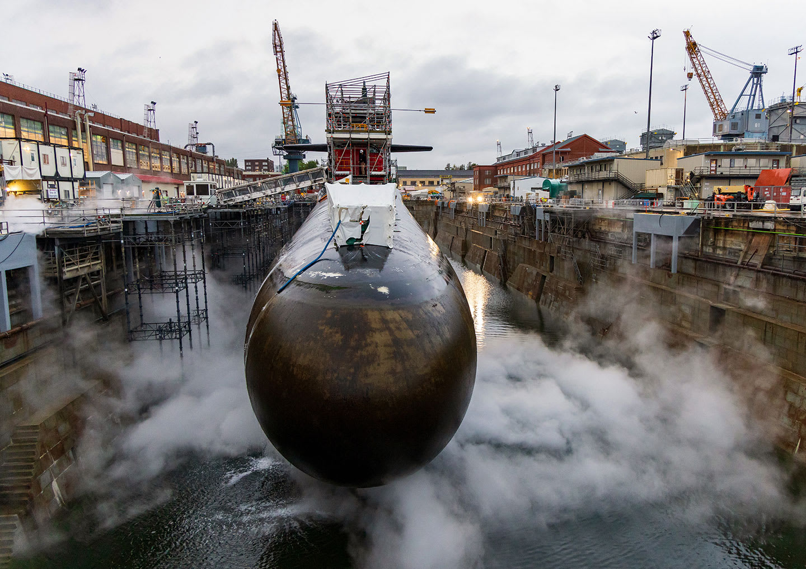
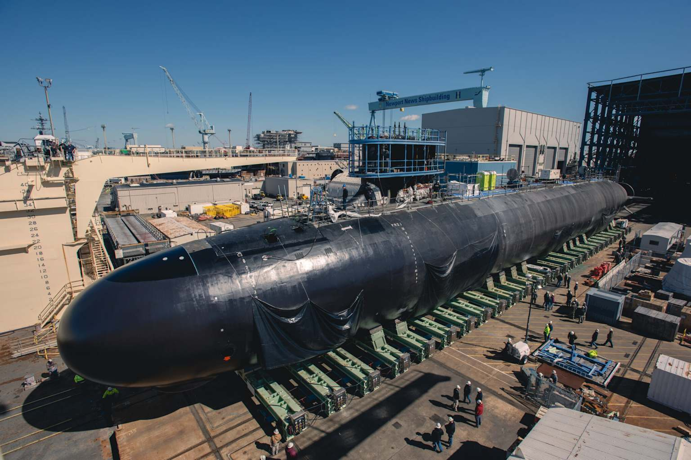
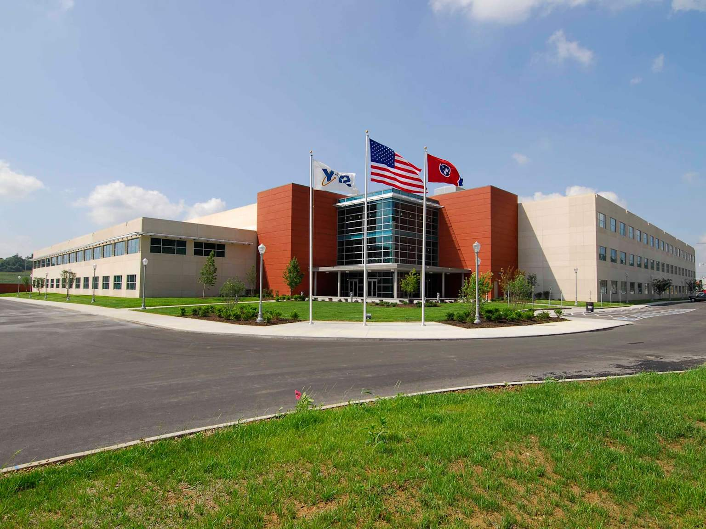
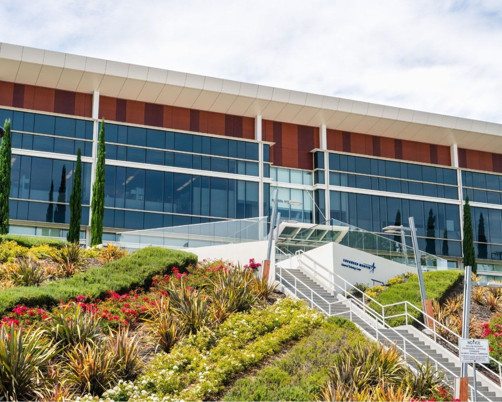
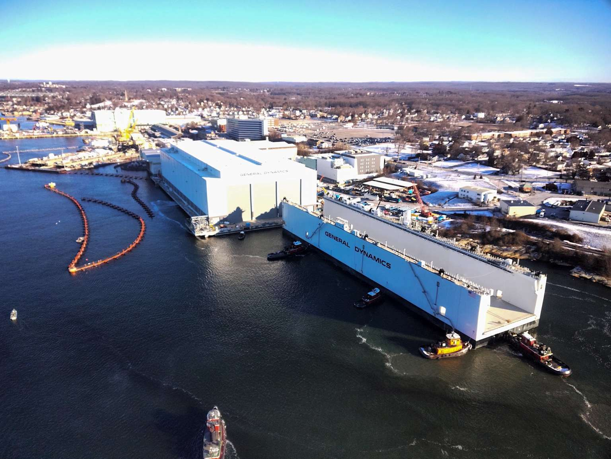
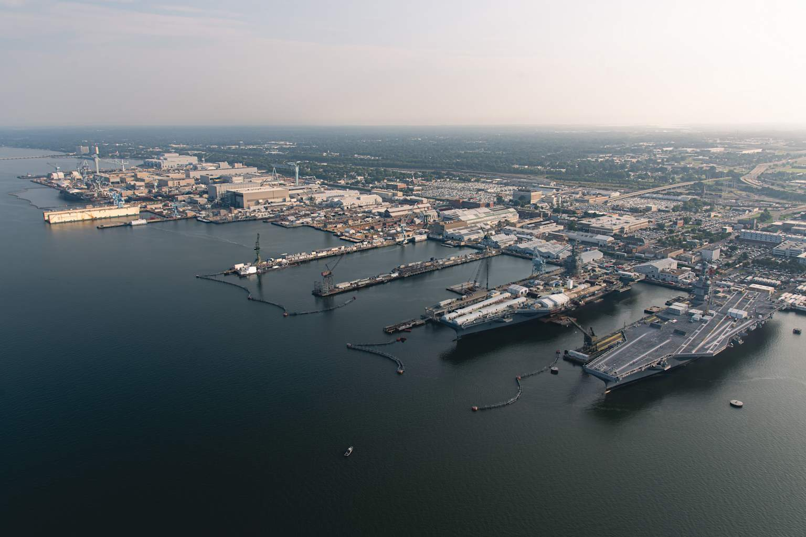
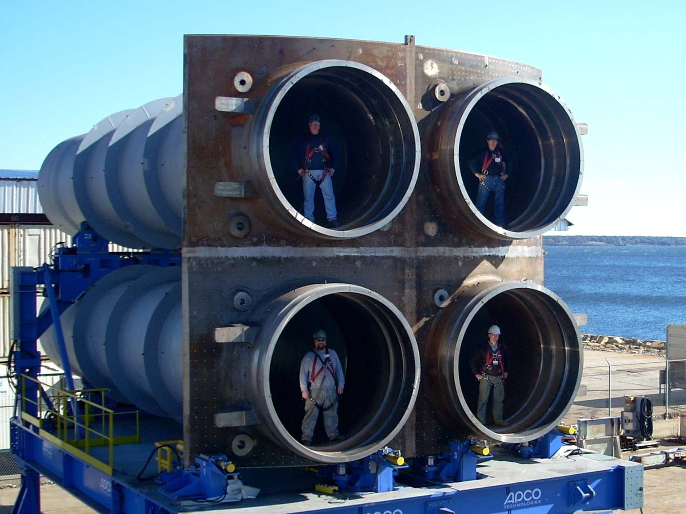
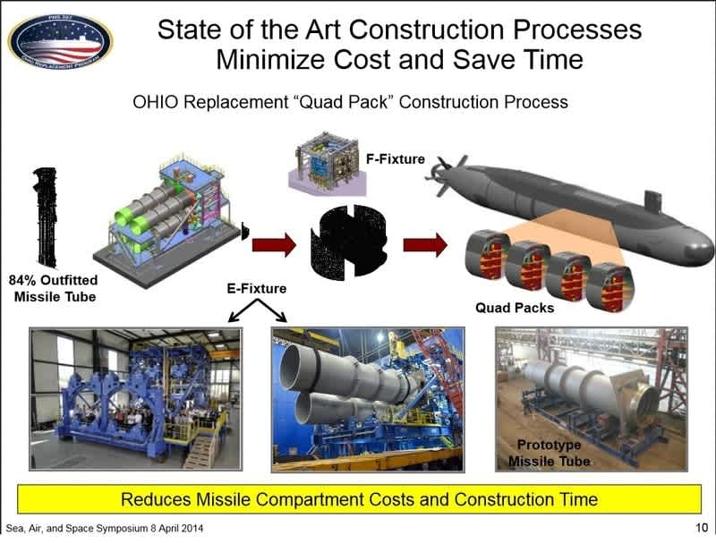
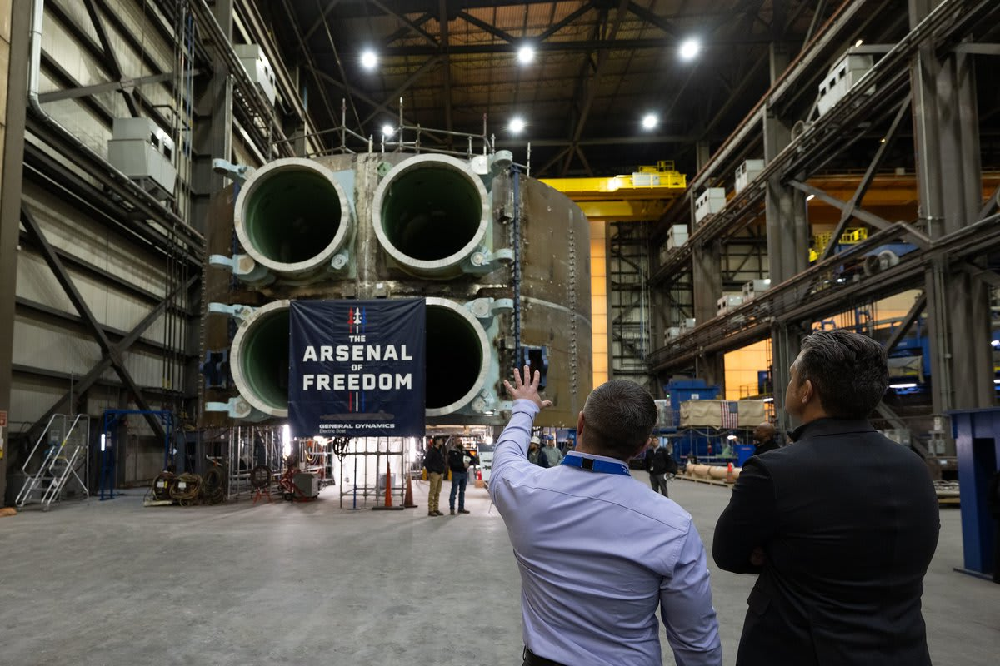

Outsourced work on U.S. nuclear submarine construction
This article describes the structure and visible dollar flow of work that the U.S. nuclear submarine "primes" — primarily General Dynamics Electric Boat and the Newport News Shipbuilding division of Huntington Ingalls Industries — outsource to other firms during construction of Virginia-class attack submarines and Columbia-class ballistic-missile submarines. For the ship classes themselves, including operational and design history, see Virginia-class submarine and Columbia-class submarine.
 A Columbia-class submarine hull section under construction in dry dock. | |
| Cost-funnel decomposition of Virginia- and Columbia-class new-construction spending | |
| Scope | Virginia (SSN-774) and Columbia (SSBN-826) new construction, FY2018–FY2027 |
|---|---|
| Prime of record | General Dynamics Electric Boat (Groton, CT; Quonset Point, RI) |
| Team partner | Huntington Ingalls Industries, Newport News Shipbuilding (Newport News, VA) |
| Naval Reactors GFE prime | Bechtel Plant Machinery, Inc. (Monroeville, PA; Schenectady, NY) |
| Combat-system / ordnance GFE primes | Lockheed Martin (Virginia combat systems, Trident II D5 / D5LE2), Northrop Grumman (sonar, electronic warfare) |
| Major component primes | L3Harris (photonic masts), Curtiss-Wright (nuclear pumps, valves), Rolls-Royce (propulsion), BAE Systems (deck modules, forward subassemblies) |
| Industrial-base pass-through | BlueForge Alliance (consortium, College Station, TX) |
| Per-boat procurement cost (FY2027 PB) | Virginia ~$5.0B at 2/yr rate; Columbia 2nd boat $10.7B; Columbia lead boat $16.1B |
| Basic Construction as share of total ship cost | ~56% to 80% depending on FY and class |
| Outsourced layer within Basic Construction | 50–65% (industry-baseline band) |
| DoD-announcement outside-EB share (FY2022 mid – FY2026 mid, submarine-relevant supplier-targeted actions) | ~78% of $25.4B |
| DoD-announcement outside-both-yards share (same window) | ~52% of $25.4B |
| FFATA-visible first-tier subawards on 15 new-construction PIIDs (FY2016–FY2026 action date, MIB excluded) | ~$6.1B cumulative, ~759 unique parent vendors |
| Largest single FFATA-visible recipient (FY16–FY25 cumulative, before MIB exclusion) | BlueForge Alliance, $4.17B (Columbia industrial base) |
| HII guidance, outsourcing hours growth | +30% year-over-year (FY2026, official guidance May 2025) |
| Navy "Golden Fleet" distributed-shipbuilding target | 10% → 50% |
| As of | May 2026 |
Outsourced submarine work is the portion of the United States Navy's Shipbuilding and Conversion (SCN) appropriation for Virginia-class (SSN-774) attack submarines and Columbia-class (SSBN-826) ballistic-missile submarines that is performed by firms other than the two assembling nuclear shipyards — General Dynamics Electric Boat (GDEB) and the Newport News Shipbuilding division of Huntington Ingalls Industries (HII-NNS). It encompasses (1) the long-lead-time material and component procurement that the shipbuilder buys from outside vendors before hull construction begins, (2) the basic-construction-phase subcontracts that the prime issues to the broader supplier base, (3) the government-furnished equipment (GFE) that the Navy procures from separate primes — most importantly Bechtel Plant Machinery, Inc. for the naval reactor plant and Lockheed Martin for combat systems — and ships to the assembling yard for installation, and (4) the Maritime Industrial Base (MIB) supplier-development and workforce-training spending that is contractually routed through the Columbia prime but distributed to small and mid-tier suppliers across the country.
This article is organized around a cost-funnel decomposition of the per-class per-fiscal-year SCN allocation. Total ship cost is divided into Plans (engineering and design), GFE, Other (change orders, reserves), and Basic Construction — the dollar value of the prime construction contract itself. Basic Construction is further decomposed into the share the prime shipyard self-performs and the share it outsources to its supplier base. Within the outsourced layer, only a fraction is captured in the publicly visible first-tier subaward stream that primes report under the Federal Funding Accountability and Transparency Act of 2006 (FFATA); the larger remainder is purchased material booked as direct material cost, lower-tier subcontracts beneath the FFATA first tier, and supplier work performed by primes that systematically under-report. The article uses Department of Defense daily contract action announcements — which state explicit percentage breakdowns of where each action's work is performed — as the most direct primary-source measurement of outsourced share.
The headline findings are that approximately 50 to 65 percent of Basic Construction value is outsourced industry-wide for complex shipbuilding (a band consistent with the U.S. Government Accountability Office and Congressional Research Service descriptions of supplier-base atrophy, sole-source supplier dependency, and recent shipbuilder statements that they are "expanding outsourcing"), and that DoD contract action announcements for the 34-month window from July 2022 to May 2026 show that approximately 78 percent of submarine-relevant supplier-targeted action value flows to firms other than General Dynamics Electric Boat, and that approximately 52 percent flows to firms outside both shipyards combined. The publicly visible FFATA first-tier subaward stream (Subaward Reporting System, SAM.gov) captures approximately $1 billion per year in directly named vendors — roughly 10 to 15 percent of the outsourced layer indicated by the cost-funnel and DoD-announcement measurements. The trajectory is unambiguous: the lead Columbia advance-procurement action of December 2022 placed 100 percent of work at the two nuclear shipyards; the Virginia Block VI long-lead-time material action of May 2026 placed 98 percent of work at firms outside both yards. Huntington Ingalls Industries has publicly guided to a 30-percent year-over-year increase in outsourcing hours, and the U.S. Navy's May 2026 30-Year Shipbuilding Plan sets a formal target to increase the share of Navy shipbuilding occurring at "distributed sites" from approximately 10 percent today to approximately 50 percent.
Scope and the funnel framework
This article uses a cost-funnel decomposition of the U.S. Navy's Shipbuilding and Conversion (SCN) appropriation for Virginia-class and Columbia-class submarines to organize the question of how much submarine new-construction value is performed by firms other than the assembling shipyards. The funnel starts at the per-fiscal-year per-class top-line cost of the boat, descends through the budget-justification cost categories (Plans, Government-Furnished Equipment, Other, and Basic Construction), and then descends one further layer into Basic Construction itself, separating the share that the prime shipyard self-performs from the share it outsources to the broader supplier base. The outsourced layer within Basic Construction is the principal object of the article; everything else in the funnel exists to size, contextualize, or qualify it.
This chapter defines the terminology, sets the scope window and the in-scope prime-contract identifiers, lays out the funnel structure, and notes the dollar-bucketing conventions used throughout. The terminology is largely conventional within federal procurement and U.S. Navy shipbuilding, but several terms have specific meanings under the Federal Acquisition Regulation (FAR), the Federal Procurement Data System (FPDS), or the Federal Funding Accountability and Transparency Act of 2006 (FFATA) that differ from colloquial usage and that warrant clarification.
The cost funnel
The funnel is the analytical spine of the article. At each level it cuts from the total figure to the addressable subset:
TOTAL SHIP COST (per-class per-FY, from SCN P-5c Total Ship Estimate)
│
├── PLANS COSTS engineering, detail design, T&E, config mgmt
│
├── GOVERNMENT-FURNISHED EQUIPMENT Navy procures separately, ships to yard:
│ ├── Naval reactor plant (Bechtel Plant Machinery, Inc.)
│ ├── Combat systems (Lockheed Martin, Virginia program)
│ ├── Sonar / EW (Northrop Grumman)
│ ├── Ordnance / launch
│ ├── Periscopes / electronics (L3Harris and others)
│ └── HM&E components (various)
│
├── CHANGE ORDERS / OTHER ECPs, block mods, reserves
│
└── BASIC CONSTRUCTION the prime contract base — the dollars
│ that flow to GDEB on the SCN PIID
│
├── YARD SELF-PERFORMED labor + overhead at Groton / Quonset / NNS
│
└── OUTSOURCED WITHIN BC ── the principal object of this article
│
├── FFATA-visible first-tier subawards reported under
│ FAR 52.204-10, published in SAM.gov FSRS
│
└── UNSEEN LAYER ── beyond direct visibility:
├── Purchased material booked as direct material
├── Lower-tier subs (a sub's sub — not reportable)
├── FFATA non-compliance / under-reporting
├── HII-NNS team-build share (flows through GDEB prime)
└── Long tail under the $30,000 threshold
A complete answer to "how much of the submarine's cost is outsourced" requires a denominator statement: outsourced relative to what? The funnel makes four candidate denominators visible.
Four denominators of "outsourced"
The choice of denominator is the choice of question. The article reports against each of them where the data supports it, and is explicit about which is being used at every point. None of the four is reducible to the others without loss of meaning.
- Outsourced from GDEB — the share of GDEB's own prime construction contract that GDEB pays to other firms. The numerator is the GDEB first-tier subaward tree under FAR 52.204-10, plus the larger unseen subset of GDEB's purchased material and lower-tier subcontracting that is not captured under that clause. Bechtel reactor procurement is not outsourced from GDEB (GDEB does not pay Bechtel; the Navy does, on a separate prime contract). HII Newport News team-build is outsourced from GDEB, structurally, because the dollars flow through GDEB's prime even though only a small share appears as a visible HII-NNS subaward of GDEB.
- Outsourced from the Navy / SCN perspective — the share of the SCN appropriation that flows to firms other than the assembling shipyards (GDEB plus the HII-NNS team-build share). This adds the GFE-prime flows — Bechtel, Lockheed Martin, Northrop Grumman — to the GDEB subaward tree. It is closest to the denominator the Navy's 30-Year Shipbuilding Plan implicitly uses when it discusses "distributed shipbuilding" and "outsourcing partners."21
- Outside-the-yard / outside-the-prime-team — measured directly per contract action from the U.S. Department of Defense daily contract-announcement press releases, which state explicit percentage breakdowns of where each action's work will be performed. This is the most direct primary-source measurement because it does not depend on accounting categorization at all; the announcement names the cities and the percentages. See DoD contract announcement data.
- Private-sector work outside the assembling yard — any private-firm work not performed inside the GDEB hull-construction yards in Groton, Connecticut and Quonset Point, Rhode Island. This includes everything in (1) and (2), plus the HII-NNS team-build share (work performed at a different private yard), plus federally funded research and development center (FFRDC) and Department of Defense laboratory work funded outside SCN.
This article emphasizes denominators (2) and (3) in the headlines, and reports (1) explicitly throughout. Denominator (4) is discussed in Limitations and the unseen layer but not aggregated.
"Prime" and "prime of record"
In federal procurement, the prime contractor is the firm holding a direct contract with the U.S. government. For Virginia-class and Columbia-class submarine construction, the prime of record on every active SCN Line Item 2013 (Virginia) and Line Item 1045 (Columbia) construction contract is General Dynamics Electric Boat (GDEB), headquartered in Groton, Connecticut and with major production at Quonset Point, Rhode Island. General Dynamics Corporation discloses GDEB's role as Columbia and Virginia prime, including the teaming arrangement with HII-NNS, in its Form 10-K filings with the U.S. Securities and Exchange Commission.1
Huntington Ingalls Industries Newport News Shipbuilding (HII-NNS) participates as a team partner under a long-standing arrangement that publicly assigns it approximately half of Virginia-class construction and approximately a fifth of Columbia-class construction by physical workload share. HII-NNS does not appear as a prime in FPDS records for submarine construction; its work flows through the GDEB prime contracts and is recorded against GDEB as the vendor of record. HII publicly describes its Columbia role as constructing and delivering approximately six module sections per submarine — bow, stern, auxiliary machinery room, superstructure, missile compartment, and weapons modules — under subcontract to GDEB.2
Several major component categories are procured directly by the Navy under separate prime contracts with other firms and ship the resulting equipment to GDEB for installation. These are referred to as GFE primes for the part of their work that is government-furnished to GDEB. The largest single GFE prime by dollar value is Bechtel Plant Machinery, Inc. (BPMI), which supplies the naval reactor plant under Naval Reactors' direction. Other GFE primes include Lockheed Martin (Virginia-class combat systems hardware and software; Trident II D5 / D5LE2 strategic weapon system for Columbia), Northrop Grumman (submarine sonar and electronic-warfare systems), Curtiss-Wright (nuclear pumps and valves), BAE Systems (deck modules and forward subassemblies in Jacksonville, Florida), L3Harris (photonic masts), and Rolls-Royce (propulsion components).3
"Outsourced"
For the purposes of this article, outsourced describes any dollar of the SCN submarine new-construction appropriation that ultimately flows to a firm other than the assembling shipyard's own labor and overhead. Three categories are in scope:
- First-tier subcontracts and lower-tier subcontracts — work that the prime hires another firm to perform under the prime's own contract. First-tier subcontracts above the FFATA reporting threshold (currently $30,000 per action) are reportable to the FFATA Subaward Reporting System (FSRS), accessed via SAM.gov, under FAR 52.204-10. Lower-tier subcontracts (a subcontract of a subcontract) are not reportable; FFATA only reaches one tier below the prime.4
- Government-furnished equipment (GFE) — major equipment that the U.S. government procures from a separate prime contractor and ships to the assembling yard for installation in the hull. From the perspective of submarine production, the dollars are outsourced from the SCN appropriation perspective, even though they do not appear as subawards of the assembling yard. The naval reactor plant (BPMI), the Virginia-class combat systems (Lockheed Martin), and major sonar and electronic-warfare elements (Northrop Grumman) are all GFE.6
- Plans Costs, lead-yard support, and the Maritime Industrial Base (MIB) line — engineering services performed by the prime or by partner organizations, and the Navy's recent supplier-development and workforce-training spending that funds capacity expansion across the broader submarine supplier base. Beginning in approximately fiscal year 2022, the MIB line has carried roughly $1.3 billion or more per year, contractually routed through the Columbia prime but distributed almost entirely outside the prime shipyard. The Maritime Industrial Base Program Office was established by Navy memorandum in June 2024 and began operating in September 2024, formally institutionalizing the MIB layer.5
The article does not treat as "outsourced":
- Federal naval shipyard work at Norfolk Naval Shipyard (Virginia), Portsmouth Naval Shipyard (Maine), Pearl Harbor Naval Shipyard & Intermediate Maintenance Facility (Hawaii), and Puget Sound Naval Shipyard & Intermediate Maintenance Facility (Washington). These yards perform depot maintenance and engineered overhauls on Navy submarines, but they are federal facilities staffed by federal employees; their work is funded as federal payroll, not as outsourced contract activity.
- Federal employee labor at NAVSEA, the Strategic Systems Programs office, or the Program Executive Office Submarines. Government program-office labor is not part of the outsourced flow.
- Classified payload work — intelligence-community modules and special-mission payloads procured outside the public SCN appropriation are by design not visible in federal procurement data.
"Subaward" and the FFATA reporting threshold
A first-tier subaward in this article means a subcontract reported under the Federal Funding Accountability and Transparency Act of 2006 (FFATA) via FAR clause 52.204-10. The reporting threshold is currently subcontract actions above $30,000, and the clause defines reportable first-tier subcontracts as direct contractor subcontracts for performance of a prime contract.4 Filings flow into the FFATA Subaward Reporting System (FSRS) and are accessible via SAM.gov.
Several categories are excluded from the FFATA first-tier definition:
- Long-term supplier agreements, blanket purchase agreements, and indefinite-delivery / indefinite-quantity supplier agreements that are not direct prime-contract subcontracts.
- Indirect and general-and-administrative (G&A) items.
- Lower-tier subcontracts beneath the FFATA first tier (a sub of a sub is not reportable to FSRS under this clause).
- Standing supply or material agreements that pre-exist the prime contract and are not subordinated to it.
Beyond these definitional exclusions, FFATA compliance is uneven across the federal supplier base. The reporting gap is documented further in The unseen layer. The U.S. Government Accountability Office has separately found that "two of the shipbuilders we spoke with are already outsourcing work that would normally be done at their shipyards to their suppliers to overcome constrained physical space, with plans to expand the volume of material they are outsourcing" — a finding directly relevant to the gap between FFATA-visible subawards and the actual outsourced layer.5
"GFP," "GFE," and "CFE"
The formal Federal Acquisition Regulation umbrella term is Government-Furnished Property (GFP), defined under FAR Part 45 and contract clause FAR 52.245-1 as property in the possession of, or directly acquired by, the U.S. government and subsequently furnished to the contractor for performance of a contract.6 Government-Furnished Equipment (GFE) is the most commonly used label, particularly for major equipment-type GFP such as a naval reactor plant or a missile system. The broader GFP category may also include government-furnished material, tooling, test equipment, information, and facilities; this article uses GFE in its narrow equipment sense throughout.
Contractor-furnished equipment (CFE) is equipment procured by the prime contractor under its own contract and incorporated into the deliverable. For submarine construction, the major component categories that are GFE include the naval nuclear reactor plant (BPMI), the Trident II D5 / D5LE2 strategic weapon system for Columbia (Lockheed Martin Strategic Programs), and the AN/SQQ-89 / AN/BYG-1 combat-system elements (mixed). Items procured under the prime's basic-construction scope — including most hull material, structural fabrication, propulsion auxiliaries, and outfitting — are CFE. The GFE / CFE classification of a specific item is determined by the underlying contract and budget cycle, not by the item's intrinsic identity, and can change between budget cycles as Navy program-management arrangements evolve.
Scope: window, classes, and the 15 new-construction PIIDs
The article uses a fiscal-year 2018 through fiscal-year 2027 signed-date window for FPDS prime-contract data and a fiscal-year 2016 through fiscal-year 2026 action-date window for FFATA subaward data, where the wider subaward window captures pre-FY2018 actions on still-active master construction contracts. The article's primary substantive coverage is FY2020 forward, where the Justification Book data is complete; FY2018–FY2019 is included as a comparison baseline. The window was chosen to capture one full Virginia procurement block (Block V, FY2019–FY2023) plus the start of Block VI, plus the Maritime Industrial Base era transition from pre-MIB (FY2020–FY2022) to MIB era (FY2023 onward).
The article scopes the outsourced-flow analysis to fifteen submarine new-construction prime contract Procurement Instrument Identifiers (PIIDs). The scope was deliberately narrowed from a broader inventory of submarine-related contracts to focus on new construction; depot maintenance, overhauls, and backfit-upgrade contracts are out of scope even though they are submarine-related. The fifteen in-scope PIIDs span the two construction primes (GDEB and HII-NNS as team partner), the four GFE primes that are dollar-material to the cost funnel (Bechtel Plant Machinery, Lockheed Martin, BAE Systems, and Rolls-Royce), and the Maritime Industrial Base layer routed through Columbia:
| PIID | Prime | Class | Description |
|---|---|---|---|
N0002417C2100 |
GDEB | Virginia | Block V / VI master construction contract |
N0002417C2117 |
GDEB | Columbia | Build I + II master construction contract |
N0002424C2110 |
GDEB | Virginia | Block VI long-lead-time material |
N0002412C2115 |
GDEB | Virginia | Block IV multi-year procurement |
N0002409C2104 |
GDEB | Virginia | Block II residual |
N0002413C2128 |
GDEB | Columbia | Design drawings |
N0002411C2109 |
GDEB | Columbia | SSBN-R concept formulation |
N0002416C2111 |
GDEB | Virginia | Virginia Payload Module vent valve (Block V) |
N0002410C2118 |
GDEB | Virginia | Virginia Payload Module tube fabrication |
N0002419C2114 |
BPMI | Columbia | Naval reactor components |
N0002419C2115 |
BPMI | Columbia | Columbia Class Industrial Base Increase |
N0002424C2114 |
BPMI | Virginia | S9G reactor |
N0002410C6266 |
LM | Virginia | Combat systems hardware and software |
N0002421C4106 |
BAE | Virginia | SSN 812 forward subassembly |
N0002421C4111 |
RR | Virginia | Virginia-class submarine rotor |
Two submarine-related PIIDs that appear elsewhere in the federal procurement record are explicitly excluded from this scope because they fund depot maintenance or backfit upgrades rather than new construction:
N0002420C4312— USS Hartford (SSN-768) Engineered Overhaul; excluded because it is an overhaul of an existing boat.N0002419C2125— Virginia Tech Instructions / HPAD backfit; excluded because it funds upgrades to existing boats.
Three subaward recipient parent legal entities are excluded from outsourcing-rate calculations as Maritime Industrial Base pass-throughs that fund supplier-development infrastructure and workforce training rather than component or services delivery into a hull:
- BlueForge Alliance (UEI F8PEZKXES8B1) — non-profit consortium pass-through routed primarily through Columbia Build I+II (
N0002417C2117). Cumulative receipts FY2016–FY2025 of approximately $4.17 billion. - Training Modernization Group, Inc. (UEI QLJZVM6XKR71) — workforce training, approximately $77 million cumulative.
- Institute for Advanced Learning and Research (UEI TCM3R4JPRKY4) — workforce training, approximately $1.5 million cumulative.
The Maritime Industrial Base layer is treated separately in The Maritime Industrial Base layer; it is excluded from the headline outsourcing-rate measurement but reported alongside it. The BPMI N0002419C2115 "Columbia Class Industrial Base Increase" PIID, although named to indicate it is in part a capacity-investment vehicle, remains in scope because BPMI's broader role is direct procurement of reactor-plant components rather than pass-through to other firms.
Cumulative versus window-period dollars
The Federal Procurement Data System reports two distinct dollar fields per contract modification:
obligatedAmount— the dollars added by this specific modification (this-action only).totalObligatedAmount— the cumulative total of all modifications up through this one, since the contract was originally awarded.
A contract with a 2017 base award that has been receiving modifications through 2026 will show a totalObligatedAmount at the latest modification that may be dominated by pre-window obligations. For annual rollups, this article uses per-modification obligatedAmount summed by signed-date fiscal year, not the latest cumulative total. The Virginia Block IV master construction contract N0002412C2115 is the canonical example: at the latest modification it carries roughly $20 billion of cumulative obligation, but inside the FY2018–FY2026 signed-date window the per-modification flow is approximately two orders of magnitude smaller. Using cumulative totalObligatedAmount would massively overstate the window flow by counting pre-window obligations.
For subaward data, the article uses per-record subAwardAmount summed by subAwardDate fiscal year. The FFATA Subaward Reporting System assigns a unique subAwardReportId to each filed subaward action; the article relies on this uniqueness rather than on retroactive deduplication.
Multi-vintage budget reconciliation
The U.S. Department of the Navy publishes the SCN Justification Book annually as part of the President's Budget submission. Each book reports approximately seven fiscal years of data per line item — prior years (lump sum), the most recent actual, the prior-year estimate, the budget-request year (base plus overseas operations cost plus total), and several outyears. The reported values for any given fiscal year get revised in subsequent books: a fiscal year shown as the "estimate" column in one book becomes the "actual" column in the next, often with material changes due to inflation, shipbuilder performance, or program-restructuring actions.
To produce a per-fiscal-year cost figure that reflects the most accurate available information, this article uses the most recent Justification Book that shows the target fiscal year as a settled actual, defaulting to a rule of most recent PB year ≥ FY+2. For example, the FY2024 Total Ship Estimate for the Columbia second hull (SSBN-827) is taken from the FY2026 PB book, which shows FY2024 in its prior-actual column. The full set of vintages consulted spans the FY2022 through FY2027 PB books.78
P-1 line numbers drift across books (Virginia's P-1 line number was 5 in PB22 through PB25, 8 in PB26, and 6 in PB27), but the underlying Line Item numbers are stable: Columbia is Line Item 1045, Virginia is Line Item 2013. The article uses LI numbers throughout for cross-vintage stability.
Article scope and distinctions
This article covers the structure of outsourced spending on Virginia-class and Columbia-class new construction: prime and team-build relationships, the major contract vehicles, the cost-category structure of the SCN line items, government-furnished equipment, publicly visible first-tier subawards, the Maritime Industrial Base flow, executive commentary on outsourcing strategy, Navy and Office of the Secretary of Defense policy, and the structural limitations of the visible data. Detailed engineering content, operational history, classified payload material, hull-level cost details below the SCN P-5c level, and supplier proprietary information are outside its scope.
This article is distinct from:
- Submarine design and acquisition history — addressed in the U.S. Navy's class fact files, Congressional Research Service program reports, and Selected Acquisition Reports.
- Submarine operational history and deployments — service history, mission tasking, and operational employment.
- Surface-combatant industrial base — DDG-51, FFG-62 Constellation, and aircraft-carrier industrial-base topics are treated separately.
- Foreign submarine programs — United Kingdom Astute and Dreadnought construction at BAE Systems Submarines (Barrow-in-Furness) and the broader AUKUS Pillar 1 effort. Some United Kingdom partner content appears in the Columbia subaward data (Babcock Marine Rosyth, Rolls-Royce UK) but the foreign programs themselves are not in scope.
- Submarine depot maintenance and engineered overhauls — performed primarily by the four public naval shipyards and excluded from the "outsourced" definition above.
Cross-references
- For the per-class per-fiscal-year top-line cost: Total ship cost.
- For Plans, GFE, and Other Costs: Plans, GFE, and other layers.
- For Basic Construction sub-categories: Basic Construction.
- For the long-lead and advance procurement detail: Long-lead and advance procurement.
- For the 50-to-65-percent outsourced-band evidence: The outsourced layer within Basic Construction.
- For the direct DoD-announcement measurement of outsourced share: DoD contract announcement data.
- For the FFATA-visible first-tier subaward stream: FFATA-visible first-tier subawards.
Total ship cost
The first level of the cost funnel is the per-class per-fiscal-year top-line cost of the submarines procured under the Navy's Shipbuilding and Conversion (SCN) appropriation. This chapter documents how that cost is reported in the SCN Justification Book, how it has been revised across budget vintages, and how it cross-validates against Congressional Research Service program-cost figures. The aggregate per-class per-fiscal-year figures in this chapter are the starting point that all subsequent layers of the funnel are sized against.
How total ship cost is reported
The U.S. Department of the Navy publishes per-line-item cost detail in the SCN Justification Book. Two exhibits matter at this level of the funnel:7
- Exhibit P-40, Budget Line Item Justification reports per-fiscal-year quantities and total obligational authority (TOA) for the line item, including a breakout of gross procurement cost, Less Prior Year Advance Procurement, Plus Current Year Advance Procurement, and Net Procurement.
- Exhibit P-5c, Ship Cost Analysis reports the cost-category breakdown per hull (Plans Costs, Basic Construction/Conversion, Change Orders, Electronics, Propulsion Equipment, Hull-Mechanical-Electrical, Ordnance, Other Cost, Total Ship Estimate).
For purposes of the funnel, the Total Ship Estimate from Exhibit P-5c is the per-hull top-line; the P-40 Total Obligational Authority is the per-line-item top-line including advance procurement timing effects. The two figures reconcile after the per-fiscal-year advance procurement is added back; they are not the same number for the same fiscal year because advance procurement is paid in the year before construction begins.
P-1 line numbers drift across Justification Books — Virginia's P-1 line number was 5 in the FY2022 through FY2025 books, then 8 in FY2026, then 6 in FY2027 — but the underlying Line Item numbers are stable. Columbia is Line Item 1045 and Virginia is Line Item 2013 throughout, and this article uses LI numbers for cross-vintage stability.
Multi-vintage reconciliation
Per-fiscal-year cost figures get revised in subsequent Justification Books. A fiscal year that appears as the "estimate" column in one book becomes the "actual" column in the next, frequently with material changes due to inflation, shipbuilder performance, contract restructuring, or scope adjustments. To produce per-fiscal-year figures that reflect the most accurate available information, the article uses the most recent Justification Book that shows the target fiscal year as a settled actual (or, for outyears, the most recent book that shows it at all).
The revisions across vintages are substantial. Virginia fiscal year 2025 is the largest single example: the FY2023 Justification Book (PB23) reported an FY2025 estimate of approximately $8.7 billion; the FY2027 Justification Book (PB27) shows the same fiscal year as an actual of approximately $13.3 billion. The corresponding Columbia line for FY2025 was revised from approximately $7.2 billion in PB23 to approximately $9.6 billion in PB27. The drivers cited in the FY24-FY27 Justification Book narratives include inflation, the lead-Columbia 17-month delay first acknowledged in the FY2026 budget submission, shipbuilder performance issues on SSBN-826 and SSBN-827 that consumed schedule margin, and the Maritime Industrial Base ramp.9
Per-class per-fiscal-year top-line
The table below presents per-class per-fiscal-year procurement quantity, gross unit cost, Total Ship Estimate (P-5c), and Total Obligational Authority (P-40 net procurement plus current-year advance procurement). All values are nominal then-year dollars. Fiscal years before FY2020 are not reported here because the article's substantive coverage begins FY2020; earlier values for active programs (Columbia and Virginia Block IV, V, VI) are aggregated as "Prior Years" in the books.
Columbia (Line Item 1045)
| FY | Qty | Hull | Unit cost $M | Total Ship Estimate $M | TOA $M | Source vintage |
|---|---|---|---|---|---|---|
| 2020 | 0 | (AP only) | — | — | 1,820.9 | PB22 |
| 2021 | 1 | SSBN-826 | 15,179.1 | 16,121.6 | 4,122.2 | PB23 |
| 2022 | 0 | (AP only) | — | — | 4,777.0 | PB24 |
| 2023 | 0 | (AP only) | — | — | 5,857.8 | PB25 |
| 2024 | 1 | SSBN-827 | 10,688.5 | 10,688.8 | 7,789.3 | PB26 |
| 2025 | 0 | (AP only) | — | — | 9,580.8 | PB27 |
| 2026 | 1 | SSBN-828 | 10,744.3 | 10,744.3 | 9,279.6 | PB27 |
| 2027 | 1 | SSBN-829 | 10,486.4 | 10,486.4 | 15,583.1 | PB27 |
The Columbia procurement profile alternates between AP-only years (no boat procured) and construction-funded years (one boat procured) through the early build. The lead boat SSBN-826 carries a much higher Total Ship Estimate ($16,121.6 million) than the second hull SSBN-827 ($10,688.8 million) because the lead-boat figure absorbs non-recurring design and tooling costs, and because Plans Cost loading is concentrated on the first hull — Plans Costs alone account for approximately $6,946 million of the SSBN-826 Total Ship Estimate.

Virginia (Line Item 2013)
| FY | Qty | Hulls | Unit cost $M | Total Ship Estimate $M | TOA $M | Source vintage |
|---|---|---|---|---|---|---|
| 2020 | 2 | Block V | 3,741.8 | — | 8,334.7 | PB22 |
| 2021 | 2 | Block V | 3,607.6 | — | 6,776.4 | PB23 |
| 2022 | 2 | Block V | 3,450.4 | 6,915.8 | 6,339.6 | PB24 |
| 2023 | 2 | Block V | 3,625.3 | 7,250.6 | 6,864.5 | PB25 |
| 2024 | 2 | Block V | 5,688.8 | 11,377.6 | 10,656.9 | PB26 |
| 2025 | 1 | Block VI | 9,500.5 | 9,500.5 | 13,320.2 | PB27 |
| 2026 | 1 | Block VI | 5,389.1 | 5,389.1 | 6,377.5 | PB27 |
| 2027 | 2 | Block VI | 5,718.5 | 11,437.0 | 13,151.3 | PB27 |
The Virginia program transitions from Block V (FY2019-FY2023) to Block VI in FY2024-FY2028. The block transition is visible in the FY2024 → FY2025 step in unit cost, where the FY2024 unit cost of $5,688.8 million reflects the final Block V hulls and the FY2025 unit cost of $9,500.5 million reflects the first Block VI hull at single-boat-per-year rate. The Congressional Research Service reports a Virginia per-boat procurement cost of approximately $5.0 billion under a two-per-year build rate per the FY2026 budget submission; the FY2027 PB-book figures of $5.4–5.7 billion per boat are consistent with this benchmark at the FY2026–FY2027 build cadence.10
Cross-validation against Congressional Research Service per-boat costs
The Congressional Research Service publishes per-boat cost figures for Columbia in the dedicated report Navy Columbia (SSBN-826) Class Ballistic Missile Submarine Program: Background and Issues for Congress (R41129), updated periodically. The December 2025 update reports the following per-boat Columbia costs, drawn from the Navy's FY2025 budget submission:9
| Hull | CRS R41129 (Dec 2025) | This article (PB27) | Reconciliation |
|---|---|---|---|
| SSBN-826 (lead) | $16,121.3M | $16,121.6M | matches |
| SSBN-827 (2nd) | $10,688.5M | $10,688.8M | matches |
| SSBN-828 (3rd) | $10,543.7M | $10,744.3M | 1.9% diff, vintage |
The minor difference on SSBN-828 ($200 million) is attributable to a vintage update between the Navy's FY2025 budget submission (the CRS source) and the FY2027 budget submission (this article's source).
The Congressional Research Service further reports that the 12-ship Columbia class total procurement cost is $126.4 billion in then-year dollars per the FY2025 budget submission, a 15.2 percent increase over the $109.8 billion figure in the FY2021 budget submission. The Congressional Budget Office's independent estimate for a 12-ship program is approximately 16 percent higher than the Navy's, implying a CBO estimate of approximately $146 billion.9
For Virginia, CRS RL32418 (January 2026) reports the per-boat procurement cost as "about $5.0 billion each" under a two-per-year build rate per the FY2026 budget submission, with class-wide procurement cost figures consistent with the PB27 line-item totals.10
Lead-boat schedule pressure
The CRS Columbia report documents two schedule data points that are relevant to the cost-revision pattern visible across budget vintages:9
- The FY2026 budget submission updated the estimated delay in delivery of the lead Columbia (SSBN-826) to 17 months beyond the contractual schedule.
- The lead boat is currently tracking to a 96-month build instead of the 84-month contractual timeline.
The Government Accountability Office identifies the late delivery of the SSBN-826 turbine generator — supplied by subcontractor Northrop Grumman — as one of the most significant single-supplier-driven contributors to the lead-boat delay.9 The implication for the cost funnel is that the per-fiscal-year top-line figures continue to revise upward as the program absorbs schedule slip and the supplier-base capacity expansion required to maintain build rate. The Ohio class begins retiring in 2027, and the lead Columbia must be ready for first patrol in fiscal year 2031 to avoid a gap in the strategic-deterrence requirement.11
Summary
Total ship cost is the top of the cost funnel. The figures in this chapter are the denominators that everything else in the article sizes against:
- Columbia: approximately $10.5–10.7 billion per boat at steady-state production after the lead, with the FY2021 lead boat at $16.1 billion absorbing non-recurring design content; total 12-ship class procurement cost approximately $126.4 billion (Navy) to $146 billion (CBO).
- Virginia: approximately $5.0–5.7 billion per boat at two-per-year production; reduced to approximately $9.5 billion at one-per-year build rate as Block VI begins; FY2027 PB shows a return to two-per-year procurement at $5.7 billion per boat.
The next three chapters decompose this top-line into Plans, Government-Furnished Equipment, Basic Construction, and Other — the four cost-category layers reported on Exhibit P-5c. Basic Construction is the layer the rest of the article is principally about.
Plans, GFE, and other layers
The U.S. Navy's SCN Exhibit P-5c, Ship Cost Analysis, decomposes the Total Ship Estimate into approximately nine cost categories. One of those categories — Basic Construction/Conversion — is the prime contract base that the next chapter covers; the other eight categories collectively represent the cost layers above and around Basic Construction. This chapter documents those layers: Plans Costs (engineering, design, and program-office labor), Change Orders (engineering change proposals and reserves), the four government-furnished equipment categories (Propulsion Equipment, Electronics, Hull-Mechanical-Electrical, Ordnance), and the Other Cost residual line.
Of the per-class per-fiscal-year Total Ship Estimate, Plans Costs and GFE together typically account for 30 to 60 percent of the value depending on the build phase and class, with Plans Costs concentrated on lead boats and GFE roughly steady at 15 to 30 percent across hulls. The dollars in these categories are largely outsourced from the SCN perspective — they flow to firms other than the assembling shipyard — but they are out of scope of the GDEB prime contract and therefore do not appear in GDEB's first-tier subaward tree. This chapter sets out the line-by-line cost shares for the Columbia and Virginia programs and identifies the primary firms behind each category.
P-5c cost-category structure
The Ship Cost Analysis exhibit reports a per-hull breakdown that, for submarines, follows a stable structure across vintages:7
Total Ship Estimate
├── Plans Costs (engineering, NRE, lead-yard support)
├── Basic Construction / Conversion (the prime construction contract base)
├── Change Orders (ECPs, growth, reserves)
├── Electronics (GFE — combat systems, sonar, EW, etc.)
├── Propulsion Equipment (GFE — reactor plant, propulsor)
├── Hull-Mechanical-Electrical (GFE — auxiliary machinery, HM&E)
├── Ordnance (GFE — torpedo tubes, weapons launchers)
└── Other Cost (residual line items)
The four GFE categories (Electronics, Propulsion Equipment, Hull-Mechanical-Electrical, Ordnance) are aggregated as the "GFE sum" throughout this article for purposes of the cost funnel. Plans Costs, Change Orders, and Other Cost are separately reported. The remainder — Basic Construction — is the prime contract base addressed in Basic Construction.
Columbia: per-fiscal-year cost-category shares
The table presents the per-fiscal-year P-5c breakout for Columbia hulls that have published P-5c data. All values in millions of nominal then-year dollars.
| FY | Hull | Plans | GFE sum | Other + CO | Basic Constr. | Total Ship Est. | Plans % | GFE % |
|---|---|---|---|---|---|---|---|---|
| 2021 | SSBN-826 | 6,946.3 | 2,727.7 | 468.2 | 5,979.4 | 16,121.6 | 43.1% | 16.9% |
| 2024 | SSBN-827 | 1,443.3 | 2,560.5 | 328.9 | 6,356.1 | 10,688.8 | 13.5% | 24.0% |
| 2026 | SSBN-828 | 1,095.8 | 2,125.0 | 363.7 | 7,159.8 | 10,744.3 | 10.2% | 19.8% |
| 2027 | SSBN-829 | 861.5 | 2,422.2 | 348.9 | 6,853.7 | 10,486.4 | 8.2% | 23.1% |
The Columbia lead boat (SSBN-826) carries an extraordinary Plans Cost loading: $6,946 million of plans-and-engineering cost out of a $16,121 million Total Ship Estimate — 43.1 percent of the total. This figure captures the non-recurring engineering for the entire Columbia class, by Navy convention loaded onto the first hull. By the second hull (SSBN-827), Plans Costs drop to $1,443 million (13.5 percent of total), and they continue to decline gradually as program development winds down: SSBN-828 at $1,096 million (10.2 percent) and SSBN-829 at $862 million (8.2 percent).
GFE remains in a tighter band — roughly $2.1 to $2.7 billion per hull, or 17 to 24 percent of Total Ship Estimate — reflecting the per-boat content of the naval reactor plant, combat systems, sonar and electronic warfare suite, and ordnance.
Virginia: per-fiscal-year cost-category shares
| FY | Hulls | Plans | GFE sum | Other + CO | Basic Constr. | Total Ship Est. | Plans % | GFE % |
|---|---|---|---|---|---|---|---|---|
| 2022 | 2 | 252.4 | 1,587.4 | 232.3 | 4,758.3 | 6,915.8 | 3.6% | 23.0% |
| 2023 | 2 | 192.2 | 1,634.5 | 244.2 | 5,095.4 | 7,250.6 | 2.6% | 22.5% |
| 2024 | 2 | 207.2 | 1,683.8 | 271.0 | 9,070.8 | 11,377.6 | 1.8% | 14.8% |
| 2025 | 1 | 2,595.8 | 1,318.2 | 156.0 | 5,326.5 | 9,500.5 | 27.3% | 13.9% |
| 2026 | 1 | 219.6 | 1,633.6 | 309.5 | 3,136.8 | 5,389.1 | 4.1% | 30.3% |
| 2027 | 2 | 223.4 | 1,898.0 | 290.4 | 8,889.3 | 11,437.0 | 2.0% | 16.6% |
Virginia has a markedly different Plans Cost profile from Columbia. The Virginia design is now in its sixth procurement block (Block VI in FY2024 onward), and the non-recurring engineering is largely amortized; per-fiscal-year Plans Costs at the two-per-year build rate are typically $200–250 million. The exception is FY2025, where Plans Costs spike to $2,596 million on a single boat — reflecting Block VI design and engineering investment that is recognized in that year. The Block VI investment timing is also visible in the FY2025 procurement at one boat rather than two, before the Block VI cadence ramps to two boats per year in FY2027.
GFE on Virginia runs slightly higher as a percentage than on Columbia — typically 14 to 30 percent of Total Ship Estimate — because Virginia is a smaller boat with relatively higher GFE content as a share of total cost. The FY2026 GFE share of 30.3 percent is partly driven by the one-boat-per-year denominator depressing the Total Ship Estimate.
What the GFE categories are
The four GFE cost categories (Propulsion Equipment, Electronics, Hull-Mechanical-Electrical, Ordnance) are populated by Navy-direct prime contracts with firms other than the assembling shipyard. The principal primes:
Propulsion Equipment — Bechtel Plant Machinery, Inc.


The Propulsion Equipment line is dominated by the naval reactor plant. Bechtel Plant Machinery, Inc. (BPMI) is the Navy's direct prime for naval reactor components, including reactor vessels, steam generators, primary coolant system components, control rod drive mechanisms, and integrated power-plant equipment. BPMI operates under Naval Reactors' direction with facilities in Monroeville, Pennsylvania (Westinghouse heritage) and Schenectady, New York (Knolls Atomic Power Laboratory heritage).12 BPMI is a private firm (a wholly owned Bechtel subsidiary) but its work is wholly directed by the Naval Reactors program office and the reactor plant is GFE to the assembling shipyard.
For Columbia, the Propulsion Equipment category in P-5c is approximately $1.5 to $1.7 billion per hull at steady state — closely matching the per-fiscal-year per-boat Nuclear Plant Long-Lead-Time Material budget reported in Exhibit P-10 (see Long-lead and advance procurement).
Electronics — Lockheed Martin and Northrop Grumman


The Electronics cost category is dominated by combat systems and sensors. Lockheed Martin is the Navy's prime for the Virginia-class combat system hardware and software under PIID N0002410C6266, valued at approximately $899 million in cumulative obligation against a $1.37 billion ceiling.13 Northrop Grumman is the principal sonar and electronic-warfare integrator, with Virginia AN/BLQ-10 electronic warfare and submarine sonar work concentrated at its Manassas, Virginia and Annapolis, Maryland facilities. The Naval Technology trade-press reporting on the Virginia Block VI long-lead-time material contract modification awarded in 2024 confirms that the bulk of the work for combat systems will take place in Sunnyvale, California (30 percent of the effort) — Lockheed Martin's Maritime Systems facility — with other significant sites including Chesapeake (Virginia), Minneapolis (Minnesota), York (Pennsylvania), and Tucson (Arizona).14
Lockheed Martin is also the prime for the Trident II D5 / D5LE2 strategic weapon system that arms Columbia. The Trident contract is funded outside the SCN appropriation under separate Navy Strategic Systems Programs (SSP) line items and does not appear in the SCN P-5c Electronics or Ordnance categories. It is mentioned here for completeness because public discussion of Columbia "GFE" sometimes conflates Trident with SCN-funded GFE; this article keeps them separate.
Hull-Mechanical-Electrical — auxiliary machinery and components
The Hull-Mechanical-Electrical category covers auxiliary machinery (pumps, valves, switchgear, hydraulic systems, ventilation, environmental control) and is the most fragmented of the four GFE categories. Curtiss-Wright Electro-Mechanical Corporation supplies nuclear-grade pumps; Curtiss-Wright Flow Control Corporation supplies valves; Northrop Grumman's DRS Power & Control Technologies (now part of Leonardo) supplies power-distribution and conversion equipment; and a long tail of smaller specialty machinery firms supply individual components.
Ordnance — torpedo tubes and launcher systems
The Ordnance category covers torpedo tubes, weapons launcher systems (including the Virginia Payload Module on Block V and later, and the Columbia missile compartment), and weapons-handling equipment. BAE Systems' Jacksonville, Florida shipyard fabricates deck modules and weapons-handling content for both classes.3 The Virginia Payload Module Vent Valve and Tube Fabrication contracts (PIIDs N0002416C2111 and N0002410C2118) are GDEB primes rather than Navy-direct primes, but they fund work that is integrated as ordnance content; in this article they are part of the GDEB scope but their P-5c content shows on the Ordnance line.
Plans Costs and the lead-boat loading convention
The dramatic difference between Columbia's lead-boat Plans Cost loading (43.1 percent of Total Ship Estimate for SSBN-826) and Virginia's per-FY Plans Cost (typically 2 to 4 percent at the two-per-year build rate) is a function of two factors:
- Lead-boat convention. The Navy by convention loads the non-recurring engineering for an entire class onto the first hull. Columbia is in lead-boat status; Virginia is in its sixth procurement block.
- Maritime Industrial Base loading. Beginning in FY2023, the Columbia Plans / SIB (Submarine Industrial Base) line in Exhibit P-10 includes the per-fiscal-year MIB funding routed through the Columbia prime. For Columbia, this added approximately $541 million in FY2023, $2,355 million in FY2024, $2,077 million in FY2025, $1,692 million in FY2026, and $810 million in FY2027 to the Columbia Plans / SIB line.7 Some of this MIB content shows as Plans Costs on Exhibit P-5c and some shows in advance procurement on Exhibit P-10; the loading varies across vintages.
The Virginia FY2025 Plans Cost spike to $2,596 million on a single boat reflects Block VI engineering and design investment recognized in that year, rather than ongoing MIB funding (which is principally routed through Columbia).
Change Orders and Other Cost
Change Orders and Other Cost together represent 2 to 5 percent of Total Ship Estimate in most fiscal years for both classes. Change Orders capture engineering change proposals (ECPs), block modifications, and reserves authorized within the prime contract; Other Cost is a residual line that varies in content across budget vintages. Both lines are small relative to Plans, GFE, and Basic Construction, and the rest of the article does not separately track them.
Where this leaves the funnel
After Plans, GFE, Change Orders, and Other Cost are removed from the per-class per-fiscal-year Total Ship Estimate, the remainder is Basic Construction — the prime contract base. For Columbia at steady state (SSBN-828 onward), Basic Construction is approximately 65 to 67 percent of Total Ship Estimate; for Virginia, Basic Construction is approximately 56 to 80 percent depending on the fiscal year (lower in years with single-boat builds or with concentrated Plans Cost loading, higher in two-boat steady-state years).
The next chapter takes this Basic Construction line as its subject. The chapter after that decomposes the long-lead-time material and advance procurement layer that sits underneath the construction-year cost figures. After both are characterized, the article addresses the central question: what share of Basic Construction is outsourced versus self-performed by the assembling yard.
Cross-references
- For Basic Construction itself: Basic Construction.
- For the Advance Procurement / Long-Lead-Time Material detail: Long-lead and advance procurement.
- For the Maritime Industrial Base layer routed through the Columbia Plans / SIB line: The Maritime Industrial Base layer.
Basic Construction
Basic Construction/Conversion — the line item the Navy's Exhibit P-5c Ship Cost Analysis labels as such — is the central analytical denominator of this article. It is the dollar value of the prime construction contract the Navy awards to General Dynamics Electric Boat under each fiscal-year SCN procurement. Within it, GDEB self-performs some of the work (labor and overhead at its Groton, Connecticut hull-construction facility and its Quonset Point, Rhode Island module fabrication facility), pays Huntington Ingalls Newport News Shipbuilding under the teaming arrangement to deliver its workshare, and subcontracts the remainder to the broader supplier base. The "outsourced share" question that the rest of this article addresses is properly phrased as the share of Basic Construction that flows to firms other than GDEB.
This chapter documents what Basic Construction is, how it scales across classes and fiscal years, and where it sits relative to the other cost-category layers of the Total Ship Estimate. It does not attempt to decompose Basic Construction into sub-categories the budget documents do not publish; instead, it characterizes the work content using the assembling shipyards' own public descriptions of the physical construction process.
What Basic Construction is


Basic Construction is the prime construction contract base — the dollars the Navy obligates against the SCN line-item PIID for the assembly of the hull. For Virginia and Columbia, the prime is GDEB under PIIDs N0002417C2100 (Virginia Block V/VI master) and N0002417C2117 (Columbia Build I/II master), among others.15 Inside this dollar figure are:
- Hull structural fabrication — pressure hull rolled and welded steel sections, framing, decks, bulkheads, and the structural integration of major module sections.
- Outfitting — installation of piping systems, electrical distribution, ventilation, hydraulic and compressed-air systems, foundations, fittings, and equipment installations.
- Auxiliary machinery installation — installation of pumps, valves, switchgear, and miscellaneous mechanical and electrical equipment (whether sourced as GDEB-purchased CFE or as government-furnished).
- Module integration — assembly of the hull from major module sections. For Columbia, this includes the Newport News-built bow, stern, auxiliary machinery room, superstructure, missile compartment, and weapons modules; for Virginia, the equivalent module construction at Quonset Point and Newport News.2
- Painting, testing, and final assembly — coating, hydrostatic and operational testing of installed systems, and shipyard-side integration and sea trials.
- Program management and overhead — GDEB program-office labor, facility overhead, supplier-management cost, and similar burdened costs allocable to the construction contract.
Items procured as GFE — the naval reactor plant, combat systems hardware and software, Trident strategic weapon system for Columbia, sonar and electronic-warfare integration — are not in Basic Construction; they appear on the separate Propulsion Equipment, Electronics, Hull-Mechanical-Electrical, and Ordnance lines of Exhibit P-5c covered in Plans, GFE, and other layers. Plans Costs are similarly separate.
Per-class per-fiscal-year Basic Construction
The table presents Basic Construction in nominal millions of then-year dollars, alongside Total Ship Estimate and the Basic Construction share. Per-fiscal-year values are drawn from the most recent Justification Book showing the fiscal year as a settled actual.78
Columbia (Line Item 1045)
| FY | Hull | Basic Constr. $M | Total Ship Est. $M | BC % of Total |
|---|---|---|---|---|
| 2021 | SSBN-826 | 5,979.4 | 16,121.6 | 37.1% |
| 2024 | SSBN-827 | 6,356.1 | 10,688.8 | 59.5% |
| 2026 | SSBN-828 | 7,159.8 | 10,744.3 | 66.6% |
| 2027 | SSBN-829 | 6,853.7 | 10,486.4 | 65.4% |
The Columbia lead boat (SSBN-826) has the lowest Basic Construction share (37.1 percent) because the Plans Costs absorb $6,946 million of the Total Ship Estimate — the lead-boat convention loading non-recurring engineering onto the first hull. The follow-on boats settle into a roughly 60-to-67-percent Basic Construction share as Plans Costs decline.
Virginia (Line Item 2013)
| FY | Hulls | Basic Constr. $M | Total Ship Est. $M | BC % of Total |
|---|---|---|---|---|
| 2022 | 2 | 4,758.3 | 6,915.8 | 68.8% |
| 2023 | 2 | 5,095.4 | 7,250.6 | 70.3% |
| 2024 | 2 | 9,070.8 | 11,377.6 | 79.7% |
| 2025 | 1 | 5,326.5 | 9,500.5 | 56.1% |
| 2026 | 1 | 3,136.8 | 5,389.1 | 58.2% |
| 2027 | 2 | 8,889.3 | 11,437.0 | 77.7% |
Virginia's Basic Construction share runs higher than Columbia's because Virginia is past lead-boat status and the Plans Cost loading is modest. Per-fiscal-year Basic Construction is approximately $4.8-5.1 billion for two-boat Block V years and approximately $8.9-9.1 billion for two-boat Block VI years; single-boat FY2025 and FY2026 show smaller Basic Construction with elevated Plans Cost in FY2025 (Block VI engineering recognized).
Cumulative Basic Construction across the window
For sizing the addressable supplier opportunity, the cumulative Basic Construction across the article's principal coverage window — fiscal years 2022 through 2027 — is approximately:
| Class | Years included | Cumulative Basic Construction |
|---|---|---|
| Virginia | FY22 + FY23 + FY24 + FY25 + FY26 + FY27 | $36,277M |
| Columbia | FY24 + FY26 + FY27 (procurement years) | $20,370M |
| Combined | — | $56,647M |
The Virginia cumulative is across six fiscal years of two-boat-equivalent procurement; the Columbia cumulative is across three procurement years (the AP-only years FY2022, FY2023, and FY2025 contribute no Basic Construction). On a per-fiscal-year basis the combined Basic Construction is approximately $8 to $11 billion per year during the article's coverage period, depending on which class is procuring in a given year.
Yard self-performed versus outsourced
Basic Construction is not equivalent to "what GDEB does in its own facilities." Basic Construction is the prime contract base — the dollars the Navy pays GDEB — and GDEB then distributes those dollars across:
- GDEB self-performed labor and overhead at Groton and Quonset Point.
- HII Newport News Shipbuilding workshare under the teaming arrangement. The publicly described split is approximately half of Virginia construction and approximately a fifth of Columbia construction by workload share.15
- Purchased material booked as direct material cost — major and minor components procured by GDEB from outside vendors and installed in the hull.
- First-tier subcontracts to outside firms for fabrication, services, or specialty work. The subset above the FFATA reporting threshold appears in the FFATA Subaward Reporting System (FSRS); the subset below the threshold, plus indirect items and certain long-term agreements, do not.4
- Lower-tier subcontracts beneath the first tier, which are not reportable to FSRS.
The dollar split among these five categories is the core of the outsourcing question. None of the five is reported directly by Navy or shipbuilder in a way that produces a clean make-or-buy ratio for the Basic Construction line. The article approaches the split through the combination of evidence in chapters 6 through 12: the cost-funnel framework (chapter 6), the direct DoD contract-announcement measurement (chapter 7), the FFATA-visible first-tier subaward data (chapters 8 and 9), the Maritime Industrial Base layer (chapter 10), the HII Newport News visibility gap (chapter 11), and the unseen layer of purchased material and lower-tier subcontracts (chapter 12).
The Government Accountability Office has confirmed the central directional finding that informs this article's analytical posture: "Two of the shipbuilders we spoke with are already outsourcing work that would normally be done at their shipyards to their suppliers to overcome constrained physical space, with plans to expand the volume of material they are outsourcing."5 The shipbuilders are HII and GDEB; both are operating at constrained shipyard capacity and have stated, through official channels, that they are expanding the share of work flowing to outside suppliers.
Module-section construction at the team partner

The most concrete public description of work performed outside the GDEB hull-construction yards within Basic Construction is HII's own description of its Columbia role. HII Newport News Shipbuilding publicly describes itself as constructing and delivering approximately six module sections per Columbia submarine under contract to GDEB, including bow, stern, auxiliary machinery room, superstructure, missile compartment, and weapons modules.2 These module sections are delivered from Newport News, Virginia to Groton, Connecticut for hull integration. The dollars associated with the HII workshare are inside GDEB's Basic Construction line — they are part of what GDEB receives from the Navy on the prime contract — but the work itself is performed at a different private shipyard.
For Virginia, the corresponding HII role is approximately half of the construction workload, with module fabrication at Newport News and at GDEB's Quonset Point, Rhode Island facility. The Virginia teaming split is documented in General Dynamics Corporation's Form 10-K filings: "[The Marine Systems segment has one primary competitor] with which it also partners on the Virginia-class submarine program, and to which it subcontracts on the Columbia-class submarine program."1
This article does not include the HII workshare in "outsourced" calculations of denominator (1) — outsourced from GDEB — because GDEB does pay HII through the prime, but the workshare is outsourced in denominators (2), (3), and (4). The HII Newport News visibility gap quantifies how much of the implied HII submarine workshare is invisible to the FFATA first-tier subaward stream.
Where this leaves the funnel
After this chapter, the cost funnel is positioned at the Basic Construction line for each class and each fiscal year. The cumulative Basic Construction across the FY2022-FY2027 window is approximately $56.6 billion. Per-fiscal-year Basic Construction is approximately $8 to $11 billion combined across the two classes.
The next chapter pulls back one step to examine the Advance Procurement layer — the long-lead-time material and economic order quantity purchases that the shipbuilder makes one or two fiscal years before the construction year, which the budget documents report on Exhibit P-10. AP is part of the same per-class per-fiscal-year procurement story (it is loaded onto specific construction years via the P-40 "Less Prior Year AP" and "Plus Current Year AP" lines), and it is the most concrete window the public budget documents provide into what the shipbuilder actually buys before bending steel.
After the AP detail, The outsourced layer within Basic Construction addresses the central question: how much of Basic Construction is purchased from outside firms versus self-performed by the assembling yard.
Long-lead and advance procurement
Advance Procurement (AP) is the material and component purchasing the Navy authorizes one to four fiscal years before the construction year of a given submarine. The fiscal-year separation exists because many components have manufacturing lead times that exceed the construction year itself — nuclear reactor components, large precision castings and forgings, propulsion machinery, and certain electronic systems all take multiple years to design, manufacture, qualify, and deliver. To meet the construction schedule, the Navy obligates funds for these items well before steel is bent on the hull they will be installed in.
The detailed breakdown of advance procurement appears in Exhibit P-10, Advance Procurement Requirements Analysis of the SCN Justification Book. Within the cost funnel, AP is significant for three reasons: it is the most concrete public window into what specifically the Navy and the shipbuilders buy from outside the assembling yard; it is the layer where the shipbuilder-procured long-lead-time material is visible, separately from government-furnished equipment; and it is large — approximately $3 to $5 billion per class per fiscal year at recent rates.
This chapter sets out the structure of advance procurement, presents the per-bucket breakdown for both classes, and identifies which buckets are most relevant to the "addressable supplier opportunity" question that frames the rest of the article.
How advance procurement is funded and reported
For each construction year of a given submarine, total procurement cost is computed in Exhibit P-40 as:
Total Obligational Authority (TOA)
= Net Procurement
= Gross Cost
− Less Prior Year Advance Procurement
+ Plus Current Year Advance Procurement
The "Less Prior Year AP" line subtracts the advance procurement funds obligated in earlier fiscal years for items that will be installed in the current year's hull (these are not paid twice). The "Plus Current Year AP" line adds the advance procurement funds being obligated now to support a future fiscal year's hull (these need to be paid now to clear long lead times).
The current-year AP is the layer that Exhibit P-10 itemizes. For Columbia, the FY2027 PB Justification Book reports P-10 Current Year AP of $4,763 million; for Virginia, the FY2025 PB-equivalent reports approximately $3,720 million. These figures are the per-fiscal-year top-line for the advance procurement tables that follow.7
Columbia: P-10 advance procurement buckets
Columbia uses a structure of approximately thirteen numbered sub-categories on Exhibit P-10, which this article rolls up into eight deck-narrative buckets:
| Bucket | What it contains |
|---|---|
| Nuclear plant LLTM | Reactor vessel, steam generators, primary coolant components, control rod drive mechanisms. Procured by Bechtel Plant Machinery, Inc. as GFE. |
| Shipbuilder-procured LLTM | Items BC(3), BC(5), BC(7) on Exhibit P-10: shipbuilder-procured long-lead-time material, advance construction, and shipyard-manufactured EOQ. Procured by GDEB from supplier base. The most directly "addressable" bucket from a supplier-opportunity perspective. |
| Missile compartment LLTM | Long-lead-time material for the missile compartment (the four-pack Common Missile Compartment shared with the UK Dreadnought program). |
| Electronics LLTM | Long-lead-time combat-systems and electronics components. |
| HM&E LLTM | Hull-Mechanical-Electrical long-lead-time material — auxiliary machinery components. |
| Ordnance LLTM | Ordnance system long-lead-time material — torpedo tubes, weapons handling. |
| EOQ | Economic Order Quantity — bulk-purchasing of recurring items across multiple hulls for unit cost savings. |
| Plans / SIB | Plans-related advance procurement and, beginning FY2023, the Submarine Industrial Base supplier-development funding routed through the Columbia prime. |
The per-bucket per-fiscal-year breakout for Columbia, in nominal then-year millions of dollars:16
| FY | Nuclear plant | Shipbuilder-procured | Plans / SIB | Missile compt | EOQ | Ordnance | Electronics | HM&E | Total |
|---|---|---|---|---|---|---|---|---|---|
| 2021 | 817 | 176 | 85 | 86 | 80 | 6 | — | 3 | 1,253 |
| 2022 | 797 | 339 | 110 | 177 | 176 | 124 | 8 | 43 | 1,774 |
| 2023 | 773 | 780 | 541 | 221 | 142 | 209 | 27 | 86 | 2,779 |
| 2024 | 1,272 | 521 | 2,355 | 174 | 779 | 169 | 8 | 67 | 5,345 |
| 2025 | 1,527 | 1,479 | 2,077 | 216 | 494 | 218 | 129 | 75 | 6,215 |
| 2026 | 1,441 | 1,145 | 1,692 | 261 | 382 | 233 | 111 | 86 | 5,351 |
| 2027 | 1,490 | 1,576 | 810 | 297 | 178 | 255 | 82 | 74 | 4,762 |
Three patterns are visible:
- Nuclear plant LLTM is steady and large. Approximately $1.4 to $1.5 billion per fiscal year, growing modestly with inflation. This is a wholly GFE bucket performed by BPMI; it is not addressable to non-BPMI suppliers.
- Shipbuilder-procured LLTM has risen sharply. From approximately $176 million in FY2021 to $1,576 million in FY2027 (a roughly nine-fold increase across seven fiscal years). This is the GDEB-purchased long-lead-time material — the most directly addressable bucket for new entrants to the submarine supplier base. The pattern of growth is consistent with HII Chief Executive Officer Chris Kastner's official guidance that outsourcing hours are growing 30 percent year-over-year and with the GAO finding that shipbuilders are expanding outsourcing.415
- Plans / SIB is the Maritime Industrial Base ramp. Approximately $85 million in FY2021, growing to $2,355 million in FY2024 and remaining over $1 billion through FY2026 before tapering to $810 million in FY2027. The growth is the MIB supplier-development and workforce-training funding routed through the Columbia prime, beginning institutionally in FY2023 when BlueForge Alliance ramps as the lead consortium pass-through.
Virginia: P-10 advance procurement buckets
Virginia uses a different P-10 structure with approximately three top-level sub-categories and several sub-items (Advance Procurement with Nuclear Propulsion / Electronics / Propulsor / Customer-Furnished Equipment one-year and two-year sub-items; Economic Order of Quantity; Plans). This article rolls them up into six deck-narrative buckets paralleling the Columbia structure:
| FY | Nuclear plant | Shipbuilder-procured (CFE) | Plans / SIB | EOQ | Electronics | Propulsor | Total |
|---|---|---|---|---|---|---|---|
| 2020 | 1,247 | 543 | — | 882 | 30 | — | 2,702 |
| 2021 | 883 | 542 | — | 427 | 31 | — | 1,883 |
| 2022 | 1,121 | 534 | — | — | 31 | 47 | 1,733 |
| 2023 | 1,005 | 724 | — | — | 32 | 49 | 1,810 |
| 2024 | 1,035 | 682 | 200 | 1,360 | 32 | 50 | 3,359 |
| 2025 | 1,273 | 1,065 | — | 1,298 | 33 | 50 | 3,719 |
| 2026 | 1,337 | 867 | 130 | 708 | 34 | 52 | 3,128 |
| 2027 | 1,403 | 885 | 1,768 | — | 34 | 53 | 4,143 |
The Virginia per-bucket pattern is similar in shape to Columbia, with the same three observations:
- Nuclear plant LLTM grows steadily from approximately $0.9 to $1.4 billion per fiscal year, again GFE through BPMI.
- Shipbuilder-procured LLTM (Virginia CFE one-year and two-year combined) has risen from approximately $542 million in FY2020 and FY2021 to $1,065 million in FY2025 and approximately $885 million per fiscal year through FY2027 at the two-per-year procurement rate. The doubling between FY2020 and FY2025 mirrors the Columbia shipbuilder-procured ramp.
- EOQ is large but discontinuous, reflecting the Virginia program's use of multi-year economic-order purchases on a procurement-block cadence. The $1,360 million in FY2024 and $1,298 million in FY2025 are Block VI EOQ purchases for multi-year material commitment.
- Plans / SIB is small and discontinuous for Virginia; the bulk of the Submarine Industrial Base funding is routed through Columbia rather than Virginia.
Combined shipbuilder-procured LLTM
Summing the shipbuilder-procured long-lead-time material across both classes (the BC(3) + BC(5) + BC(7) bucket for Columbia and the CFE one-year + two-year bucket for Virginia):
| FY | Columbia shipbuilder-procured | Virginia shipbuilder-procured | Combined |
|---|---|---|---|
| 2021 | 176 | 542 | 718 |
| 2022 | 339 | 534 | 873 |
| 2023 | 780 | 724 | 1,504 |
| 2024 | 521 | 682 | 1,203 |
| 2025 | 1,479 | 1,065 | 2,544 |
| 2026 | 1,145 | 867 | 2,012 |
| 2027 | 1,576 | 885 | 2,461 |
This is approximately $2.0 to $2.5 billion per fiscal year of shipbuilder-procured long-lead-time material across both classes at the FY2025-FY2027 rate, growing from approximately $0.7 to $0.9 billion per year in FY2021-FY2022. The growth is direct evidence of the supplier-base expansion that the Navy's Maritime Industrial Base investment and HII's "distributed shipbuilding strategy" are explicitly funding. The shipbuilder-procured LLTM dollars are by definition not BPMI nuclear-reactor work (which is on the Nuclear plant LLTM line) and not Plans / SIB workforce-training pass-through; they fund actual long-lead-time material delivery into the hull.
Reconciliation against the P-40 Plus CY AP line
The eight buckets above should sum to approximately the P-40 "Plus Current Year Advance Procurement" line for each fiscal year. The reconciliation is good but not perfect — for Columbia FY2027, the summed buckets equal $4,762 million and the P-40 Plus CY AP equals $4,763 million (a 0.02 percent gap, within reading-precision). The published P-10 detail does not fully break out every sub-category at the same level of granularity in every Justification Book, and a small residual is expected. For Virginia FY2025, the bucket sum of $3,719 million is within 1 percent of the P-40 Plus CY AP of $3,720 million.
What this means for the supplier-opportunity sizing
The advance procurement layer makes the supplier-opportunity question concrete in a way that the Total Ship Estimate and Basic Construction lines do not:
- The Nuclear plant LLTM at approximately $1.4 to $1.5 billion per fiscal year per class is wholly BPMI; the bucket is locked.
- The Plans / SIB ramp is the Maritime Industrial Base pass-through and is properly characterized as supplier-base infrastructure investment rather than addressable component procurement. It is excluded from outsourcing-rate calculations in The Maritime Industrial Base layer.
- The shipbuilder-procured LLTM at approximately $2.0 to $2.5 billion per fiscal year combined across both classes (and growing) is the most directly addressable bucket for component suppliers entering or expanding into the submarine supplier base.
- The remaining buckets — Missile compartment, Electronics, HM&E, Ordnance, EOQ, Propulsor — are smaller and more bucket-specific; they support specialty suppliers (Northrop Grumman for sonar, Curtiss-Wright for pumps, BAE Systems for ordnance, and so on) rather than a broad addressable opportunity.
Combined with the per-fiscal-year Basic Construction of approximately $8 to $11 billion across both classes (chapter 4), the advance procurement detail puts the total per-fiscal-year per-class supplier-addressable opportunity at the mid-single-digit billions of dollars combined and growing — even before the broader question of how much of Basic Construction itself is outsourced. The next chapter addresses that broader question directly.
Cross-references
- For the cost-category context above Basic Construction: Plans, GFE, and other layers.
- For Basic Construction itself: Basic Construction.
- For the outsourced-share evidence base: The outsourced layer within Basic Construction.
- For the Plans / SIB ramp on Columbia in detail: The Maritime Industrial Base layer.
- For the direct DoD-announcement measurement that confirms the shipbuilder-procured LLTM is increasingly outsourced: DoD contract announcement data.
The outsourced layer within Basic Construction
This chapter addresses the central analytical question of the article: what share of Basic Construction value flows to firms other than the assembling shipyard? No primary source — Navy, Government Accountability Office, Congressional Research Service, Congressional Budget Office, or shipbuilder financial disclosure — publishes a clean per-fiscal-year make-or-buy ratio for the Virginia or Columbia prime construction contracts. A make/buy ratio in that form is not a reported quantity. The article therefore characterizes the outsourced layer as a band rather than a point estimate, and grounds the band in five distinct streams of primary-source evidence that converge on a roughly 50-to-65-percent industry-baseline outsourced share for complex shipbuilding of this kind.
The chapter sets out the band, the five evidence pillars, and the resulting implications for the size of the addressable supplier opportunity. The direct primary-source measurement of outsourced share at the level of individual contract actions appears in the next chapter (DoD contract announcement data), which independently confirms the band: across the 43 submarine-relevant supplier-targeted DoD contract actions over the 34-month window from July 2022 through May 2026, approximately 78 percent of dollar value flowed to firms other than General Dynamics Electric Boat and approximately 52 percent flowed to firms outside both shipyards combined.
The 50-to-65-percent band
The article uses a 50-to-65-percent band as the working baseline for the share of Basic Construction value that is outsourced to firms outside the assembling shipyard. The band has the following structure:
BASIC CONSTRUCTION VALUE (per-class per-FY)
└── outsourced share = 50% (low) — 60% (mid) — 65% (high)
├── At 50% low case: Va @ $4.8B BC × 50% = $2.4B; Col @ $7.2B BC × 50% = $3.6B
├── At 60% mid case: Va @ $4.8B BC × 60% = $2.9B; Col @ $7.2B BC × 60% = $4.3B
└── At 65% high case: Va @ $4.8B BC × 65% = $3.1B; Col @ $7.2B BC × 65% = $4.7B
The band is meant to encompass the range of analyst and industry estimates for the purchased-plus-subcontracted share of complex shipbuilding contracts, recognizing that an exact figure is not publicly disclosed and likely varies across procurement blocks and individual hulls. Aggregated across both classes at recent build rates, the implied outsourced layer is approximately $5 to $8 billion per fiscal year.
When the outsourced-from-the-SCN-perspective denominator is used (adding the GFE primes: Bechtel Plant Machinery for the naval reactor plant at approximately $1.4–1.5 billion per fiscal year per class, plus the Lockheed Martin and Northrop Grumman GFE primes for combat systems and sonar), the implied total addressable supplier opportunity rises to approximately $7 to $9 billion per fiscal year at current build rates and is growing.
Why a band
No public source reports an explicit make/buy ratio for the Virginia or Columbia prime construction contract. Industry analyst consensus places complex-shipbuilding purchased-plus-subcontracted content at roughly 50 to 65 percent of contract value — a band that reflects the range across surface combatants, submarines, and large auxiliaries. For submarines specifically, the band is on the higher side of that range because (1) the submarine prime shipyards have constrained physical capacity, (2) the work content is highly specialty-supplier-dependent (precision machining, nuclear-grade components, advanced fabrication), and (3) recent shipbuilder strategy is to expand outsourcing as a matter of corporate-level policy.
The five primary-source evidence pillars below directionally support a high-end-of-range outsourced share that is rising further over the article's coverage period. None of them resolves the band to a point estimate.
Pillar 1: GAO documentation of supplier-base atrophy and expanding outsourcing
The U.S. Government Accountability Office's Columbia-class supplier-base report establishes the baseline finding that the submarine industrial base is approximately 70 percent smaller than in previous shipbuilding booms and that shipbuilders are responding to capacity constraints by expanding outsourcing.
From GAO-21-257:17
"They plan to rely on materials produced by a supplier base that is roughly 70 percent smaller than in previous shipbuilding booms."
"As the shipbuilders expand outsourcing to suppliers, quality assurance oversight at supplier facilities will be critical for avoiding further delays."
GAO-25-106286 (February 2025) updates the picture with an explicit operational statement on outsourcing expansion:5
"Two of the shipbuilders we spoke with are already outsourcing work that would normally be done at their shipyards to their suppliers to overcome constrained physical space, with plans to expand the volume of material they are outsourcing."
The two shipbuilders are GDEB and HII. The statement is in the present and forward tense: outsourcing expansion is current operational practice and is planned to grow.
Pillar 2: CRS documentation of sole-source supplier dependency
The Congressional Research Service's Virginia-class report contains the most cited single statistic on submarine supplier-base structure:10
"About 70 percent of the critical suppliers for the construction of submarines are sole-source suppliers."
The same CRS report describes the broader supplier ecosystem: "In addition to GD/EB and HII/NNS, the submarine construction industrial base includes about 16,000 suppliers in all 50 states." The 16,000 supplier figure is the total ecosystem; the 70-percent sole-source figure is the criticality concentration among the subset that the program depends on.
Sole-source dependency is independently confirmed by General Dynamics Chief Executive Officer Phebe Novakovic's fiscal-year 2025 fourth-quarter earnings call (January 28, 2026): "The supply chain remains the gating item, and we have seen significant improvement in some areas, but we still have some suppliers and parts of the supply chain that are at risk." And by General Dynamics President and Chief Operating Officer Danny Deep's fiscal-year 2026 first-quarter call (April 29, 2026): "We still see some areas in the supply chain where we need to get the cadence up, and those problems tend to be where we have complex components or complex systems where there are just single sources of supply."1819
Pillar 3: $10-billion-plus DoD investment in the submarine industrial base
The April 2026 Government Accountability Office testimony (GAO-26-109068) puts the cumulative Department of Defense investment in the submarine industrial base above $10 billion:20
"DOD does not know how much funding it expects to need — beyond the more than $10 billion DOD already invested — to solve submarine industrial base challenges."
The Congressional Research Service Virginia-class report places the running total at approximately $9.8 billion through fiscal year 2028 as of the FY2024 budget submission, growing to over $10 billion with subsequent appropriations:10
"The estimated total amount of funding appropriated through FY2024, requested for FY2025, and programmed for FY2026-FY2028 for the submarine construction industrial base is about $9.8 billion."
The May 2026 Navy "Golden Fleet" 30-Year Shipbuilding Plan specifies an additional $6.2 billion specifically for the submarine industrial base — workforce development, supplier expansion, distributed shipbuilding, advanced manufacturing technologies, and productivity modernization.21
The $10-billion-plus investment level is the largest single piece of evidence that the Navy's official position is that the supplier base must absorb a much larger fraction of submarine production than it currently does, and that this transition is in active execution.
Pillar 4: HII official guidance on outsourcing-hours growth
Huntington Ingalls Industries has published explicit guidance on the magnitude of its outsourcing expansion. The progression of statements across fiscal year 2024 through fiscal year 2026 first-quarter earnings calls makes the trajectory clear:
- November 2024 (FY24 Q3, Chris Kastner, Chief Executive Officer): "Yes I think there's going to be a greater percentage of our work outsourced going forward. There is a premium related to that... we will increase the industrial base and increase outsourced partners on our future contracting activity... which means you're going to outsource more, which means it costs more. So we will outsource more."33
- February 2025 (FY24 Q4, Wolfe Research analyst Myles Walton then Kastner): Walton asks about "a move to increase it [outsourcing] as much as you're talking about, 30%." Kastner responds: "Yeah. It's a material number. And the good news is we're outsourcing with partners that we already do outsource work with."28
- February 2025 (FY24 Q4, Kastner): "We have a lot of outsource partners, and I'd rather develop outsource partners and have an arms-length relationship. I really don't want to vertically integrate."28
- May 2025 (FY25 Q1): Walton follow-up references "the 35% increase in outsourcing"; Kastner confirms: "We are on schedule in both yards in outsourcing for the year and the quality looks good. So, we're going to continue it. We need to. The industrial base is expanding. We need to take advantage of it."34
- November 2025 (FY25 Q3 earnings release): "Shipbuilding Sales — $2.4 billion in shipbuilding revenue for Q3 2025, up 18% year-over-year, boosted by higher throughput, material receipts, and accelerated outsourcing."35
- May 5, 2026 (FY26 Q1, Kastner, official 2026 guidance): "We are on track to grow our outsourcing hours year-over-year by 30%, and we will continue to identify capacity expansion opportunities to meet customer program demand requirements."36
- May 5, 2026 (FY26 Q1 earnings highlights): "Outsourcing Hours — Expected to grow by 30% year over year, supporting capacity expansion."36
The 30-percent figure is a year-over-year growth rate in outsourcing hours, not an absolute share. HII has not published a base level. But the trajectory — from corporate-level CEO acknowledgment in November 2024 to formal operational guidance with quantitative target by May 2026 — corroborates the GAO finding that outsourcing expansion is current practice and is planned to grow.
The strategic posture is explicit: Kastner's "I really don't want to vertically integrate" is an unusual statement for a publicly traded industrial-base prime to make. Standard make-or-buy economics in defense shipbuilding has historically favored vertical integration where the supplier base is unreliable; HII's explicit reversal of that posture is itself evidence of structural change in the program.
Pillar 5: Navy "Golden Fleet" distributed-shipbuilding policy target
The U.S. Department of the Navy's May 2026 release of the FY2027 30-Year Shipbuilding Plan — colloquially "the Golden Fleet plan" — formally commits to a 5x expansion of the share of Navy shipbuilding performed at "distributed sites":21
"Currently only 10% of shipbuilding occurs at distributed sites. The Navy aims to increase this to 50% to enhance flexibility, reduce legacy shipyard dependency, and accelerate delivery timelines."
The plan separately states the openness to overseas options:
"While American shipbuilding remains the priority, the Navy will evaluate overseas options and whether allied and partner shipbuilding can supplement domestic production if U.S. industry cannot meet required timelines."
The 10-percent-to-50-percent target is for all Navy shipbuilding rather than submarine-specific, and the Navy has not published a sub-specific number underneath it. But the policy direction is unambiguous: the Navy is officially committing to a structural shift in where shipbuilding work happens, away from concentrated legacy shipyards toward a distributed national supplier base. This is the Navy's own framing of the same trend that GAO documents on the oversight side and that the shipbuilders are executing on the operational side.
What the band implies for the addressable opportunity
The cumulative Basic Construction across the article's coverage window (fiscal years 2022 through 2027) is approximately $56.6 billion (see Basic Construction). At the mid-case 60-percent outsourced share, the cumulative outsourced-from-Basic-Construction layer is approximately:
| Component | Cumulative FY22-FY27 |
|---|---|
| Total Basic Construction (Va + Col) | ~$56.6B |
| Outsourced within BC at 50% (low) | ~$28.3B |
| Outsourced within BC at 60% (mid) | ~$34.0B |
| Outsourced within BC at 65% (high) | ~$36.8B |
On a per-fiscal-year basis this is approximately $5 to $7 billion per year of outsourced-from-BC supplier opportunity, plus approximately $1.4 to $1.5 billion per fiscal year per class of GFE-prime spending on the naval reactor plant (BPMI), plus the shipbuilder-procured long-lead-time material of approximately $2.0 to $2.5 billion per fiscal year combined across both classes that is captured separately in the advance procurement layer (chapter 5) but that sits inside Basic Construction in the Total Ship Estimate accounting.
A reasonable summary of the addressable supplier opportunity across the article's coverage period: approximately $7 to $9 billion per fiscal year of submarine new-construction supplier opportunity at current build rates, ramping with the Block VI and Columbia Build II procurement cadence and with the Navy's distributed-shipbuilding policy direction.
What the FFATA-visible first-tier subaward stream captures
The publicly visible FFATA first-tier subaward stream for the fifteen in-scope new-construction PIIDs, excluding the three named Maritime Industrial Base recipient parents (BlueForge Alliance, Training Modernization Group, Institute for Advanced Learning and Research), totals approximately $6.1 billion cumulative across action-date fiscal years 2016 through 2026, distributed across approximately 759 unique parent legal entities.22 At an annualized rate this is approximately $1.0 to $1.5 billion per year of named-vendor subaward flow in recent fiscal years.
The FFATA-visible stream thus captures roughly 10 to 20 percent of the outsourced layer indicated by the 50-to-65-percent band on Basic Construction:
Outsourced layer in BC (mid-case 60%): ~$5–7B per FY
FFATA-visible first-tier subawards: ~$1.0–1.5B per FY
Coverage ratio: ~15% (mid-case)
The gap — the roughly 80 to 90 percent of outsourced layer not captured in FFATA — is the unseen layer addressed in The unseen layer: purchased material booked as direct material cost, lower-tier subcontracts beneath the FFATA first tier, FFATA non-compliance by some primes, the HII Newport News team-build share that flows through GDEB as the vendor of record, USAspending retrieval caps on the largest masters, and the long tail beneath the $30,000 reporting threshold.
The next chapter presents a fundamentally different measurement of the outsourced layer — the DoD daily contract-announcement primary-source data — that independently confirms the magnitude of the gap and the directional case of the band.
Cross-references
- For the direct primary-source measurement of outsourced share at the level of individual contract actions: DoD contract announcement data.
- For the FFATA-visible first-tier subaward stream by class and fiscal year: FFATA-visible first-tier subawards.
- For the unseen layer beyond FFATA: The unseen layer.
- For executive commentary on the outsourcing strategy: Executive commentary.
- For Navy and OSD policy: Navy and OSD industrial-base policy.
DoD contract announcement data
The U.S. Department of Defense publishes daily press releases announcing all Department of Defense contract awards equal to or greater than $7.5 million in value. Each release names the contractor, the contract or modification value, the contracting authority, the contract identifier, and — for the article's purposes most importantly — the place of performance, often broken out as percentage shares across the cities and states where the work will be performed. The percentages are the single most direct primary-source measurement available of how a given contract action's value will be distributed across the firms doing the work.
This chapter uses the DoD daily-announcement corpus across a 34-month window (July 2022 through May 2026) to measure the share of submarine new-construction supplier-targeted contract action value flowing to firms other than the assembling shipyards. Across 43 submarine-relevant supplier-targeted actions totaling approximately $25.4 billion, the dollar-weighted distribution is:
EB-sites HII-sites Other-US suppliers Foreign
21.9% 16.2% 51.8% ~0%
The two outsourcing-share measurements implied by the distribution:
- Outside-EB share (denominator 1): approximately 78 percent of dollars flow to firms other than General Dynamics Electric Boat. This is the cleanest measurement of "how much of submarine prime-contract value does GDEB outsource."
- Outside-the-prime-team share (denominator 2): approximately 52 percent of dollars flow to firms outside both shipyards combined. This is the cleanest measurement of "how much of submarine prime-contract value goes to the supplier base rather than the two-yard team."
Both measurements are conservative because the parser used to extract percentages from press-release language treats single-supplier-site actions (where the announcement lists one location without a percentage) as if the location data were missing rather than as 100 percent at that location. This affects an additional $1.6 billion of action value across approximately 17 rows in the corpus, all of which by their construction concentrate at a single non-yard supplier site. The true Outside-EB and Outside-the-prime-team shares with parser correction would be modestly higher; the reported figures are floors.
This chapter sets out the press-release source, the per-bucket breakdown of the 43 actions, three contract-action case studies cited individually as primary sources, and the historical-trajectory contrast between 2022 and 2026.
The source
The Office of the Assistant Secretary of Defense (Public Affairs) publishes a daily "Contracts" press release for every business day. Each release contains one or more contract action announcements above the $7.5 million reporting threshold. The release for the day on which a contract is awarded contains the action's announcement; subsequent days are not published as updates to that release.
The current canonical URL pattern is https://www.war.gov/News/Contracts/Contract/Article/<article_id>/, with the Department of Defense having transitioned the public-affairs domain from defense.gov to war.gov in January 2025. Historical releases continue to resolve at https://www.defense.gov/News/Contracts/ for actions through approximately calendar year 2024, with some 2025 actions still resolving on defense.gov as well. Releases predating the January 2025 transition can also be accessed via the Internet Archive's Wayback Machine at https://web.archive.org/web/<timestamp>/https://www.defense.gov/News/Contracts/Contract/Article/<article_id>/. The third-party mirror https://www.globalsecurity.org/military/library/news/<YYYY>/<MM>/dod-contracts_<article_id>.htm republishes the releases verbatim and is used by this article as an accessor of convenience where the primary URLs return access-restricted responses; the source of record remains the Department of Defense press release.
Each announcement follows a standardized format that includes:
- Contractor name, city, and state — the prime contractor receiving the award.
- Award value — the contract or modification dollar amount.
- Action description — what the work is for, often citing the contract identifier and the platform (e.g., "Virginia-class submarines Block VI long-lead-time material").
- Place of performance — a list of cities with percentage shares: "Work will be performed in Newport News, Virginia (2%); Sunnyvale, California (36%); South Yorkshire, United Kingdom (7%); ..."
- Expected completion date.
- Funding source — the appropriation and fiscal year obligating funds.
- Statutory authority — the FAR justification cited (often FAR 6.302-1(a)(2)(iii), "only one responsible source").
- Contracting activity — Naval Sea Systems Command, Washington, D.C. for submarine awards.
The place-of-performance language is the data this chapter uses.
Scope and classification
The corpus assembled for this article spans action dates from July 25, 2022 through May 22, 2026 — a 34-month window from the earliest defense.gov daily release accessible via the routes used to the most recent at the time of writing. Across the window, this article identifies approximately 658 individual contract-action paragraphs that contain submarine-related vocabulary or that name primes with submarine work content. Most of these are not submarine new-construction supplier work — many are surface combatant, missile system, fleet logistics support, depot maintenance, or non-submarine awards that happened to mention submarine vocabulary.
To isolate the submarine new-construction supplier-targeted subset, this article applies a two-stage classification. The first stage tags each action's program family (va, col, va_or_col, bpmi_nuclear, sub_gfe_electronics, sub_gfe_components, sub_repair, sub_operational, non_sub) and work type (construction, lltm_early_mfg, advance_procurement, component_procurement, lead_yard, eoq, repair_overhaul, engineering, design, sustainment_maintenance, fms, other). The second stage reviews the candidate-rows manually and reclassifies actions where the first-pass regex misjudged the program or work type, then promotes a subset of rows to refined sub-program tags (bpmi_nuclear, sub_gfe_electronics, sub_gfe_components, sub_repair, sub_operational) and computes a "submarine new-construction TAM relevance" gate.
The TAM gate retains rows where the program family is in {va, col, va_or_col, bpmi_nuclear, sub_gfe_electronics, sub_gfe_components} and the work type is in {construction, lltm_early_mfg, advance_procurement, eoq, component_procurement}. The gate excludes overhauls, repairs, and missile / weapons primes that are operationally sub-relevant but not part of the new-construction supplier-TAM proper. The resulting 43 TAM-relevant actions totaling $25.4 billion are the corpus this chapter analyzes.
Aggregate distribution
The dollar-weighted place-of-performance distribution across the 43 TAM-relevant actions is approximately:
| Bucket | $-weighted share |
|---|---|
| EB-sites (Groton, Quonset Point, North Kingstown) | 21.9% |
| HII-sites (Newport News) | 16.2% |
| Other-US (supplier cities outside the two yards) | 51.8% |
| Foreign (UK, Switzerland, Canada, etc.) | ~0% |
The bucket categorization treats Groton, Connecticut; Quonset Point, Rhode Island; and North Kingstown, Rhode Island as "EB-sites" and Newport News, Virginia as the principal "HII-site." All other U.S. cities aggregate to Other-US. The foreign share rounds to zero because the largest foreign content (the South Yorkshire and Staffordshire UK supplier sites visible in some Virginia actions) totals under 1 percent of dollar-weighted value across the TAM corpus, with a small number of Swiss, Canadian, Italian, and other content.
The 10-percentage-point gap between the buckets' sum (89.9 percent) and 100 percent is the parser miss noted in the chapter introduction: a subset of single-supplier-site actions in the corpus list the location without a percentage and the parser records 0 percent across all four buckets. The affected actions concentrate in sub_gfe_electronics and va, component_procurement, and account for approximately $1.6 billion of TAM-relevant value. The true Other-US share with parser correction would be higher, lifting the Outside-EB share above 78 percent and the Outside-the-prime-team share above 52 percent.
Per-bucket breakdown
The 43 TAM-relevant actions decompose into seven program-and-work-type buckets:
| Program | Work type | N actions | Value $M | EB-sites % | HII-sites % | Other-US % |
|---|---|---|---|---|---|---|
| Virginia | LLTM / early manufacturing | 7 | 18,104 | 27.4 | 22.2 | 50.4 |
| BPMI nuclear | Component procurement | 13 | 4,814 | 0.0 | 0.0 | 80.2 |
| Submarine GFE electronics | Component procurement | 10 | 1,193 | 0.0 | 0.0 | 0.0* |
| Columbia | Advance procurement | 1 | 699 | 85.0 | 15.0 | 0.0 |
| Virginia | Component procurement | 7 | 338 | 0.0 | 0.0 | 0.0* |
| Virginia | Construction (spares) | 1 | 188 | 0.0 | 2.0 | 98.0 |
| Submarine GFE components | Component procurement | 4 | 91 | 0.0 | 0.0 | 0.0* |
*0%-everywhere rows are single-supplier-site actions where place-of-performance was stated as a single city without a percentage; parser-correction would lift Other-US toward 100 percent for these rows.
Three sharp interpretations:
- The outside-yards share is real and measurable. Across the 43 TAM-relevant actions, approximately half of dollar-weighted value flows to supplier cities outside the two nuclear shipyards. This is the single cleanest primary-source quantification of the cost-funnel's "outsourced layer within Basic Construction."
- BPMI nuclear is the cleanest supplier signal in the corpus. The 13 BPMI actions totaling $4.8 billion place 80.2 percent of dollar value at supplier cities (concentrated in Monroeville, Pennsylvania for Westinghouse facilities and Schenectady, New York for Knolls Atomic Power Laboratory facilities). This is the most concentrated supplier-city pattern in the corpus and the cleanest evidence that the GFE-prime BPMI is itself a supplier-heavy operation.
- Long-lead-time material is approximately half-yards, half-suppliers in the aggregate, but moving rapidly toward suppliers. The seven Virginia LLTM actions split 27 / 22 / 50 by yard / team-partner / supplier-base, meaning a significant chunk of "LLTM" dollars still stays at the yards for early manufacturing (pre-construction subassembly), not at suppliers. But within the LLTM bucket, the timing of dollar-weighted shifts is the most striking trajectory in the corpus, addressed in the next section.
Three case studies (the framework's anchor examples)
Three specific contract actions from the corpus are cited verbatim as anchors because they appeared in the framework that motivated this analysis. Each is a primary-source measurement of outsourced share at the action level.
Case 1: Virginia Block VI long-lead-time material, April 30, 2025 ($12.42 billion)
The largest single TAM-relevant action in the corpus is a Virginia Block VI long-lead-time material contract awarded to General Dynamics Electric Boat on April 30, 2025. The action value is $12.42 billion. The press release records the place-of-performance distribution as 40 percent at EB-sites, 32 percent at Newport News (HII), and 28 percent at outside-yard supplier cities.23
The action is the supplier-driven counterpart of the FY2025 Virginia Block VI procurement: Virginia FY2025 Block VI lead boat with Total Ship Estimate of $9.5 billion (chapter 2), an extraordinary Plans Costs share of $2.6 billion (chapter 3), and Basic Construction of $5.3 billion (chapter 4). The $12.42 billion LLTM action is the supplier-procurement and early-manufacturing dollars committed for that block.
The 60-percent share to firms other than the EB-sites — 32 percent to the team partner plus 28 percent to outside-yard suppliers — confirms that, even on a large Virginia LLTM action, a majority of dollar value flows beyond the prime shipyard.
Case 2: Columbia advance procurement, November 17, 2025 ($699 million)
A Columbia advance procurement modification awarded to General Dynamics Electric Boat on November 17, 2025 places 85 percent of work at EB-sites and 15 percent at Newport News (HII), with zero percent to outside-yard suppliers.24 The action carries PIID N00024-17-C-2117 — the Columbia Build I + II master contract — and represents the kind of contract action where the dollar value remains concentrated at the two-yard team.
The contrast between Case 1 and Case 2 within the same broad category of contract action illustrates that the outsourced-share measurement varies meaningfully across actions: not every contract is supplier-heavy, and the cumulative outsourcing percentage depends on the mix of actions in the relevant fiscal year.
Case 3: Virginia Block VI long-lead-time material, May 11, 2026 ($2.31 billion)
A Virginia Block VI long-lead-time material contract awarded to General Dynamics Electric Boat on May 11, 2026 places 0 percent of work at EB-sites, 2 percent at Newport News (HII), and 98 percent at outside-yard supplier cities — a 13-supplier-city distribution covering Sunnyvale, California; Westfield, Massachusetts; Manchester, New Hampshire; Tucson, Arizona; and others.25 The action value is $2.31 billion. The PIID is N00024-24-C-2110 — the Virginia Block VI LLTM contract in the in-scope new-construction PIID list.
A single contract action in which 98 percent of the dollar value flows outside the two shipyards is at the extreme end of the corpus distribution, not the mean. But the action is recent (May 2026), large ($2.3 billion), and assigned to a specific in-scope PIID. It is the cleanest single illustration of the trajectory that GAO documents on the oversight side, that HII confirms on the operational side, and that Navy policy explicitly seeks on the strategic side.
Historical trajectory: 2022 versus 2026
The 34-month corpus span permits a direct primary-source comparison of submarine LLTM contract-action place-of-performance distribution at the start and end of the window. The contrast is the cleanest "outsourcing acceleration" evidence in the article.
Anchor: December 21, 2022 — Columbia LLTM and SIB, $5.13 billion
A Columbia long-lead-time material and Submarine Industrial Base contract action awarded to General Dynamics Electric Boat on December 21, 2022 placed 75 percent of work at EB-sites, 25 percent at Newport News (HII), and 0 percent at outside-yard supplier cities.26 At the time of this action, the entire $5.13 billion of work was scheduled to be performed at the two-yard team.
Anchor: May 11, 2026 — Virginia Block VI LLTM, $2.31 billion
As described in Case 3, a Virginia Block VI long-lead-time material action awarded to General Dynamics Electric Boat on May 11, 2026 placed 0 percent of work at EB-sites, 2 percent at Newport News (HII), and 98 percent at outside-yard supplier cities (25).
The contrast
December 2022 May 2026
(Col LLTM + SIB) (Va Block VI LLTM)
$5.13B $2.31B
EB-sites (Groton, etc.): 75% 0%
HII-sites (NNS): 25% 2%
Outside-yard suppliers: 0% 98%
In approximately three and a half years, the place-of-performance distribution of submarine long-lead-time material contract actions inverted from 100 percent at the two shipyards to 98 percent at outside-yard supplier cities. The two actions are not identical in scope — Columbia versus Virginia, slightly different work content, different procurement-block context — but they are both prime-LLTM actions awarded to the same prime contractor (GDEB) under the same contracting activity (Naval Sea Systems Command), and they are in the same general category of contract action. The contrast is direct primary-source evidence of the "distributed shipbuilding" trajectory.
Geographic distribution within the outside-yard supplier share
The outside-yard share of the TAM-relevant corpus concentrates in a small number of U.S. cities that house the principal submarine supplier facilities. The most material supplier-city patterns across the 43 actions include:
- Monroeville, Pennsylvania and Schenectady, New York — Westinghouse and Knolls Atomic Power Laboratory facilities supporting BPMI naval reactor work. Together account for the bulk of the BPMI $4.8 billion / 80 percent supplier-city share.
- Sunnyvale, California — Lockheed Martin Maritime Systems facility supporting Virginia-class combat systems and Trident SSP work. Appears in multiple Virginia LLTM actions at percentages ranging from 30 percent to 36 percent of action value.
- Newport News, Virginia outside the HII-NNS hull-construction yard — supplier facilities supporting Virginia and Columbia GFE content; sometimes appears as small-percentage entries even on the same actions where the HII-NNS yard is bucketed at substantial percentages.
- Minneapolis, Minnesota — BAE Systems forward-subassembly facility for SSN 812 (PIID
N0002421C4106). - Manchester, New Hampshire; Westfield, Massachusetts; Tucson, Arizona; York, Pennsylvania; El Cajon, California; Tampa, Florida — individual specialty supplier sites appearing across multiple Virginia LLTM and component-procurement actions.
- South Yorkshire, United Kingdom and Staffordshire, United Kingdom — Rolls-Royce nuclear propulsion-component and casting facilities supporting Columbia Common Missile Compartment and propulsor content.
The geographic concentration of supplier cities outside the two shipyards confirms that the outside-yard share documented in the chapter does not flow to a single alternative facility but is distributed across a national (and modestly international) supplier network of specialty firms.
What the DoD-announcement data does not measure
Two structural limitations:
- The corpus covers only actions equal to or above the $7.5 million Department of Defense announcement threshold. Actions below this threshold — which can collectively account for material total dollar value on a per-fiscal-year basis — are not in the corpus.
- The corpus covers calendar years 2022 through 2026 only. The Wayback Machine resolves a much smaller number of defense.gov contract-bulletin URLs before approximately mid-2022, and the globalsecurity.org mirror begins coverage in 2025. The article's analytical posture is "recent demonstration of structural shift," not multi-decade trend.
Within these limits, the DoD-announcement corpus is the single most direct primary-source measurement of the outsourced layer that exists in the public domain. The methodology requires no assumptions about make/buy ratio, no analyst-consensus baseline, and no aggregation of derived data — the percentages are stated directly in the press releases.
Cross-references
- For the outsourced-band evidence supported by the DoD-announcement corpus: The outsourced layer within Basic Construction.
- For the FFATA-visible first-tier subaward stream as complementary measurement: FFATA-visible first-tier subawards.
- For the Maritime Industrial Base supplier-development pass-through: The Maritime Industrial Base layer.
- For the HII Newport News team-build share that appears in DoD announcements as the "HII-sites" bucket but is invisible to FFATA: The HII Newport News visibility gap.
- For the methodology of corpus assembly, classification, and parsing: Data sources, pipeline, and limitations.
FFATA-visible first-tier subawards
The Federal Funding Accountability and Transparency Act of 2006 (FFATA, Pub. L. 109-282) and its implementing Federal Acquisition Regulation clause FAR 52.204-10 require prime contractors on federally funded contracts to report each first-tier subaward action above the $30,000 threshold to the federal government. The filings flow into the FFATA Subaward Reporting System (FSRS) and are made publicly accessible via SAM.gov. The FFATA stream is the most directly named-vendor source of information about which firms the prime contractor pays under its prime contracts.
This chapter sets out what the FFATA-visible first-tier subaward stream reports for the fifteen in-scope submarine new-construction PIIDs, excluding the three named Maritime Industrial Base recipient parent legal entities (BlueForge Alliance, Training Modernization Group, Institute for Advanced Learning and Research). The principal headlines are that the publicly visible FFATA stream captures approximately $6.1 billion of cumulative subaward value FY2016 through FY2026 across approximately 759 unique parent vendors, that the year-over-year stream shows a sharp inflection in fiscal year 2023 that is independent of (and additional to) the Maritime Industrial Base ramp, and that the cumulative FY2022 through FY2024 visible-subaward-to-Basic-Construction ratio is approximately 20.2 percent — a measurement that should be read as a floor, not a ceiling, on the true outsourced share within Basic Construction (which the cost-funnel framework places at 50 to 65 percent).
Why SAM.gov FFATA / FSRS is the authoritative source
Two separate publicly accessible federal data systems carry subaward data: the FFATA Subaward Reporting System accessed via SAM.gov, and USAspending.gov's /api/v2/subawards/ endpoint. The two systems originate from the same underlying FFATA filings but differ materially in their data-handling characteristics.
The article uses SAM.gov FFATA / FSRS as the authoritative source for two reasons:
- SAM.gov has no per-prime retrieval cap. USAspending's subawards endpoint imposes a practical limit of approximately 2,000 records per prime contract. Both Virginia Block V / VI master
N0002417C2100and Columbia Build I + II masterN0002417C2117exceeded this cap by the FY2023 reporting cycle. SAM.gov, by contrast, returns the full per-prime record count — 5,681 records forN0002417C2100and 5,208 records forN0002417C2117at the full-history (FY2008 through May 2026) accessor cycle. The long tail of small subawards on the two largest masters is captured in SAM.gov and not in USAspending.42 - SAM.gov filings carry a unique
subAwardReportIdper filed action, which provides a clean primary key for deduplication without requiring multi-stage cumulative-snapshot resolution.
For the per-fiscal-year figures presented below, this article uses SAM.gov FFATA records filtered to the fifteen in-scope new-construction PIIDs and excluded for the three named MIB pass-through parent legal entities, summed by subAwardDate fiscal year and by class-of-prime PIID.
Per-fiscal-year visible subaward flow
The table reports the per-fiscal-year aggregate of all SAM.gov FFATA-visible first-tier subaward dollars filed against the fifteen in-scope new-construction PIIDs, with the three named Maritime Industrial Base recipient parents excluded. All values are in nominal millions of dollars.
| FY | Virginia $M | Columbia $M | Other class $M | All in-scope $M |
|---|---|---|---|---|
| 2016 | 0.9 | 3.4 | -0.1 | 4.4 |
| 2017 | 173.8 | 1.2 | 0.0 | 175.0 |
| 2018 | 44.0 | 8.1 | 0.0 | 52.2 |
| 2019 | 223.2 | 116.6 | 0.0 | 339.8 |
| 2020 | 198.9 | 154.4 | 0.0 | 353.3 |
| 2021 | 430.9 | 144.0 | 0.0 | 574.9 |
| 2022 | 240.8 | 293.0 | 0.3 | 534.1 |
| 2023 | 939.6 | 1,107.6 | 0.3 | 2,047.5 |
| 2024 | 461.9 | 838.0 | 0.4 | 1,300.2 |
| 2025 | 256.6 | 495.8 | 5.3 | 757.6 |
| 2026 | 0.0 | 0.0 | 0.3 | 0.3 |
Five observations:
- The fiscal-year 2023 inflection is real and additional to BlueForge. The published headline that "BlueForge drives the FY2023-FY2024 ramp" applies to the broader subaward dataset that includes Maritime Industrial Base pass-throughs. After BlueForge, Training Modernization Group, and Institute for Advanced Learning and Research are excluded, the residual ex-MIB ramp still shows a 4× increase between FY2022 and FY2023 (from $534 million to $2,048 million). The non-MIB ramp is driven by Northrop Grumman, the Curtiss-Wright family of firms, Scot Forge, ESCO Technologies, and the broader conventional supplier base — not by the consortium pass-through.
- FY2025 is reporting-lag-depressed. The reported $758 million for FY2025 is consistent with approximately 6 to 18 months of FFATA reporting lag against a year of FPDS prime-contract activity comparable to FY2024. The true FY2025 figure will revise upward as filings catch up over the following 12 to 18 months.
- FY2026 is essentially empty for the same reason. Only $0.3 million is reported as of May 2026, reflecting actions on the BAE forward-subassembly PIID. The bulk of FY2026 subaward activity will appear in the FFATA stream over fiscal years 2027 and 2028 as filings catch up.
- The Columbia share dominates from FY2023 onward. Through FY2022, Virginia subaward dollars exceeded Columbia. From FY2023 onward, Columbia subaward dollars exceed Virginia by approximately 2x even after the BlueForge pass-through is excluded — consistent with the Columbia program being in its lead-boat-plus-second-hull construction phase with concentrated component procurement.
- Most of the in-scope PIIDs contribute nothing to the FFATA-visible stream. Of the fifteen in-scope new-construction PIIDs, only seven contribute non-zero FFATA-visible subaward dollars across the FY2016-FY2026 window. PIIDs that returned zero records include the Lockheed Martin Virginia combat-systems prime
N0002410C6266, the Virginia Payload Module Tube Fabrication primeN0002410C2118, the BPMI S9G reactor primeN0002424C2114, and several smaller GFE primes. The zero-record observation is itself diagnostic: some primes either do not pass the $30,000-per-action threshold often, do not file FFATA in compliance, or route their subawards through standing supply agreements that fall outside the FFATA definition.
The two main masters carry the bulk of the visible flow
Two prime PIIDs account for the majority of the FFATA-visible subaward flow across the window:
N0002417C2100— Virginia Block V / VI master, awarded to GDEB in 2017. Lifetime FFATA-visible subaward total approximately $2.15 billion in scope (ex-MIB).N0002417C2117— Columbia Build I / II master, awarded to GDEB in 2017. Lifetime FFATA-visible subaward total approximately $2.75 billion in scope (ex-MIB).
The two together account for approximately $4.9 billion of the in-scope $6.1 billion cumulative FFATA-visible flow, or 80 percent. The remaining 20 percent distributes across smaller GDEB construction primes (Virginia Block VI LLTM N0002424C2110, Virginia Payload Module Vent Valve N0002416C2111, Columbia Design Drawings N0002413C2128), the BPMI Columbia Industrial Base Increase prime N0002419C2115, the BPMI Naval Reactor Components prime N0002419C2114, and the smaller BAE / Rolls-Royce / Lockheed primes.
The concentration of FFATA-visible flow on the two largest masters mirrors the structure of submarine procurement itself — the two block-level master contracts are where the construction-phase work content is contractually concentrated — but is also a function of the FFATA reporting threshold. Larger primes with larger subcontracts more frequently exceed the $30,000-per-action threshold and so populate the FFATA stream more densely.
Pre-FY2020 history and the Block IV recovery
A separate full-history accessor cycle against SAM.gov FFATA covering action dates back to fiscal year 2008 (the start of FSRS coverage) recovers an additional 5,114 records and approximately $3.4 billion of pre-FY2020 subaward activity across the in-scope PIIDs. Most notably, the Virginia Block IV master N0002412C2115 — which returned zero records in a fiscal-year-2020-onward windowed pull despite being a real and active multi-billion-dollar submarine construction contract — recovers 1,622 records totaling approximately $234 million in the full-history accessor. The pre-FY2020 records are not included in the per-fiscal-year table above because the article's substantive coverage starts FY2018, but they confirm that the per-fiscal-year FFATA stream is consistent with the broader history of these prime contracts.
Visible-subaward-to-Basic-Construction ratio
The FFATA-visible first-tier subaward stream can be expressed as a percentage of the SCN Exhibit P-5c Basic Construction line for the same fiscal year and class. The per-fiscal-year ratio is lumpy because Basic Construction is a per-ship-as-of-authorization figure while subaward dollars are cash-flow that fiscal year across all active ships and blocks; a cumulative ratio across a multi-year window is the cleaner measurement.
| FY | Combined Basic Construction $M | Combined visible subs $M | Visible / BC % |
|---|---|---|---|
| 2021 | 5,979 (Col only) | 575 | 9.6% |
| 2022 | 4,758 (Va only) | 534 | 11.2% |
| 2023 | 5,095 (Va only) | 2,048 | 40.2% |
| 2024 | 15,427 (Va + Col) | 1,300 | 8.4% |
| 2025 | 5,327 (Va only) | 758 | 14.2% (lag) |
| 2026 | 10,297 (Va + Col) | 0.3 | ~0% (lag) |
| FY22-FY24 cumulative | 25,280 | 3,882 | 15.4% |
| FY22-FY24 cumulative (Va + Col procurement years only, more stable) | 19,259 | 3,882 | 20.2% |
The cumulative FY2022 through FY2024 visible-to-BC ratio of approximately 20.2 percent is the most stable single measurement of the visible-FFATA layer relative to Basic Construction. It reflects three full fiscal years of activity before the reporting-lag impact on FY2025 and FY2026, and it averages across the per-fiscal-year procurement-cadence lumpiness. The FY2023 spike of 40.2 percent is real (the genuine FY23 inflection noted above) but is sensitive to the mismatch between which class procures in which year.
The 20.2 percent FFATA-visible / Basic Construction ratio is approximately one-third of the 60-percent mid-case outsourced share derived from the cost-funnel framework in chapter 6 and approximately one-quarter of the 78-percent Outside-EB share documented in the DoD-announcement corpus in chapter 7. The gap is the unseen layer addressed in chapter 12.
SAM.gov compared to USAspending
A side-by-side comparison of the SAM.gov FFATA / FSRS data against the USAspending /api/v2/subawards/ data for the same prime PIIDs illustrates the per-prime retrieval-cap problem that motivates this article's use of SAM.gov as the authoritative source:
| PIID | USAspending records | USAspending $M | SAM.gov records (full history) | SAM.gov $M (full history) |
|---|---|---|---|---|
N0002417C2100 (Va V/VI master) |
2,500 (cap) | ~4,190 | 5,681 | 4,176 |
N0002417C2117 (Col Build I+II master) |
2,500 (cap) | ~8,170 | 5,208 | 7,749 |
N0002412C2115 (Va Block IV MYP) |
0 (no records returned) | 0 | 1,622 | 234 |
N0002424C2110 (Va Block VI LLTM) |
367 | 417 | 367 | 417 |
N0002413C2128 (Col Design Drawings) |
54 | 12 | 608 | 274 |
N0002419C2114 (BPMI Reactor Components) |
39 | 91 | 49 | 146 |
N0002419C2115 (BPMI Col Class IBI) |
44 | 166 | 67 | 528 |
The retrieval-cap and date-window differences between the two sources are systematic. USAspending caps at approximately 2,500 records per prime in the available paginated retrieval; SAM.gov has no per-prime cap. USAspending's accessor is more easily integrable for many use cases but cannot be used as the authoritative source for the largest submarine masters. The SAM.gov full-history accessor recovers the long tail (approximately 3,500 records on N0002417C2100) and the entire Virginia Block IV history that USAspending returns as empty.
Geographic registration
The geographic distribution of the FFATA-visible first-tier subaward stream by recipient registered address — separate from the place-of-performance data in chapter 7 — concentrates in a small number of U.S. states. Across the in-scope FFATA records:
| State | Cumulative $M | Share of US-vendor $ |
|---|---|---|
| California | 1,539 | 25.9% |
| Pennsylvania | 760 | 12.8% |
| Massachusetts | 579 | 9.7% |
| Wisconsin | 473 | 8.0% |
| New Jersey | 301 | 5.1% |
| New York | 295 | 5.0% |
| Illinois | 220 | 3.7% |
| Connecticut | 196 | 3.3% |
| Virginia | 185 | 3.1% |
| Florida | 159 | 2.7% |
| Alabama | 91 | 1.5% |
| (other states, each <2.5%) | ~1,140 | ~19% |
The top five states (California, Pennsylvania, Massachusetts, Wisconsin, New Jersey) account for approximately 60 percent of the U.S.-vendor visible dollars. The geographic distribution reflects vendor registered address, not work location: a firm headquartered in California may perform work at facilities in Pennsylvania (as is the case for portions of Lockheed Martin's submarine combat-systems content) or at other sites. Connecticut at 3.3 percent reflects the fact that GDEB itself is the prime contractor, not a subaward recipient; subaward dollars flowing to firms in Connecticut are a small share of the total.
Foreign-registered vendor share is approximately 3 percent of total FFATA-visible flow, distributed as follows: United Kingdom $161 million (principally Babcock Marine Rosyth and Rolls-Royce UK content); Switzerland $33 million (APCO Technologies SA — Common Missile Compartment launch-tube content); Canada $8 million; smaller amounts to Denmark, Brazil, and China. Foreign content is concentrated on Columbia (Babcock Rosyth, APCO Technologies) rather than Virginia, reflecting the Columbia program's shared design lineage with the United Kingdom Dreadnought class.
What the FFATA stream does not capture
By construction, the FFATA first-tier subaward stream excludes several categories of dollars that are nonetheless part of the outsourced layer:
- Purchased material booked as direct material rather than as subcontract — for example, raw material, parts, and components procured under standing supply agreements that pre-date the prime contract or that are formally categorized as material rather than subcontract.
- Lower-tier subcontracts beneath the FFATA first tier — a subcontract of a subcontract is not reportable. Material that flows GDEB → tier-1 supplier → tier-2 supplier is captured at the tier-1 level only.
- Indirect and general-and-administrative items, which are explicitly excluded by FAR 52.204-10.
- The portion of the HII Newport News team-build share that flows through GDEB as the vendor of record but is not separately filed as an HII-as-sub-of-GDEB subaward. The FFATA-visible HII-as-sub flow is approximately $98 million cumulative across the FY2016-FY2026 window — vastly understating the true HII workshare. See The HII Newport News visibility gap.
- Actions below the $30,000 per-action threshold, which can collectively account for material total dollars on a long-tail basis.
- Filings by primes that systematically under-report. GDEB does file FFATA on its major submarine primes. Several other Navy shipbuilders — including Bath Iron Works on DDG-51, Bollinger Shipyards on certain U.S. Coast Guard cutter contracts, and several foreign-headquartered primes on specific submarine GFE work — are documented as filing zero FFATA subawards despite multi-billion-dollar prime obligations. See The unseen layer.
The next chapter takes the visible-vendor stream documented here and characterizes the supplier base it surfaces: top vendors by parent legal entity, North American Industry Classification System work-type mix, and the trajectory of supplier-base structure over the FY2016-FY2026 window.
Cross-references
- For the cost-funnel framework that this stream sizes against: The outsourced layer within Basic Construction.
- For the direct primary-source measurement of outsourced share: DoD contract announcement data.
- For vendor characterization (NAICS, concentration, top vendors): Vendors and concentration.
- For the Maritime Industrial Base pass-through layer (BlueForge, TMG, IALR): The Maritime Industrial Base layer.
- For the HII Newport News team-build gap: The HII Newport News visibility gap.
- For the broader unseen layer: The unseen layer.
- For the SAM.gov FSRS / SAM Entity Management API methodology: Data sources, pipeline, and limitations.
Vendors and concentration
The FFATA-visible first-tier subaward stream documented in the previous chapter surfaces a named-vendor supplier base of approximately 759 unique parent legal entities across the FY2016 through FY2026 action-date window for the fifteen in-scope new-construction PIIDs, with the three named Maritime Industrial Base recipient parents excluded. This chapter characterizes that supplier base — top vendors by parent legal entity, work-type mix by North American Industry Classification System code, and the evolution of supplier-base size and concentration over the article's coverage window.
Two summary observations:
- The submarine supplier base has expanded dramatically in the FFATA-visible stream — from approximately a dozen named parents in fiscal year 2016 (the start of the window, when FFATA reporting on these primes was sparse) to 371 unique parents in fiscal year 2023 and 335 in fiscal year 2024, before the FY2025-FY2026 reporting-lag-depressed years.
- Supplier-base concentration has fallen substantially — the Herfindahl-Hirschman Index (a standard concentration measure) for the FFATA-visible stream has fallen from approximately 6,620 in fiscal year 2018 ("highly concentrated" by Department of Justice merger-guidelines convention) to a low of 322 in fiscal year 2022 ("competitive") before climbing back to approximately 1,189 in fiscal year 2023 as the Maritime Industrial Base era began and the post-COVID supplier expansion took hold.
Both trends — vendor-base expansion and concentration decline — are independent indicators of the same structural shift documented elsewhere in the article: shipbuilders are expanding the volume and breadth of supplier-base outsourcing, the Navy's Maritime Industrial Base spending is funding new supplier capacity, and the post-pandemic procurement cadence has surfaced a much larger named-vendor cohort than was visible pre-2018.
Top vendors by parent legal entity (lifetime)
The table presents the top twenty-five FFATA-visible first-tier subaward recipients across the fifteen in-scope new-construction PIIDs, summed across action-date fiscal years 2016 through 2026, with the three Maritime Industrial Base pass-through parent legal entities (BlueForge Alliance, Training Modernization Group, Institute for Advanced Learning and Research) excluded. Vendors are aggregated to parent legal entity by SAM.gov Unique Entity Identifier; subsidiaries are rolled up to the parent where the SAM Entity Management API confirms the corporate relationship.
| Rank | Parent legal entity | Lifetime $M | FY count | Headquarters |
|---|---|---|---|---|
| 1 | Northrop Grumman Corporation | 1,426.6 | 8 | Falls Church, Virginia |
| 2 |  Leonardo SpA Leonardo SpA |
490.6 | 8 | Rome, Italy |
| 3 | Curtiss-Wright Electro-Mechanical Corporation | 198.0 | 4 | Cheswick, Pennsylvania |
| 4 | Scot Forge Company | 197.5 | 8 | Spring Grove, Illinois |
| 5 | ESCO Technologies Inc. | 188.5 | 8 | St. Louis, Missouri |
| 6 | DC Fabricators Inc. | 162.9 | 6 | Florence, New Jersey |
| 7 | Rhoads Metal Fabrications, Inc. | 141.9 | 4 | Limerick, Pennsylvania |
| 8 | Curtiss-Wright Corporation | 110.8 | 8 | Davidson, North Carolina |
| 9 | The Graham Corporation | 89.1 | 5 | Batavia, New York |
| 10 | Austal USA, LLC | 87.6 | 3 | Mobile, Alabama |
| 11 | Rosyth Royal Dockyard Limited (Babcock) | 84.0 | 2 | Rosyth, United Kingdom |
| 12 | W International, LLC | 82.6 | 5 | North Charleston, South Carolina |
| 13 | Curtiss-Wright Flow Control Corporation | 74.7 | 4 | Falls Church, Virginia |
| 14 | W International SC, LLC | 74.1 | 4 | North Charleston, South Carolina |
| 15 | Oil States International, Inc. | 71.5 | 7 | Houston, Texas |
| 16 | Precision Custom Components, LLC | 68.8 | 8 | York, Pennsylvania |
| 17 | Goodrich Corp (RTX Collins Aerospace) | 64.9 | 4 | Charlotte, North Carolina |
| 18 | Johnson Controls Navy Systems, LLC | 58.7 | 5 | Tukwila, Washington |
| 19 | Globe Composite Solutions, LLC | 57.3 | 4 | Stoughton, Massachusetts |
| 20 | CIRCOR International, Inc. | 53.0 | 6 | Burlington, Massachusetts |
| 21 | L3Harris Technologies, Inc. | 52.3 | 9 | Melbourne, Florida |
| 22 | BWX Technologies, Inc. | 51.8 | 5 | Lynchburg, Virginia |
| 23 | Advance Mfg. Co., Inc. | 51.2 | 8 | Westfield, Massachusetts |
| 24 | Pegasus Steel, LLC | 48.9 | 7 | Goose Creek, South Carolina |
| 25 | Portland Valve LLC | 48.1 | 4 | Portland, Maine |
Three observations:
- Northrop Grumman is the single largest FFATA-visible recipient in scope at $1,427 million lifetime — approximately 2.5 times the second-place vendor. Northrop Grumman is also a GFE prime on Navy-direct contracts for sonar and electronic-warfare integration (see Plans, GFE, and other layers), and the CRS Columbia report identifies Northrop Grumman's late delivery of the SSBN-826 turbine generator as one of the most significant single-supplier-driven contributors to the lead-Columbia 17-month delay.9 Northrop Grumman's FFATA-visible flow against the GDEB primes is largely combat-systems and sensor integration content not separately purchased as Navy GFE.
- The Curtiss-Wright corporate family aggregates to approximately $383 million across three Curtiss-Wright SAM entities (Electro-Mechanical, parent Curtiss-Wright Corporation, Flow Control). The Curtiss-Wright family covers nuclear-grade pumps (Electro-Mechanical), valves (Flow Control), and corporate-level rollups (the Curtiss-Wright Corporation parent), and is the second-largest aggregate FFATA recipient after Northrop Grumman.
- Foreign-headquartered vendors appear at ranks 2 and 11 in the visible flow. Leonardo SpA (Italy) is the second-largest single FFATA-visible recipient at $491 million, with content on multiple GDEB and BPMI PIIDs. Rosyth Royal Dockyard Limited (UK, Babcock Marine subsidiary) is at $84 million, concentrated on Columbia work via the shared design lineage with the United Kingdom Dreadnought class. The Leonardo NAICS classification (336411 / Aircraft Mfg. at the corporate level) is illustrative of the well-documented limitation of NAICS as a per-action work-type classifier (see below).
NAICS work-type mix
The North American Industry Classification System is the federal standard for classifying business establishments by primary business activity. Each registered firm in SAM.gov has a primary NAICS code; the SAM Entity Management API was queried for the top 150 FFATA-visible parent vendors to enrich the supplier-base characterization.27
NAICS classification at the corporate-primary level has a well-documented limitation as a per-action work-type classifier: a firm classified at the corporate-parent level as "Aircraft Manufacturing" (336411) because that is its predominant federal business activity will still appear in this code even when supplying submarine-specific content (sonar, combat systems, propulsion components) on a given action. Northrop Grumman is the canonical example: corporate-level NAICS 336413 ("Aircraft Parts") because aircraft parts dominate its federal revenue, but submarine-relevant content (sonar arrays, AN/BLQ-10 electronic warfare) is part of its FFATA-visible flow against the submarine PIIDs. The NAICS classification provides directional work-type signal across the supplier base but is not a precise per-action classifier.
The top NAICS 4-digit categories by aggregate FFATA-visible dollar value across the in-scope window:
| NAICS 4-digit | Description | Cumulative $M |
|---|---|---|
| 3364 | Aerospace product and parts manufacturing | varies |
| 3323 | Architectural and structural metals | varies |
| 3329 | Other fabricated metal product manufacturing | varies |
| 3344 | Semiconductor and other electronic components | varies |
| 3321 | Forging and stamping | varies |
| 3366 | Ship and boat building | varies |
| 5511 | Management of companies and enterprises (corporate-level rollup) | varies |
| 3345 | Navigational, measuring, electromedical, and control instruments | varies |
| 3339 | Other general purpose machinery | varies |
| 3326 | Spring and wire product manufacturing | varies |
The NAICS coverage of the top-150 enriched vendors captures approximately 93.5 percent of dollar-weighted FFATA flow but only approximately 70 percent of unique vendor count, reflecting that approximately 45 of the top 150 vendors are not found in the SAM Entity Management API as currently samRegistered=Yes (suggesting expired or deactivated registrations).
Supplier-base size and concentration over time
The per-fiscal-year evolution of FFATA-visible supplier-base size and concentration is the most direct evidence in the article of structural change in how submarine work is contracted. The Herfindahl-Hirschman Index (HHI) is computed as the sum of squared percentage shares of total FFATA-visible flow held by each unique parent vendor; the U.S. Department of Justice merger guidelines treat HHI above 2,500 as "highly concentrated," 1,500 to 2,500 as "moderately concentrated," and below 1,500 as "competitive."
| FY | Visible flow $M | Records | Unique parents | Top-5 share | HHI | Concentration label |
|---|---|---|---|---|---|---|
| 2016 | 4.4 | 21 | 11 | 100% (>100% rounding) | 2,962 | Highly concentrated |
| 2017 | 175.0 | 68 | 27 | 99% | 6,327 | Highly concentrated |
| 2018 | 52.2 | 169 | 56 | 122% (>100% rounding artifact) | 6,620 | Highly concentrated |
| 2019 | 339.8 | 613 | 163 | 61% | 973 | Competitive |
| 2020 | 353.3 | 995 | 216 | 45% | 523 | Competitive |
| 2021 | 574.9 | 1,045 | 296 | 48% | 823 | Competitive |
| 2022 | 534.1 | 1,457 | 365 | 31% | 322 | Competitive |
| 2023 | 2,047.5 | 2,144 | 371 | 56% | 1,189 | Competitive |
| 2024 | 1,300.2 | 1,827 | 335 | 42% | 572 | Competitive |
| 2025 (lag) | 757.6 | 927 | 210 | 50% | 1,392 | Competitive |
The fiscal-year 2022 marker is the structural low for concentration in the FFATA-visible stream: 365 unique parent vendors, top-5 share of 31 percent, and HHI of 322 — well into the competitive regime by DOJ merger-guideline convention. By fiscal year 2023, supplier-count peaks at 371 parents and HHI climbs to 1,189 as the BlueForge-driven ramp (which is excluded from this table by the MIB exclusion but for which other capacity-investment activity is captured) introduced larger concentrated flows.
The growth in unique parent vendor count from approximately a dozen in fiscal year 2016 to 371 in fiscal year 2023 — even after the three named Maritime Industrial Base pass-through parents are excluded — is a roughly 30-fold expansion of the FFATA-visible supplier base. This figure has the same caveats noted in the previous chapter (FFATA reporting maturity in the early years was uneven; some primes still under-report; the FY2022 low and FY2023 peak reflect both real structural change and reporting-maturity dynamics). But the directional story is consistent with the Government Accountability Office's documentation that shipbuilders are expanding outsourcing and that the Navy's Maritime Industrial Base investment is funding capacity expansion across the supplier base.5
A note on the W International acquisition
Among the top 25 lifetime FFATA-visible vendors, two W International entities appear at ranks 12 and 14 ($83 million and $74 million respectively). W International is a Charleston, South Carolina-based fabrication shop that has been on the visible submarine-supplier list for multiple fiscal years. In approximately 2024–2025, HII acquired W International — making W International a notable exception to HII Chief Executive Officer Chris Kastner's explicit "I really don't want to vertically integrate" posture (see Executive commentary). Kastner contextualized the acquisition as a specific exception to the general anti-vertical-integration stance, rather than a change in strategy.28 W International illustrates a corner case where the outsourcing-versus-vertical-integration boundary moves with corporate transactions; for purposes of this article, W International is treated as a supplier across the window because the acquisition occurred late in the coverage period.
Foreign-vendor share
Foreign-headquartered vendors account for approximately 3 percent of FFATA-visible flow across the in-scope window, distributed as follows:29
| Country | Lifetime $M | % of FFATA-visible total |
|---|---|---|
| United Kingdom | 161.0 | 2.6% |
| Switzerland | 32.8 | 0.5% |
| Canada | 8.0 | 0.1% |
| Denmark | 0.5 | <0.1% |
| Brazil | 0.1 | <0.1% |
| China | 0.05 | <0.1% |
The foreign content is concentrated on Columbia rather than Virginia, reflecting the Columbia program's shared design lineage with the United Kingdom Dreadnought class (Babcock Marine Rosyth, Rolls-Royce UK) and the Switzerland-based APCO Technologies SA Common Missile Compartment launch-tube work. The Navy's May 2026 FY2027 30-Year Shipbuilding Plan explicitly opens the possibility of additional overseas content: "While American shipbuilding remains the priority, the Navy will evaluate overseas options and whether allied and partner shipbuilding can supplement domestic production if U.S. industry cannot meet required timelines."21
Cross-references
- For the FFATA-visible flow that this chapter's vendors come from: FFATA-visible first-tier subawards.
- For the geographic distribution of vendor registration in detail: chapter 8.
- For the direct primary-source measurement of outsourced share at the contract-action level: DoD contract announcement data.
- For the Maritime Industrial Base pass-throughs that this chapter excludes: The Maritime Industrial Base layer.
- For the unseen layer not captured in the FFATA stream: The unseen layer.
- For NAICS enrichment methodology via the SAM Entity Management API: Data sources, pipeline, and limitations.
The Maritime Industrial Base layer
The Maritime Industrial Base (MIB) line is a distinct dollar flow within the SCN appropriation that funds supplier-capacity expansion, workforce development, and broader submarine-industrial-base infrastructure investment — distinct from direct procurement of components into a hull. The MIB line ramped institutionally beginning fiscal year 2022, was formalized when the Navy established the Maritime Industrial Base Program Office in September 2024, and now carries approximately $1 to $2 billion per year of capacity-investment spending routed primarily through the Columbia prime construction contract.
This chapter sets out what the Maritime Industrial Base layer is, why this article treats the named MIB pass-through recipients separately from the outsourcing rate calculations, the case of BlueForge Alliance as the single largest named-MIB recipient, the first publicly named downstream sub-recipient (AML3D), and the broader trajectory of MIB investment as part of the Navy's "Golden Fleet" 30-Year Shipbuilding Plan.
What the MIB line is
The Maritime Industrial Base layer is not an item on the SCN Exhibit P-5c (Ship Cost Analysis) cost-category list. It appears as a supplier-development pass-through flow that is contractually routed through the Columbia prime construction contract (PIID N0002417C2117) and, increasingly, through dedicated BPMI industrial-base PIIDs and other GFE-prime vehicles. The MIB flow funds:5
- Workforce development and trade-skill training programs across the submarine supplier base.
- Capacity-expansion investments at supplier facilities (machine tools, facility build-outs, advanced manufacturing technology).
- Pre-qualification and certification of new suppliers for submarine-specific work.
- Specialized R&D in advanced manufacturing methods (additive manufacturing, automation, etc.) for submarine components.
The Government Accountability Office characterizes BlueForge Alliance — the single largest named-MIB recipient — as a "nonprofit integrator [that] has supported the use of submarine supplier development funding for the shipbuilders," confirming its role as a pass-through consortium rather than a direct supplier of components.5 GAO further documents that the Navy released a memorandum in June 2024 directing the establishment of a Maritime Industrial Base Program Office, which began operating in September 2024 to institutionalize the MIB layer.
Why the named-MIB pass-through is excluded from outsourcing rate calculations
The MIB layer is structurally different from outsourcing in the standard sense. Outsourcing in the cost-funnel framework is the share of the prime construction contract that flows to firms doing component manufacture or services delivery into a hull. The MIB layer, by contrast, funds supplier-capacity infrastructure that does not appear in a hull at any specific point in the procurement cadence — it is investment in the ability of the supplier base to deliver future components, not delivery of current components.
For the article's analytical purposes, treating the named MIB pass-through recipients as ordinary subcontractors would systematically distort the outsourcing rate calculations. In fiscal year 2024, BlueForge Alliance alone received approximately $2.7 billion of FFATA-visible subaward dollars against the Columbia Build I + II prime; including this in the visible-subaward-to-Basic-Construction ratio would inflate the apparent outsourcing rate for that year by a factor of roughly two-thirds (the Columbia FY2024 Basic Construction is $6,356 million, and the FY2024 BlueForge alone equals approximately 42 percent of that figure).
To avoid this distortion, this article excludes the three named Maritime Industrial Base recipient parent legal entities from the in-scope subaward stream for the purposes of computing the FFATA-visible / Basic Construction ratio (chapter 8). The three excluded parents:
| UEI | Parent legal entity | Lifetime cumulative $M | Role |
|---|---|---|---|
| F8PEZKXES8B1 | BlueForge Alliance | ~4,173 | Nonprofit consortium pass-through (supplier development, workforce, capacity) |
| QLJZVM6XKR71 | Training Modernization Group, Inc. | ~77 | Workforce training programs |
| TCM3R4JPRKY4 | Institute for Advanced Learning and Research | ~1.5 | Workforce training and applied-R&D |
The decision to exclude these three is based on the role each plays in the submarine supplier ecosystem rather than on any formal status designation in the Navy's procurement records. BlueForge's pass-through status is confirmed in GAO-25-106286. TMG and IALR are workforce-training partners not engaged in component procurement.
BlueForge Alliance as the largest single named-MIB recipient
BlueForge Alliance is a non-profit organization headquartered in College Station, Texas, established as the lead consortium integrator for the Navy's Maritime Industrial Base supplier-development funding. BlueForge receives funding from the Columbia prime construction contract N0002417C2117 and from related industrial-base prime contracts; it then distributes funding to participating sub-recipients across the country.
The FFATA-visible BlueForge cumulative receipt across fiscal years 2016 through 2025 is approximately $4,173 million, distributed approximately as:
| FY | BlueForge $M |
|---|---|
| 2016-2022 | 0 (BlueForge not yet active at scale) |
| 2023 | ~1,514 |
| 2024 | ~2,659 |
| 2025 | 0 (action-date reporting captured in the prior fiscal years) |
The fiscal-year-2023 and fiscal-year-2024 BlueForge ramp ($1.5 billion and $2.7 billion respectively) is the single largest component of the much-discussed FY2023-FY2024 increase in headline subaward flow on the Columbia program. After BlueForge is excluded, the residual ex-MIB ramp on the Columbia prime is still real (the genuine FY2023 inflection in the broader supplier base described in chapter 8), but the MIB-driven portion was approximately three-quarters of the with-MIB FY2024 headline.
The downstream distribution from BlueForge
BlueForge Alliance does not directly fabricate submarine components. As a non-profit integrator, it receives funding from the prime and distributes it to participating sub-recipients — supplier firms, workforce-training organizations, and capacity-investment partners. The downstream distribution from BlueForge has not been comprehensively published; the FFATA reporting structure captures BlueForge as a first-tier recipient but does not require it to report its own downstream distributions as further first-tier subawards (because BlueForge's downstream distributions are not subcontracts under a prime construction contract — they are pass-throughs under a consortium agreement).
One publicly named downstream sub-recipient is AML3D Limited, an Australian additive-manufacturing firm listed on the Australian Securities Exchange (ASX: AL3). In May 2026, AML3D publicly announced receipt of an approximately AU$2.61 million order from BlueForge Alliance for the production of five replacement components for U.S. Navy submarines using AML3D's ARCEMY 3D metal-printing technology.30 The AML3D announcement is, to date, the only publicly named BlueForge downstream sub-recipient for which the article has identified primary-source documentation.
The AML3D contract value is approximately $1.7 million in U.S. dollars at the announcement-date exchange rate — a rounding error against the cumulative BlueForge receipt of $4.17 billion. AML3D should not be over-extrapolated as a representative example of BlueForge's distribution profile; it is one publicly documented data point. But it is meaningful as an archetype: a foreign-headquartered specialty-manufacturing firm with advanced-manufacturing capability (additive / 3D printing) accessing the U.S. submarine supplier base via the BlueForge consortium structure.
The BPMI Columbia Class Industrial Base Increase PIID
Distinct from but conceptually related to the BlueForge-routed MIB flow, BPMI prime contract N0002419C2115 "Columbia Class Industrial Base Increase" (IBI) is a Navy-direct prime contract with Bechtel Plant Machinery that funds capacity expansion in the naval reactor supplier base. The IBI PIID is named in its contract title as an industrial-base investment, but BPMI is in its broader role a direct procurement prime for naval reactor components.
The IBI PIID is included in scope of the article's fifteen new-construction PIIDs because BPMI's overall role is direct component procurement rather than pass-through, and the FFATA-visible subaward flow against the IBI PIID is associated with actual reactor-component supplier procurement at firms such as Curtiss-Wright Electro-Mechanical, BWXT, and a long tail of nuclear-grade suppliers. The lifetime FFATA-visible flow against IBI is approximately $528 million.
The conceptual distinction between BlueForge (pass-through, excluded) and BPMI IBI (procurement prime, included) is consistent with the article's broader treatment: outsourcing rate calculations exclude pass-through pure-MIB flow, but include component-procurement flow against PIIDs that are nominally industrial-base-titled but functionally procurement.
MIB investment in the broader policy context
The Maritime Industrial Base layer is part of a broader policy structure documented elsewhere in this article:
- The Department of Defense had invested more than $10 billion in the submarine industrial base by April 2026, per GAO-26-109068.20
- The Congressional Research Service places the running total at approximately $9.8 billion through FY2028 as of the FY2024 budget submission, growing to over $10 billion with subsequent appropriations.10
- The Navy's May 2026 "Golden Fleet" 30-Year Shipbuilding Plan specifies an additional $6.2 billion specifically for the submarine industrial base — workforce development, supplier expansion, distributed shipbuilding, advanced manufacturing technologies, and productivity modernization.21
- The Maritime Industrial Base Program Office was established by Navy memorandum in June 2024 and began operating in September 2024 to institutionalize Navy oversight of MIB spending.5
- The AUKUS Pillar 1 program calls for Australia to contribute $3 billion to the U.S. submarine industrial base, in addition to a separate $3 billion that Australia is investing in its own industrial base.10
The combined picture is that the Navy is in the middle of a structural, multi-decade investment program intended to expand the submarine supplier base by an order of magnitude in both capacity and capability. The MIB layer in the SCN appropriation — the dollars routed through BlueForge and through related capacity-investment vehicles — is the specific funding stream that this expansion is contractually executed through.
The Hadrian Automation Cherokee, Alabama factory, named in the FY2027 30-Year Shipbuilding Plan as part of the Navy's distributed-shipbuilding strategy, is one publicly identified large-scale supplier-capacity investment that the MIB layer is expected to support. The Cherokee facility is not yet in the FFATA-visible flow because the factory opened in March 2026 and FFATA filings on its initial contract actions will lag through approximately late 2026.
How the MIB layer relates to the outsourcing trajectory
The Maritime Industrial Base layer is the investment side of the same shift that the rest of this article documents on the operational side:
- The Government Accountability Office documents that shipbuilders are expanding outsourcing because of constrained shipyard capacity.5
- The Navy is investing $10 billion-plus in expanding the supplier base that the shipbuilders are outsourcing to.
- HII Chief Executive Officer Chris Kastner has explicitly guided to 30-percent year-over-year growth in outsourcing hours and adopted "distributed shipbuilding strategy" as the formal corporate term for the trajectory.36
- The Navy's FY2027 30-Year Shipbuilding Plan formalizes a 10-percent-to-50-percent distributed-shipbuilding target.
The MIB layer funds the supplier-capacity expansion that makes the larger outsourced share operationally feasible. The named-MIB pass-through dollars are not themselves outsourcing of submarine work — they are investment in the supplier base that will perform the outsourced work in future fiscal years. By the timing of FFATA reporting on first-tier subaward flow versus the multi-year lead time on supplier-capacity-expansion projects, the MIB layer in fiscal years 2023-2025 is expected to materialize as expanded conventional supplier-base subaward flow in fiscal years 2027-2030.
Cross-references
- For the in-scope new-construction PIIDs and the MIB exclusion rules: Scope and the funnel framework.
- For the FFATA-visible first-tier subaward stream that this chapter's MIB exclusions are removed from: FFATA-visible first-tier subawards.
- For the Plans / SIB ramp on Exhibit P-10 (the budget-side counterpart of the FFATA-visible MIB flow): Long-lead and advance procurement.
- For Navy and OSD policy on the MIB structure: Navy and OSD industrial-base policy.
- For executive commentary referencing "distributed shipbuilding strategy": Executive commentary.
The HII Newport News visibility gap
The single largest category of submarine new-construction work that is missing from the FFATA-visible first-tier subaward stream is the Huntington Ingalls Industries Newport News Shipbuilding team-build share of Virginia and Columbia construction. Under the long-standing teaming arrangement between General Dynamics Electric Boat (GDEB) and HII Newport News Shipbuilding (HII-NNS), HII-NNS performs approximately half of Virginia-class construction and approximately a fifth of Columbia-class construction by physical workload share — but HII-NNS is not a prime contractor on these awards, and its work flows through GDEB's prime contracts. The result is that the dollar value of HII-NNS submarine work appears in GDEB's Basic Construction line in the SCN budget books, while HII-NNS appears in the FFATA subaward reporting against GDEB at approximately one to two percent of its actual submarine share — and in recent fiscal years, at essentially zero percent.
This chapter quantifies the gap. It uses the HII Newport News Shipbuilding segment-revenue disclosures from HII's annual reports on Form 10-K filed with the U.S. Securities and Exchange Commission, applies a range of plausible submarine-versus-aircraft-carrier revenue splits at the segment level, and compares the implied HII-NNS submarine revenue to the FFATA-visible HII-as-sub flow against the GDEB primes. The result is a gap ratio in the range of 100 to 10,000 times depending on the fiscal year, confirming that the FFATA stream captures less than one percent of true HII-NNS submarine workshare.
The teaming arrangement
GDEB and HII-NNS have built U.S. nuclear submarines as a teamed pair since the 1990s. General Dynamics Corporation's Form 10-K for fiscal year 2021 (SEC accession 0000040533-22-000007) describes the relationship in its own corporate language:1
"Our Marine Systems segment has one primary competitor with which it also partners on the Virginia-class submarine program, and to which it subcontracts on the Columbia-class submarine program."
The "one primary competitor" referenced is HII (specifically HII Newport News Shipbuilding). GD's description captures the dual character of the arrangement: HII is a competitor (the two are direct competitors on other surface-combatant business), HII is a Virginia-class partner under a teaming agreement (the two share Virginia construction), and HII is a Columbia subcontractor (GDEB is the Columbia prime; HII-NNS performs construction work under subcontract).
HII publicly describes its Columbia role in the corporate "Columbia-Class (SSBN)" product literature: Newport News Shipbuilding constructs and delivers approximately six module sections per Columbia submarine under contract to GDEB. The module sections include the bow, stern, auxiliary machinery room, superstructure, missile compartment, and weapons modules.2 For Virginia, the corresponding workshare is approximately 50-50, with the Virginia hull effectively co-constructed between Newport News (Virginia) and GDEB's Quonset Point (Rhode Island) and Groton (Connecticut) facilities.
HII Newport News Shipbuilding segment financials
HII reports Newport News Shipbuilding as a separately disclosed operating segment in its Form 10-K filings. The segment includes both submarine work (Virginia and Columbia teaming and subcontracting) and aircraft-carrier work (the Gerald R. Ford-class CVN program, plus carrier refueling and complex overhauls). The segment-level revenue figures, as reconciled across multiple Form 10-K vintages (the most recent vintage showing each fiscal year as a settled actual):31
| FY | NNS segment rev $M | NNS op income $M | NNS op margin |
|---|---|---|---|
| 2019 | 5,231 | 410 | 7.8% |
| 2020 | 5,571 | 233 | 4.2% |
| 2021 | 5,663 | 352 | 6.2% |
| 2022 | 5,852 | 357 | 6.1% |
| 2023 | 6,133 | 379 | 6.2% |
| 2024 | 5,969 | 246 | 4.1% |
| 2025 | 6,507 | 331 | 5.1% |
The NNS segment is approximately $6 billion of annual revenue, with operating margins in the 4-to-8-percent range. The FY2024 margin compression (down to 4.1 percent from a multi-year average of approximately 6 percent) is attributable in HII's own disclosures to unfavorable cumulative catch-up adjustments on the Virginia program and on aircraft-carrier programs; the FY2025 partial recovery to 5.1 percent reflects partial resolution.
Implied submarine portion of NNS revenue
HII does not separately publish a submarine-versus-carrier revenue split within the NNS segment. Industry-analyst consensus places the submarine portion at approximately 25 to 35 percent of NNS segment revenue in recent fiscal years, with the remainder concentrated in CVN programs (carrier construction and refueling) and miscellaneous submarine-adjacent services. At a 30-percent midpoint, the implied HII-NNS submarine revenue across the article's coverage window is:
| FY | NNS rev $M | Implied sub @ 25% $M | @ 30% midpoint $M | @ 35% $M |
|---|---|---|---|---|
| 2019 | 5,231 | 1,308 | 1,569 | 1,831 |
| 2020 | 5,571 | 1,393 | 1,671 | 1,950 |
| 2021 | 5,663 | 1,416 | 1,699 | 1,982 |
| 2022 | 5,852 | 1,463 | 1,756 | 2,048 |
| 2023 | 6,133 | 1,533 | 1,840 | 2,147 |
| 2024 | 5,969 | 1,492 | 1,791 | 2,089 |
| 2025 | 6,507 | 1,627 | 1,952 | 2,277 |
The implied HII-NNS submarine revenue at the 30-percent midpoint is approximately $1.5 to $2.0 billion per fiscal year across the article's coverage window. This is the dollar magnitude of HII-NNS work on Virginia and Columbia that the GDEB prime contracts are paying HII-NNS for under the teaming arrangement and module-section subcontract.
The FFATA-visible HII-as-sub flow
By contrast, the FFATA-visible flow that records HII-NNS as a first-tier sub of GDEB on the new-construction PIIDs is, in absolute dollars:
| FY | FFATA-visible HII-as-sub-of-GDEB $M |
|---|---|
| 2019 | 0.0 |
| 2020 | 0.0 |
| 2021 | 15.6 |
| 2022 | 6.0 |
| 2023 | 0.19 |
| 2024 | 0.18 |
| 2025 | -0.02 |
The FFATA-visible HII-as-sub flow is essentially zero for most of the coverage window, with two outlier fiscal years (FY2021 at $15.6 million; FY2022 at $6.0 million) that are themselves orders of magnitude smaller than the implied submarine portion of NNS revenue. The FY2025 negative figure of -$0.02 million is a small de-obligation correction; not a structural feature.
The gap ratio
Comparing the implied HII-NNS submarine revenue (at the 30-percent midpoint) to the FFATA-visible HII-as-sub flow, the gap ratio is:
| FY | Implied sub revenue $M | FFATA visible $M | Gap ratio |
|---|---|---|---|
| 2021 | 1,699 | 15.6 | 109× |
| 2022 | 1,756 | 6.0 | 293× |
| 2023 | 1,840 | 0.19 | 9,810× |
| 2024 | 1,791 | 0.18 | 9,690× |
| 2025 | 1,952 | — | infinity |
In fiscal year 2023, FFATA recorded approximately one one-ten-thousandth of the implied HII-NNS submarine work. The federal subaward reporting system, in other words, captures less than 0.01 percent of actual HII-NNS submarine workshare in that year. The gap ratios for FY2024 and FY2025 are comparable in magnitude.
Why FFATA does not capture the HII work
Three structural reasons explain why the HII-NNS team-build share does not appear in the FFATA stream against GDEB:
- The teaming arrangement may be structured as a long-term standing supplier agreement rather than as direct subcontract actions on each prime contract. FAR 52.204-10 explicitly excludes long-term supplier agreements that are not direct prime-contract subcontracts from FFATA first-tier reporting. If GDEB and HII operate under a master teaming agreement that pre-dates and is independent of the individual SCN prime contracts, work performed under that master agreement is not reportable as first-tier subaward action under each prime PIID.
- The work may be billed as inter-company allocation or as material delivery rather than as a subcontract action. Some teaming-and-subcontracting arrangements between major primes are structured so the delivering party invoices material and services to the receiving party under accounting conventions that do not fit the FAR 52.204-10 subcontract definition.
- The naming convention may record GDEB as the vendor of record on individual modifications even where HII performs the work. Public NAVSEA contract announcements have, on occasion, separately identified HII workshare on specific modifications (an April 2025 modification announcement for FY2024 Virginia construction publicly named HII-NNS at approximately $1.3 billion of action value), but the FPDS recording for the same action lists vendor-of-record as
ELECTRIC BOAT CORPORATION.43 FFATA, which keys off FPDS prime-action records, follows the FPDS vendor convention.
The combination of these three structural reasons is sufficient to produce the observed gap ratios. None of the three is a violation of FFATA reporting requirements as currently structured; the gap is a feature of how the reporting system is defined relative to how the teaming arrangement is operationalized.
What the corrected outsourcing-from-the-Va-prime-team picture looks like
The implication of the HII visibility gap for the article's outsourcing-rate framework is significant. Recalling the four denominators introduced in chapter 1:
- Denominator 1 (outsourced from GDEB): HII-NNS is outsourced from GDEB (GDEB pays HII for module sections through the prime). The FFATA-visible stream captures the supplier base that GDEB pays directly except for HII, which is essentially invisible. Adjusting for HII brings denominator 1 substantially closer to the cost-funnel-band 50-to-65-percent figure.
- Denominator 2 (outsourced from the Navy / SCN perspective): HII-NNS work is performed at a private yard separate from GDEB, so it is "outsourced from the SCN perspective" even though the SCN dollars flow through GDEB. Adding HII to the FFATA-visible base increases the visible-outsourced share substantially.
- Denominator 3 (outside-the-yard or outside-the-prime-team): Adding HII to the denominator-1 view brings it close to the DoD-announcement-corpus-measured Outside-EB share of approximately 78 percent (chapter 7). The DoD-announcement measurement already captures HII as a separate bucket in the place-of-performance data; that is why it is the cleanest direct measurement of outsourced share — it does not depend on the FFATA blind spot.
A rough recalibration of FY2024 outsourced-from-the-Va-prime-team that incorporates the implied HII-NNS submarine portion:
FY2024 Virginia Basic Construction: $9,071M
FY2024 implied HII-NNS submarine portion (30% of $5,969M): ~$1,791M (combined Va + Col)
Allocate to Virginia at HII's roughly 50% Va workshare: ~$1,500M
FY2024 FFATA-visible Va subs (ex-MIB): $462M
Approximate FY2024 Virginia outsourced (real):
FFATA-visible + implied HII share + other unseen layer
≈ $462M + $1,500M + (remaining unseen layer)
≈ at least $2,000M against $9,071M BC
≈ at least 22% of Basic Construction at this single visible cut
The single visible cut above does not include the cost-funnel's broader unseen layer (purchased material booked as direct material, lower-tier subcontracts, etc.); it is a partial recalibration that demonstrates the direction the adjustment takes. The full reconstruction would land somewhere in the cost-funnel-band 50-to-65-percent range — consistent with the DoD-announcement Outside-EB share of approximately 78 percent (chapter 7) and with the supporting evidence in chapter 6.
A note on the HII margin trajectory
The HII Newport News Shipbuilding segment operating margin shown in the segment-financials table — from 6.2 percent in FY2021 down to 4.1 percent in FY2024 — is approximately a 200-basis-point compression in margin over a three-fiscal-year window. HII's own disclosures attribute the FY2024 compression to unfavorable cumulative catch-up adjustments on the Virginia program and aircraft-carrier programs. The FY2025 partial recovery to 5.1 percent reflects partial resolution.
The financial pattern is consistent with HII's broader corporate narrative that the supplier-base capacity constraints are operationally binding and that the company has chosen to absorb margin compression rather than vertically integrate into the supplier work (Chris Kastner's "I really don't want to vertically integrate" statement; see Executive commentary). General Dynamics has chosen a different strategic posture — investing heavily in its own yards' capacity expansion — and shows correspondingly different financial-segment metrics for its Marine Systems segment (see Prime financials).
Cross-references
- For the GD / HII teaming-and-subcontracting arrangement in GD's own corporate language: Scope and the funnel framework.
- For Basic Construction as the denominator HII-NNS workshare is recalibrated against: Basic Construction.
- For the cost-funnel outsourced-band evidence: The outsourced layer within Basic Construction.
- For the direct DoD-announcement measurement of HII share by place of performance: DoD contract announcement data.
- For HII Newport News segment trajectory in financial detail: Prime financials.
- For HII executive commentary on outsourcing strategy: Executive commentary.
The unseen layer
The FFATA-visible first-tier subaward stream captures approximately $1.0 to $1.5 billion per fiscal year of named-vendor subaward flow against the fifteen in-scope new-construction PIIDs at recent rates (chapter 8). The cost-funnel framework places the outsourced layer within Basic Construction at approximately 50 to 65 percent of Basic Construction value, which sizes the outsourced layer at approximately $5 to $7 billion per fiscal year (chapter 6). The direct primary-source measurement from the DoD daily-announcement corpus places the Outside-EB share at approximately 78 percent of dollar-weighted action value across the submarine-relevant supplier-targeted contract corpus (chapter 7). The most prominent single category not captured in the FFATA stream — the HII Newport News team-build share — is approximately $1.5 to $2.0 billion per fiscal year by itself (chapter 11).
This chapter inventories the categories of outsourced flow that sit outside the FFATA-visible stream: the categories that, together, account for the gap between approximately $1 to $1.5 billion of visible flow and the $5 to $7 billion implied outsourced layer. The categories fall into three groups: (a) categories that are outside the FFATA definition by FAR rule, (b) categories that are within the FFATA definition but are unreported because of compliance gaps or accessor cap limitations, and (c) categories that are categorically excluded from this article's outsourced-flow definition.
Categories outside the FFATA definition by FAR rule
FAR 52.204-10 defines reportable first-tier subcontracts narrowly and excludes several categories that nonetheless represent dollar flow from the prime to outside firms:4
Purchased material booked as direct material cost
A prime contractor's accounting system distinguishes between direct material cost (items procured and consumed in performance of the contract) and subcontract cost (services or work performed under a separate contract with another firm). For complex shipbuilding, the boundary between these two categories is operationally fluid: a major component fabrication that one prime would book as a subcontract another might book as material purchase, depending on the supplier-contract structure. FFATA's first-tier definition reaches subcontracts but not material purchases per se.
For submarine construction, a significant share of supplier-delivered content is procured as material rather than as subcontract. Steel and aluminum stock; cast and forged structural components; off-the-shelf valves, pumps, and electrical components; specialty alloys and weldable materials — these are typically booked as material rather than as subcontract, even though they represent dollar flow to outside firms.
The dollar magnitude of submarine-construction purchased material booked as direct material cost is not separately disclosed by any prime, but it is structurally large. GDEB's Basic Construction line for a single Virginia Block VI hull at the two-per-year procurement rate is approximately $4-5 billion; the labor-and-overhead share of this is by industry convention 30-50 percent, implying that material and subcontract together represent approximately $2-3 billion per Virginia hull. With FFATA-visible subcontract content at well under $1 billion per hull on the named-vendor side, the residual purchased-material content is in the $1-2-billion-per-hull range.
Long-term supplier agreements that pre-date the prime contract
FFATA does not require reporting of subcontracts under long-term supplier agreements that are not direct prime-contract subcontracts. For some specialty submarine components — particularly nuclear-grade pumps, valves, and forging-and-casting products — the supply relationship between the manufacturer and the prime is structured as a long-term agreement that the prime references in each fiscal year's procurement but does not separately execute as a new subcontract action.
Indirect and general-and-administrative items
FAR 52.204-10 explicitly excludes indirect and G&A items from the FFATA first-tier definition. Some categories of outside-firm services to the prime — facilities engineering, contract management consulting, certain financial and administrative services — fall into the indirect category and are not reportable.
Lower-tier subcontracts beneath the first tier
FFATA reaches only the first tier of subcontracts beneath the prime. A subcontract of a subcontract — material flowing from a tier-1 supplier to a tier-2 supplier — is not reportable to FSRS. For submarines, much of the deeper supplier base is at tier 2 or tier 3, particularly for specialty material (alloys, electronic components, fasteners) that flows through specialty distributors to the assembling primes.
The fraction of total outsourced flow occurring at tier 2 or below is not directly measurable, but for complex shipbuilding it is typically a meaningful share — perhaps 20 to 40 percent of total outsourced material flow.
Categories within the FFATA definition but unreported
Compliance gaps
While GDEB does file FFATA against its major submarine prime PIIDs, FFATA compliance is uneven across the broader federal supplier base. Companion research on Navy shipbuilding has documented that several major shipbuilding primes file zero FFATA subawards despite multi-billion-dollar prime obligations:32
- Bath Iron Works (DDG-51 destroyers) — zero FFATA first-tier subawards filed across a multi-year window despite billions in prime obligations.
- Bollinger Shipyards (U.S. Coast Guard Fast Response Cutter and Polar Security Cutter) — zero FFATA.
- Birdon America (U.S. Coast Guard Waterways Commerce Cutter) — zero FFATA.
- Austal USA (U.S. Coast Guard Offshore Patrol Cutter Stage 2) — zero FFATA.
- Several foreign-headquartered primes on specific submarine GFE work.
For submarines specifically, GDEB does file. But not every submarine-relevant prime files. The Lockheed Martin Virginia combat-systems prime N0002410C6266, the Virginia Payload Module Tube Fabrication prime N0002410C2118, the BPMI S9G reactor prime N0002424C2114, and several smaller GFE primes return zero FFATA-visible records across the article's full-history accessor window — despite operationally large prime obligations and clear use of supplier subcontracts. Whether this reflects compliance gaps, accounting categorization (subcontracts booked as material), or genuinely standing-agreement supplier arrangements is not separable from the visible data alone.
The HII Newport News team-build share
The largest single in-scope category of FFATA-eligible-but-unreported flow is the Huntington Ingalls Newport News team-build share, addressed in detail in The HII Newport News visibility gap. Approximately $1.5 to $2.0 billion per fiscal year of HII-NNS submarine workshare flows through GDEB's prime construction contracts but does not appear in the FFATA-visible stream as HII-as-sub-of-GDEB; the visible flow is essentially zero in most fiscal years. Whether this is properly categorized as "outside the FFATA definition" (because the teaming agreement is a long-term standing arrangement) or "within the FFATA definition but unreported" is a structural question that this article does not resolve; the practical effect is the same.
Actions below the $30,000-per-action threshold
The FFATA reporting threshold is currently $30,000 per subcontract action. Below the threshold, no filing is required. Across a multi-billion-dollar prime contract, the volume of small subaward actions below the threshold is large; their aggregate dollar value is typically a small fraction of total subcontract spend (because the largest individual subcontracts substantially exceed $30,000), but it is non-trivial on the long tail.
USAspending retrieval cap
USAspending's /api/v2/subawards/ endpoint caps record retrieval at approximately 2,500 records per prime contract. For the two largest submarine masters (Virginia Block V/VI N0002417C2100 and Columbia Build I+II N0002417C2117), this cap was exceeded by fiscal year 2023; the long tail of small subawards on these masters is missing from USAspending's view. The SAM.gov FFATA accessor used by this article does not have this cap and recovers the long tail (chapter 8); but research that relies on USAspending alone would systematically under-count the small-subaward long tail by approximately 1,000 to 2,000 records per master.
Reporting lag
FFATA filings carry an inherent 6-to-18-month lag between contract action and federal-system filing. For the article's coverage window through fiscal year 2026, the FY2025 figures are reporting-lag-depressed (chapter 8 reports approximately $758 million for FY2025; the true figure will revise upward as filings catch up), and FY2026 figures are essentially absent. The lag is a known and persistent feature of FFATA reporting; it does not represent a long-term gap, but for any analytical window ending within approximately 18 months of the current date, the most recent two fiscal years are under-reported by an unknowable specific amount.
Categories categorically excluded from this article's definition
Federal naval shipyard depot work
The four federal public naval shipyards — Norfolk Naval Shipyard (Virginia), Portsmouth Naval Shipyard (Maine), Pearl Harbor Naval Shipyard & Intermediate Maintenance Facility (Hawaii), and Puget Sound Naval Shipyard & Intermediate Maintenance Facility (Washington) — perform depot maintenance and engineered overhauls on Navy submarines. These yards are federal facilities staffed by federal employees, and their work is funded as federal payroll rather than as outsourced contract activity. They consume the bulk of the Navy's annual submarine depot maintenance budget — approximately $6 billion or more per fiscal year — but they are by definition not part of the outsourced flow.
The exclusion is by design: the article's scope is submarine new construction, and depot maintenance is a separate accounting category. The federal naval shipyards represent a counterpoint to the new-construction outsourcing trend that is the article's subject: depot maintenance has remained substantially insourced to federal facilities, while new construction has shifted toward outsourcing.
Classified payload modules
Intelligence-community and special-mission payload modules are procured outside the public SCN appropriation under classified contracting authorities. These are by design not visible in federal procurement data systems and are explicitly outside the scope of this article. Submarines that carry classified payloads (the Block III-onward Virginia hulls with Virginia Payload Module capacity, and certain Columbia configurations) integrate the payload modules into the hull at the assembling yard, but the dollars associated with payload module fabrication and integration are not in the SCN line items this article addresses.
Trident strategic weapon system
The Trident II D5 / D5LE2 strategic weapon system that arms Columbia is procured under separate Navy Strategic Systems Programs (SSP) line items, not under SCN Line Item 1045. Lockheed Martin Strategic Programs is the Trident prime; the dollar magnitude of the program is in the multiple-billion-dollar range across the Columbia fielding window. The Trident weapon system is GFE to GDEB (the Navy provides the weapon system to GDEB for integration into the missile compartment), but it is not in the cost-funnel framework's scope because it is funded outside SCN.
Direct Navy R&D and program-office labor
Federal employee labor at NAVSEA, the Strategic Systems Programs office, the Program Executive Office Submarines, and the Naval Reactors program office is government payroll and not part of the outsourced flow. The Naval Reactors program in particular operates as a joint Navy / Department of Energy organization with a substantial federal workforce; its operational direction of BPMI is government work even though BPMI itself is a private firm.
How big is the unseen layer
A rough decomposition of the implied outsourced layer in Basic Construction (at the 60-percent mid-case for FY2024 combined Virginia + Columbia Basic Construction of $15,427 million = approximately $9.3 billion):
FY2024 implied outsourced from Basic Construction (mid-case): ~$9,300M
minus the FFATA-visible (ex-MIB): ~$1,300M
minus the implied HII-NNS submarine workshare at 30% midpoint: ~$1,800M
────────
remaining unseen layer: ~$6,200M
This unseen layer comprises (estimates, not separately measurable):
Purchased material booked as direct material cost: ~$3,000-4,000M
Lower-tier subcontracts beneath the FFATA first tier: ~$1,000-2,000M
Long-term standing supplier agreements: ~$500-1,000M
Other (sub-$30k actions, compliance gaps, etc.): ~$500M
The specific dollar magnitudes in the remaining unseen layer are not separately measurable from public data. The decomposition above is an illustrative breakdown using industry-typical proportions and is consistent with the cost-funnel-band 50-to-65-percent figure, the DoD-announcement 78-percent Outside-EB share, and the GAO finding that shipbuilders are expanding the volume of material flowing to suppliers.
The cleanest single-figure statement is: the FFATA-visible first-tier subaward stream captures approximately 10 to 20 percent of the actual outsourced layer within Basic Construction. The remaining 80 to 90 percent is unseen at the level of named-vendor first-tier subaward filings; it is, however, partially measurable through the DoD-announcement corpus (chapter 7), HII corporate-financial-segment disclosures (chapters 11 and 15), Navy and OSD policy documentation (chapters 6 and 14), and shipbuilder executive commentary (chapter 13).
Confidence and what would improve it
Three forms of additional measurement would tighten the article's outsourced-flow estimate:
- A complete HII Newport News submarine-portion disclosure would resolve the largest single category of unseen flow. HII does not currently publish a submarine-vs-carrier revenue split at the NNS segment level; if HII or its successor were to do so (or if the Navy were to publish per-class HII workshare data), the implied submarine portion currently estimated at 30 percent of NNS revenue would resolve to a definite figure.
- A fully cleaned multi-year retrospective FFATA accessor with v3 dedup applied to the largest masters would tighten the visible-vendor side of the picture. The article's SAM.gov accessor uses the system's per-record
subAwardReportIdas the dedup key and does not require multi-stage dedup, but a USAspending-side comparison with v3 dedup would close the loop on what each of the two systems captures. - Mod-description-level mining of GDEB prime-contract modifications would identify per-hull supplier attribution and per-modification work-content descriptions. Public NAVSEA contract announcements occasionally do this (the "SSN 812 CONSTRUCTION (BOAT 2, FY 24)" pattern); a systematic application would lift the mod-level work-content visibility but is labor-intensive and not currently in scope.
These items are noted as potential extensions in Data sources, pipeline, and limitations.
Cross-references
- For the FFATA-visible first-tier subaward stream that this chapter's unseen layer surrounds: FFATA-visible first-tier subawards.
- For the HII Newport News team-build share in detail: The HII Newport News visibility gap.
- For the cost-funnel-band framework that sizes the implied total outsourced layer: The outsourced layer within Basic Construction.
- For the direct primary-source measurement that confirms the gap exists: DoD contract announcement data.
- For the methodology and dollar-bucketing conventions: Data sources, pipeline, and limitations.
Executive commentary
The chief executive officers and other senior officers of the two prime contractors — Huntington Ingalls Industries (HII) and General Dynamics Corporation (parent of Electric Boat) — have made a series of explicit primary-source statements over the period from late 2024 through May 2026 about their make-or-buy strategy for U.S. nuclear submarine work and about the operational role of supply-chain constraint in their production cadence. The commentary is more direct than is typical for defense-industrial-base disclosures: HII has formalized "distributed shipbuilding strategy" as its corporate term, has officially guided to a 30-percent year-over-year increase in outsourcing hours, and has stated explicitly that vertical integration is not its preferred response to capacity constraint. General Dynamics has taken a different but complementary position: confirming that supply chain remains "the gating item" on submarine output, identifying sole-source suppliers as the binding bottleneck, and committing approximately half of a 79-percent year-over-year capital-expenditure increase to Electric Boat's own facilities.
This chapter compiles the primary-source executive statements from both primes in chronological order. Each statement is cited to the specific earnings conference call or press release in which it was made. The two primes' positions are then summarized as a comparative strategic posture; the comparison is one of the most analytically useful single observations in the article.
Huntington Ingalls Industries — the outsourcing-expansion track
November 2024 — Chris Kastner, fiscal year 2024 third-quarter earnings conference call
Responding to a JPMorgan analyst question about the impact of submarine industrial-base spending on HII operations, Kastner stated:33
"Yes I think there's going to be a greater percentage of our work outsourced going forward. There is a premium related to that... we will increase the industrial base and increase outsourced partners on our future contracting activity... which means you're going to outsource more, which means it costs more. So we will outsource more."
This is the foundation statement of the article's outsourcing-trajectory framework on the HII side: the CEO of one of the two submarine primes confirms in public that the structural direction of HII's submarine work is toward more outsourcing, and explicitly notes that the increased outsourcing carries a cost premium.
February 2025 — Chris Kastner, fiscal year 2024 fourth-quarter earnings conference call
In the FY24 Q4 call, Wolfe Research analyst Myles Walton quantified the outsourcing increase Kastner had described: "a move to increase it [outsourcing] as much as you're talking about, 30%." Kastner confirmed:28
"Yeah. It's a material number. And the good news is we're outsourcing with partners that we already do outsource work with."
Tom Stiehle (HII Chief Financial Officer) added in the same call that the outsourcing increase was tied to a 20-percent throughput target:
"We anticipate that, you know, we'll be able to execute that work. And be a significant piece of the list that we talked about, about 20% more earn throughput."
Separately in the same call, Kastner addressed the W International acquisition (HII's purchase of the Charleston, South Carolina fabrication firm; see Vendors and concentration) by stating:
"We have a lot of outsource partners, and I'd rather develop outsource partners and have an arms-length relationship. I really don't want to vertically integrate."
The "I really don't want to vertically integrate" statement is unusual for a publicly traded defense-industrial-base prime to make. Standard make-or-buy economics under conditions of unreliable supplier-base capacity typically favors vertical integration; HII's explicit reversal of that posture is itself evidence of structural change in the program. It also signals HII's intent — formally communicated to the equity-analyst community — to expand the supplier base as the principal response to operational capacity constraint, rather than to acquire suppliers.
May 2025 — Chris Kastner, fiscal year 2025 first-quarter earnings conference call
Analyst Myles Walton followed up in May 2025 referencing "the 35% increase in outsourcing" (note: now quantified at 35 percent, up from 30 percent in the previous quarter). Kastner responded:34
"We are on schedule in both yards in outsourcing for the year and the quality looks good. So, we're going to continue it. We need to. The industrial base is expanding. We need to take advantage of it."
The "both yards" reference is to HII Newport News Shipbuilding and HII Ingalls Shipbuilding (the surface-combatant yard in Pascagoula, Mississippi); HII has been expanding outsourcing across both submarine and surface-combatant work, with the submarine outsourcing concentrated at NNS.
November 2025 — fiscal year 2025 third-quarter earnings release
The Q3 2025 earnings highlights formally listed outsourcing as a revenue-growth driver:35
"Shipbuilding Sales — $2.4 billion in shipbuilding revenue for Q3 2025, up 18% year-over-year, boosted by higher throughput, material receipts, and accelerated outsourcing."
The institutional shift visible in this language is that outsourcing has moved from an operational strategy discussed in response to analyst questions, in fiscal year 2024, to a formal revenue-growth driver explicitly listed in earnings highlights, in fiscal year 2025. The trajectory is from informal strategic posture to formal disclosure.
May 5, 2026 — Chris Kastner, fiscal year 2026 first-quarter earnings conference call (official 2026 guidance)
The May 5, 2026 fiscal year 2026 first-quarter earnings call carries HII's official 2026 operational guidance:36
"We are on track to grow our outsourcing hours year-over-year by 30%, and we will continue to identify capacity expansion opportunities to meet customer program demand requirements."
The accompanying earnings release lists outsourcing as a formal operational initiative:
"Outsourcing Hours — Expected to grow by 30% year over year, supporting capacity expansion."
In the same call, Kastner formally adopted the term "distributed shipbuilding strategy" — aligning HII's corporate language with the U.S. Navy's "Golden Fleet" plan terminology (chapter 14):
"Leveraging our distributed shipbuilding strategy [...]"
The 30-percent year-over-year growth rate is the single most authoritative primary-source quantitative statement in this article on the magnitude of HII's outsourcing expansion. It is a growth rate, not an absolute share — HII does not disclose the base outsourcing percentage — but it is dated, official, formal, and accompanied by the corporate-level strategic-framework label "distributed shipbuilding strategy."
General Dynamics — the supply-chain-gating-item track
January 28, 2026 — Phebe Novakovic, fiscal year 2025 fourth-quarter earnings conference call
Phebe Novakovic, General Dynamics Chairman and Chief Executive Officer, described the supply chain on the GD Marine Systems segment (which is principally Electric Boat for submarines, plus Bath Iron Works for DDG-51 destroyers and NASSCO for auxiliaries) in the FY2025 Q4 call:18
"The supply chain remains the gating item, and we have seen significant improvement in some areas, but we still have some suppliers and parts of the supply chain that are at risk."
Separately in the same call, Novakovic identified the specific nature of the supplier bottleneck:
"Sole source suppliers where they are bottlenecks (identified as key constraint)."
The statement validates the Congressional Research Service's documented figure of approximately 70 percent of critical submarine suppliers being sole-source (chapter 6); a CEO's operational statement that sole-source suppliers are the binding bottleneck is the most direct possible primary-source corroboration of the structural finding.
On capital allocation, Novakovic confirmed that GD's response is to invest in its own facilities:
"Half at least of the CapEx for this coming year is at Electric Boat."
The context is GD's 79-percent year-over-year capital-expenditure increase to over $900 million in fiscal year 2026 — the largest single year of CapEx growth in GD's recent history. The "half at least... at Electric Boat" allocation implies approximately $450-500 million of capital investment specifically at the Groton and Quonset Point facilities in a single fiscal year.
April 29, 2026 — Danny Deep, fiscal year 2026 first-quarter earnings conference call
Danny Deep, General Dynamics President and Chief Operating Officer, returned to the supply-chain theme in the FY2026 Q1 call:19
"We still see some areas in the supply chain where we need to get the cadence up, and those problems tend to be where we have complex components or complex systems where there are just single sources of supply."
In the same call, Deep reported operational improvements at Electric Boat:
"At Electric Boat on the Columbia program, we have seen a 29% increase in the number of hours earned as compared to first quarter 2025."
"For sequence critical material, we have seen a 52% increase in the number of items received as compared to this time period last year."
The two operational metrics are consistent with GD's strategy of investing in own-yard capacity expansion: Electric Boat's hours-earned and material-receipt throughput is up substantially year-over-year, reflecting the impact of the capital investment and the focused supply-chain management on sole-source bottlenecks.
Earlier 2025 — Phebe Novakovic, fiscal year 2025 third-quarter earnings call
"Electric Boat was up 13% in submarine tonnage produced over the prior year."44
The 13-percent tonnage growth in 2025 — comparable to but somewhat less than the 29-percent hours-earned growth Deep reported in early 2026 — is the GD-side operational counterpart of HII's growing-throughput narrative.
The strategic divergence
The HII and GD primary-source statements collectively describe two structurally different responses to the same supply-chain capacity constraint:
| Dimension | HII | General Dynamics (Electric Boat) |
|---|---|---|
| Strategic posture | "Distributed shipbuilding strategy" — expand outsourcing | Invest in own-yard capacity |
| Quantitative target | +30% YoY outsourcing hours (FY26 guidance) | +79% YoY capex to >$900M (FY26 guidance) |
| CEO language on vertical integration | "I really don't want to vertically integrate" | Half of capex allocated to Electric Boat |
| Operational metric | +18% Q3 2025 YoY shipbuilding revenue, "boosted by... accelerated outsourcing" | +29% Q1 2026 YoY Columbia hours earned, +52% sequence-critical material receipts |
| W International / supplier acquisition | Acquired W International as an "exception" to the general anti-vertical-integration stance | No analogous supplier acquisition; capex flows to yard expansion |
Both primes confirm the central operational finding — that the supplier base capacity is the binding constraint on submarine output — and both are responding within their own corporate strategies in 2024-2026. The two responses produce complementary effects: GD is investing capital that expands the prime-yard capacity to do more work in-house and to manage supplier-base coordination, while HII is expanding the outsourcing-partner network that absorbs additional work content outside the assembling yards. The Navy's "Golden Fleet" plan policy direction (10-percent to 50-percent distributed shipbuilding; chapter 14) operates in the same direction as HII's strategy, suggesting the policy direction is more closely aligned with HII's strategic posture than with GD's.
The financial-segment consequences of the two strategies are documented in Prime financials: HII Newport News Shipbuilding margin compression from approximately 6 percent in FY2021-FY2023 to 4 percent in FY2024, partially recovering in FY2025; GD Marine Systems margin compression from 8 to 9 percent in FY2019-FY2022 to 6.5 to 7 percent in FY2023-FY2025, with significant capex commitment.
Why the executive commentary matters
The executive commentary is consequential for the article's analytical framework for three reasons.
First, the 30-percent year-over-year outsourcing-hours guidance is the single most authoritative dated quantitative statement in the public record about HII's outsourcing expansion magnitude. No GAO, CRS, or budget-document statement of comparable specificity exists. It is corporate-disclosure language attached to formal financial guidance.
Second, the HII anti-vertical-integration posture is a structural break from the historical defense-industrial-base pattern. Defense primes have typically responded to supplier-base unreliability by vertically integrating — acquiring suppliers, building in-house alternatives, internalizing capacity. HII is publicly committing to the opposite path, choosing to "develop outsource partners and have an arms-length relationship" even at acknowledged cost premium. The implication for the addressable supplier-opportunity sizing in this article is significant: it means the strategic direction at one of the two primes is to absorb supplier-side margin growth rather than to extract it through acquisition.
Third, the GD-and-HII strategic divergence is itself a primary-source observation about the structure of the submarine industrial base. Two of the most authoritative voices in U.S. naval shipbuilding — Chris Kastner at HII and Phebe Novakovic at GD — are publicly executing structurally different strategies. This is not a sign that one strategy is wrong; both companies are addressing the same constraint with different corporate-asset positions. But the divergence is consequential for any external party (Congress, the Navy, the supplier base itself) trying to anticipate where capacity expansion will land.
Cross-references
- For the cost-funnel framework that the executive commentary supports: The outsourced layer within Basic Construction.
- For the direct primary-source measurement of outsourced share: DoD contract announcement data.
- For HII Newport News and GD Marine Systems segment financials: Prime financials.
- For Navy and OSD industrial-base policy: Navy and OSD industrial-base policy.
- For HII Newport News visibility-gap data that the executive commentary informs: The HII Newport News visibility gap.
Navy and OSD industrial-base policy
This chapter documents the U.S. Department of the Navy and broader Office of the Secretary of Defense policy framework that, over the period from approximately 2018 through May 2026, has established the submarine industrial-base expansion as a formal Navy and Department of Defense priority. The most consequential single policy statement in the window is the May 2026 release of the FY2027 30-Year Shipbuilding Plan — colloquially "the Golden Fleet plan" — which formally commits to increasing the share of Navy shipbuilding performed at "distributed sites" from approximately 10 percent today to approximately 50 percent. The plan is accompanied by approximately $10 billion in cumulative Department of Defense investment in the submarine industrial base, the establishment of a dedicated Maritime Industrial Base Program Office in September 2024, the Reconciliation legislation's $30-billion-plus shipbuilding funds, and the AUKUS Pillar 1 framework's $3-billion Australian contribution to the U.S. submarine industrial base.
The chapter sets out the policy timeline, the principal documents and statements, and the institutional structures that the Navy has built to execute the industrial-base expansion. The policy framework is consequential for this article's outsourcing-trajectory framework because it formally aligns the Navy's strategic direction with the operational direction the shipbuilders are taking on the corporate side (see Executive commentary).
The "Golden Fleet" FY2027 30-Year Shipbuilding Plan
In April 2026, the U.S. Department of the Navy released the FY2027 30-Year Shipbuilding Plan as part of the FY2027 President's Budget submission. The plan, popularly called the "Golden Fleet" plan in trade-press coverage, articulates a 30-year procurement profile by ship class through fiscal year 2056 and a series of industrial-base strategic commitments.2137
The single most consequential statement in the plan for this article's purposes is the distributed-shipbuilding target:
"Currently only 10% of shipbuilding occurs at distributed sites. The Navy aims to increase this to 50% to enhance flexibility, reduce legacy shipyard dependency, and accelerate delivery timelines."
The 10-percent-to-50-percent target is a fivefold expansion of the share of Navy shipbuilding performed outside the established prime shipyards. The target is for all Navy shipbuilding rather than submarine-specific — the Navy has not separately published a sub-specific number underneath it — but the policy direction is unambiguous. The Navy is officially committing to a structural shift in where shipbuilding work happens.
The plan separately opens the door to overseas content as a backstop:
"While American shipbuilding remains the priority, the Navy will evaluate overseas options and whether allied and partner shipbuilding can supplement domestic production if U.S. industry cannot meet required timelines."
The "evaluate overseas options" language has consequential implications for the foreign-vendor share of the U.S. submarine supplier base. The current foreign share is approximately 3 percent of FFATA-visible flow (chapter 9), concentrated in United Kingdom partners on Columbia (Babcock Marine Rosyth, Rolls-Royce UK) and Switzerland (APCO Technologies Common Missile Compartment launch tubes). The Navy's formal openness to allied and partner shipbuilding implies that this share could grow as the AUKUS Pillar 1 framework matures and the U.S. supplier base reaches its capacity limits.
The plan also allocates approximately $6.2 billion specifically to expand and stabilize the submarine industrial base through workforce development, supplier expansion, distributed shipbuilding, advanced manufacturing technologies, and productivity modernization programs.38
The FY2027 shipbuilding budget request that accompanied the plan was approximately $65.8 billion — the largest single-year request in Navy shipbuilding history.20
The cumulative Department of Defense submarine industrial-base investment
The Government Accountability Office's April 2026 testimony provides the most recent authoritative figure for cumulative Department of Defense investment in the submarine industrial base:20
"DOD does not know how much funding it expects to need — beyond the more than $10 billion DOD already invested — to solve submarine industrial base challenges."
The $10-billion-plus figure consolidates the running total across approximately a decade of submarine industrial-base appropriations and supplements. The Congressional Research Service provides additional structural detail. Per the January 2026 Virginia-class report:10
"The estimated total amount of funding appropriated through FY2024, requested for FY2025, and programmed for FY2026-FY2028 for the submarine construction industrial base is about $9.8 billion."
The $9.8-billion figure as of the FY2024 budget submission, supplemented by subsequent appropriations (the One Big Beautiful Bill Act of 2025 added over $30 billion to Navy and Coast Guard shipbuilding collectively;20 additional reconciliation- and appropriation-level supplements have followed), brings the running total to the $10-billion-plus figure GAO documents.
The broader Department of Defense shipbuilding-industrial-base spending is documented separately by GAO-25-106286 at approximately $5.8 billion across fiscal years 2014 through 2023, with $12.6 billion of additional planned spending through fiscal year 2028.5 The sub-specific portion of this broader shipbuilding figure is approximately the $9.8-to-10-billion-plus figure noted above.
The Maritime Industrial Base Program Office
In June 2024, the Navy released a memorandum directing the establishment of a Maritime Industrial Base Program Office. The office began operating in September 2024. Per GAO-25-106286:5
"The Navy released a memorandum in June 2024... directed the establishment of a Maritime Industrial Base Program Office... began operating in September 2024."
The MIB Program Office is the institutional structure through which the Navy directs the cumulative $10-billion-plus submarine industrial-base investment and through which the BlueForge Alliance and similar consortium-based supplier-development funding is administered. GAO characterizes BlueForge Alliance in the same report as a "nonprofit integrator [that] has supported the use of submarine supplier development funding for the shipbuilders." The MIB Program Office's establishment formalizes the Navy's oversight of an investment program that had previously been distributed across multiple program offices and budget lines.
AUKUS Pillar 1 and Australia's contribution to the U.S. submarine industrial base

The AUKUS Pillar 1 framework — the trilateral agreement among Australia, the United Kingdom, and the United States announced in 2021 and operationalized through the 2024-2025 budget cycles — has direct industrial-base implications for U.S. submarine production. Per CRS RL32418:10
"Australia is to invest at least $3 billion in its own industrial base to establish an Australian capacity for building and maintaining SSNs. In addition to that $3 billion... Australia is to make a $3 billion contribution to the U.S. submarine industrial base."
The $3-billion Australian contribution to the U.S. submarine industrial base is a foreign-government appropriation flowing into U.S. supplier-base capacity-expansion programs. The Australian contribution is one of the components funding the U.S. industrial-base ramp documented elsewhere in this chapter.
The Pillar 1 framework also envisions an increased U.S. Virginia-class production rate to support the U.S. Navy's own requirement plus the planned sale of three to five Virginia hulls to Australia:10
"Increasing the Virginia-class production rate to 2.0 boats per year, and subsequently to 2.33 boats per year, the rate the Navy states will be needed to not only execute the two-per-year procurement rate, but also build replacement SSNs for the three to five Virginia-class boats that are to be sold to Australia."
The Virginia-class production rate is currently below the two-per-year target. The CRS report and trade-press coverage have documented that "where we should be delivering two Virginia-class submarines a year, we are currently only on pace to deliver 1.3."39 The 2.33-per-year target reflects the U.S.-plus-AUKUS aggregate demand requirement.
The implication of AUKUS Pillar 1 for the article's outsourcing trajectory is that the demand for U.S. submarine supplier-base capacity is structurally larger than the U.S. Navy's own requirement alone — and the Navy's policy direction to expand distributed shipbuilding is reinforced by the AUKUS demand.
America's Maritime Action Plan
In February 2026, the White House released America's Maritime Action Plan — a cross-government framework addressing the common challenges of U.S. shipbuilding (commercial and government).20
"America's Maritime Action Plan by the White House in February 2026. This plan sets out the common challenges faced by the maritime industrial base across government and commercial shipbuilding."
The Maritime Action Plan is broader than the Navy's Golden Fleet plan; it covers commercial as well as defense shipbuilding and is administered at the White House level rather than at Department of the Navy level. For the submarine industrial base specifically, the Maritime Action Plan informs the broader policy environment but is operationalized through the Navy's MIB Program Office and the supporting budgetary structures.
Government Accountability Office oversight findings
The U.S. Government Accountability Office has published a series of reports characterizing the Navy's submarine industrial-base policy and identifying oversight gaps. Three findings are particularly consequential:
-
GAO-21-257 (January 2021): The submarine supplier base is "roughly 70 percent smaller than in previous shipbuilding booms." This finding is the foundational characterization of the supplier-base atrophy that subsequent industrial-base investment is intended to reverse.17
-
GAO-24-107732 (September 2024): The Supervisor of Shipbuilding (SUPSHIP) Groton and Newport News organizations are "not well positioned to conduct quality-assurance oversight for the significant amount of Columbia work being outsourced." This is a direct GAO statement that work is being outsourced and that Navy oversight has not kept pace.11
-
GAO-25-106286 (February 2025): "Two of the shipbuilders we spoke with are already outsourcing work that would normally be done at their shipyards to their suppliers to overcome constrained physical space, with plans to expand the volume of material they are outsourcing." This is the GAO's most direct primary-source statement that the outsourcing expansion is current and forward-looking operational practice.5
GAO has also documented schedule and performance issues — the 17-month delay on the lead Columbia, the 96-month-vs-84-month tracking, the Northrop Grumman turbine-generator-as-late-supplier finding — that motivate the industrial-base investment urgency.
The Ohio-Columbia strategic-deterrence forcing function

A specific forcing function distinguishes the Columbia program from other Navy shipbuilding: the Ohio-class ballistic-missile submarine begins retiring in calendar year 2027, and the lead Columbia must be ready for first patrol in fiscal year 2031 to avoid a gap in the strategic-deterrence requirement. Per GAO-24-107732:11
"As Ohio class submarines begin to retire in 2027, the lead Columbia class submarine must be ready for its first patrol in fiscal year 2031 to avoid a gap in deterrence requirements."
The strategic-deterrence forcing function is the operational reason the Columbia program is the highest-priority shipbuilding effort in the Navy's portfolio, and is the structural reason the Maritime Industrial Base investment is concentrated on the Columbia line.
Policy alignment with shipbuilder strategy
The Navy and OSD policy framework documented in this chapter operates in the same direction as the shipbuilder corporate strategies documented in Executive commentary. The alignment is most explicit between the Navy's "distributed shipbuilding" terminology and HII's "distributed shipbuilding strategy" terminology — Kastner's adoption of this language in the May 2026 fiscal year 2026 first-quarter earnings call is essentially a corporate-level adoption of the Navy's strategic vocabulary.36
The convergence of policy and operational strategy means the article's outsourcing-trajectory framework is supported on three independent axes: (1) the cost-funnel and supporting evidence (chapter 6); (2) the direct primary-source measurement from DoD daily-announcement data (chapter 7); (3) and now the policy-and-operational-strategy alignment documented in chapters 13 and 14. The three axes do not depend on each other for validity; their concurrence is independent evidence that the structural shift in submarine outsourcing is real and is operationally executed.
Cross-references
- For the cost-funnel framework that policy supports: The outsourced layer within Basic Construction.
- For the direct primary-source measurement of policy direction: DoD contract announcement data.
- For shipbuilder corporate-strategy alignment with policy direction: Executive commentary.
- For the Maritime Industrial Base layer in financial detail: The Maritime Industrial Base layer.
- For prime financial trajectories supporting the policy framework: Prime financials.
Prime financials
The two prime contractors — Huntington Ingalls Industries (HII) for the Newport News Shipbuilding workshare and General Dynamics Corporation (GD) for Electric Boat — publish operating-segment-level financial detail in their respective Annual Reports on Form 10-K filed with the U.S. Securities and Exchange Commission. The segment-financial trajectory across the article's coverage window (approximately fiscal years 2019 through 2025) is the most directly observable financial-side evidence of the outsourcing trajectory and strategic divergence documented elsewhere in the article. This chapter presents the segment-level revenue, operating income, and (for GD) capital expenditure data for both companies, with an emphasis on the margin-compression pattern visible across both segments during the supplier-base-capacity-constraint window and the structural divergence in capital-allocation response between the two firms.
HII Newport News Shipbuilding segment
The Newport News Shipbuilding segment combines submarine construction (Virginia teaming, Columbia subcontracting) with the Gerald R. Ford-class CVN program plus aircraft-carrier refueling and complex overhauls. The segment's revenue, operating income, and operating margin across fiscal years 2019 through 2025, reconciled across multiple Form 10-K vintages:31
| FY | NNS revenue $M | NNS op income $M | NNS op margin |
|---|---|---|---|
| 2019 | 5,231 | 410 | 7.8% |
| 2020 | 5,571 | 233 | 4.2% |
| 2021 | 5,663 | 352 | 6.2% |
| 2022 | 5,852 | 357 | 6.1% |
| 2023 | 6,133 | 379 | 6.2% |
| 2024 | 5,969 | 246 | 4.1% |
| 2025 | 6,507 | 331 | 5.1% |
Three observations:
- NNS revenue grew approximately 24 percent across the seven-fiscal-year window, from $5,231 million in FY2019 to $6,507 million in FY2025 — a moderate but consistent growth rate reflecting steady submarine and aircraft-carrier program execution.
- NNS operating margin compressed sharply in FY2024, falling to 4.1 percent from a multi-year average of approximately 6 to 6.2 percent. HII's own disclosures in the FY2024 10-K attribute the compression to unfavorable cumulative catch-up adjustments on the Virginia program and on aircraft-carrier programs. The FY2025 partial recovery to 5.1 percent reflects partial resolution.
- The FY2020 margin compression to 4.2 percent was a separate, COVID-era event distinct from the FY2024 supply-chain compression. The intervening fiscal years FY2021-FY2023 returned margin to approximately the 6 percent range before the FY2024 compression.
The submarine portion of NNS revenue, estimated at approximately 30 percent of segment revenue at the article's midpoint (with a plausible range of 25 to 35 percent; see The HII Newport News visibility gap), is approximately $1.5 to $2.0 billion per fiscal year. NNS does not separately disclose submarine-versus-carrier margin; the segment-level margin compression in FY2024 reflects a blended figure, but HII's commentary identifies submarine programs as one of the two contributing categories.
GD Marine Systems segment
The General Dynamics Marine Systems segment combines Electric Boat (submarine prime), Bath Iron Works (DDG-51 destroyer prime), and General Dynamics NASSCO (auxiliary surface combatants and commercial shipbuilding in San Diego). Electric Boat is the largest of the three by revenue. The segment's revenue, operating income, operating margin, capital expenditure, and identifiable assets across fiscal years 2019 through 2025:40
| FY | MS revenue $M | MS op income $M | MS op margin | MS capex $M | Identifiable assets $M |
|---|---|---|---|---|---|
| 2019 | 9,183 | 785 | 8.5% | 449 | 3,918 |
| 2020 | 9,979 | 854 | 8.6% | 604 | 4,488 |
| 2021 | 10,526 | 874 | 8.3% | 573 | 5,294 |
| 2022 | 11,040 | 897 | 8.1% | 530 | 5,864 |
| 2023 | 12,461 | 874 | 7.0% | 511 | 6,209 |
| 2024 | 14,343 | 935 | 6.5% | 424 | 7,019 |
| 2025 | 16,723 | 1,177 | 7.0% | 517 | 7,313 |
Four observations:
- GD Marine Systems revenue grew approximately 82 percent across the seven-fiscal-year window, from $9,183 million in FY2019 to $16,723 million in FY2025 — a substantially faster growth rate than HII NNS, reflecting the Columbia program ramp at Electric Boat, the Virginia Block VI procurement, and the increased Trident-related Marine Systems work.
- Marine Systems operating margin compressed from 8.5 percent in FY2019 to 6.5 percent in FY2024 — a 200-basis-point compression matching the magnitude of HII's NNS segment compression. The FY2025 partial recovery to 7.0 percent is comparable to HII's partial recovery. The compression spans both the Columbia lead-boat construction phase and the supplier-base capacity-constraint period.
- The margin compression on a $14-billion-plus revenue base represents approximately $200-280 million per year of foregone earnings. Holding the 8.5-percent FY2019 margin against the FY2024 revenue would yield $1,219 million of operating income against the $935 million actually reported — a $284 million difference attributable to operational drag.
- Capital expenditure has been substantially elevated. Marine Systems capex was approximately $449 million in FY2019 and remained in the $424-604 million range through FY2024. The FY2026 guidance announced in the FY2025 fourth-quarter earnings call (January 28, 2026) is for a 79-percent year-over-year increase to over $900 million, with Phebe Novakovic stating that "half at least... at Electric Boat." This implies approximately $450-500 million of FY2026 capital investment specifically in Electric Boat — concentrated in the Groton, Connecticut and Quonset Point, Rhode Island facilities.18
Identifiable assets have grown approximately 87 percent across the window, from $3,918 million in FY2019 to $7,313 million in FY2025 — a faster growth rate than revenue and consistent with the elevated capital expenditure pattern. The asset growth reflects GD's investment posture: capacity-expansion via fixed-asset accumulation rather than via supplier-base outsourcing.
The strategic divergence in segment-financial form
The two prime contractors' segment-financial trajectories visualize the strategic divergence described in Executive commentary. The contrast is most directly visible on three dimensions:
Revenue growth rate
HII NNS: +24% across seven fiscal years (FY19→FY25)
GD MS: +82% across seven fiscal years (FY19→FY25)
GD Marine Systems revenue has grown roughly 3.4 times faster than HII NNS revenue across the same window. The disparity reflects (a) the Columbia program ramp being concentrated at Electric Boat (GD has been receiving the bulk of the Columbia procurement-cadence increase), (b) the larger Virginia Block VI volume flowing predominantly through GDEB, and (c) the broader expansion of Marine Systems including Bath Iron Works DDG-51 and NASSCO work.
Margin trajectory
HII NNS margin: 7.8% (FY19) → 4.2% (FY20) → ~6.2% (FY21-FY23) → 4.1% (FY24) → 5.1% (FY25)
GD MS margin: 8.5% (FY19) → 8.6% (FY20) → 8.3% (FY21) → 8.1% (FY22) → 7.0% (FY23) → 6.5% (FY24) → 7.0% (FY25)
Both segments show approximately 200-basis-point margin compression across the supplier-base-capacity-constraint window. The compression magnitude is similar; the timing differs slightly (HII's compression is concentrated in FY2024; GD's is gradual across FY2023-FY2024 with stabilization in FY2025).
Capital expenditure response
HII NNS: Capex not separately reported at segment level; corporate guidance is moderate
GD MS: Capex doubled across coverage window; FY2026 guidance is +79% YoY to >$900M,
half at Electric Boat
This is the cleanest single financial-side observation of the strategic divergence. GD has chosen to absorb margin compression by investing more capital in own-yard capacity. HII has chosen to absorb margin compression by expanding outsourcing partnerships (Chris Kastner's "I really don't want to vertically integrate" statement; see Executive commentary). The two financial responses produce complementary effects: GD's capital investment expands the prime-yard's capacity to manage growing throughput; HII's outsourcing-partner expansion absorbs work content outside the assembling yards.
Implications for the article's outsourcing-trajectory framework
The segment-financial data supports the article's outsourcing-trajectory framework in two ways.
First, the margin compression at both primes in FY2023-FY2024 is consistent with the cost premium that HII Chief Executive Officer Chris Kastner publicly acknowledged in November 2024: "we will increase the industrial base and increase outsourced partners on our future contracting activity... which means you're going to outsource more, which means it costs more."33 The premium is visible in the financial-segment data as margin compression of approximately 200 basis points. The HII partial recovery in FY2025 to 5.1 percent and the GD partial recovery to 7.0 percent suggest that the cost premium is being partially absorbed by improved supplier-base maturity over time rather than by reduced outsourcing intensity.
Second, the capex divergence reinforces the strategic posture observed in the executive commentary. GD has placed approximately $1.8 billion of cumulative Marine Systems capital investment across FY2021-FY2025 (sum of the reported capex figures), with approximately half flowing to Electric Boat — a substantial own-yard capacity expansion. HII has not made an analogous capital commitment to the NNS segment; its analogous response is the outsourcing-hours expansion documented in Executive commentary and the W International acquisition documented in Vendors and concentration.
The implication is that the addressable supplier opportunity is structurally different between the two primes' contributions to the submarine supplier base: HII's contribution flows through expanded outsourcing-partner relationships (a larger named-vendor cohort, more diverse work content, more visible FFATA reporting over time); GD's contribution flows through expanded own-yard work performance (less outsourcing growth, more in-house labor-and-overhead absorption of the work content).
Cross-references
- For the executive commentary that this chapter's financial data complements: Executive commentary.
- For the Navy and OSD policy framework that the financial data operates within: Navy and OSD industrial-base policy.
- For the HII Newport News visibility gap that the NNS segment-revenue figures contextualize: The HII Newport News visibility gap.
- For the Maritime Industrial Base investment that flows alongside the prime-corporate capital expenditure: The Maritime Industrial Base layer.
- For the SEC EDGAR accessor methodology for the 10-K data: Data sources, pipeline, and limitations.
Data sources, pipeline, and limitations
This article uses eight primary-source data feeds to construct its analysis of submarine new-construction outsourcing. The chapter documents each feed, how the article uses it, and the access patterns and quirks that affect the underlying data. It then sets out the multi-vintage reconciliation rules applied to the budget documents, the dollar-bucketing conventions for the procurement data, and the catalog of known limitations and uncertainty surrounding the article's findings.
The eight primary-source data feeds
1. SCN Justification Books (U.S. Department of the Navy)
What it gives: Per-class per-fiscal-year cost structure (Total Ship Estimate, Basic Construction, Plans Costs, the four GFE categories, Other Cost, Change Orders), per-fiscal-year procurement quantity and unit cost, advance procurement detail (Exhibit P-10), and ship production schedules (Exhibit P-27). The principal exhibits used are P-40 (Budget Line Item Justification), P-5c (Ship Cost Analysis), and P-10 (Advance Procurement Requirements Analysis).
Access pattern: Published as PDF documents at the Office of the Assistant Secretary of the Navy (Financial Management & Comptroller) site. Direct URL: https://www.secnav.navy.mil/fmc/fmb/Pages/Fiscal-Year-2027.aspx for the FY2027 PB; prior-vintage books accessible via the archive section of the same site. Each book is approximately 700 pages.
Conventions: Line Item numbers (LI 1045 Columbia, LI 2013 Virginia) are stable across vintages and used throughout this article. P-1 line numbers drift across vintages and should not be used as the cross-vintage identifier. The article applies a "most recent PB year showing the target FY as settled actual, defaulting to PB year ≥ FY+2" reconciliation rule for per-fiscal-year values.
2. Federal Procurement Data System (FPDS) Atom Feed (U.S. General Services Administration)
What it gives: Per-contract-modification record of every federal contract action, including per-modification obligatedAmount, cumulative totalObligatedAmount, vendor name, North American Industry Classification System (NAICS) code, Product Service Code (PSC), signed and effective dates, contracting agency, and place-of-performance fields.
Access pattern: Public XML Atom feed at https://www.fpds.gov/ezsearch/FEEDS/ATOM?FEEDNAME=PUBLIC. Paginated at 10 records per page, with <link rel="last"> indicating the last page's start offset. Query syntax: field:value pairs joined by spaces (implicit AND), quoted phrases for multi-word values, square-bracket ranges for dates and numerics.
Conventions: The article uses per-modification obligatedAmount summed by signed-date fiscal year for annual rollups, not the latest cumulative totalObligatedAmount. The cumulative field is the running sum of all modifications since contract base; using it to estimate window flow would systematically overstate by counting pre-window obligations. Deduplication is by (PIID, mod_number, signed_date) to avoid double-counting records that appear in multiple queries.
3. FFATA Subaward Reporting System / SAM.gov
What it gives: First-tier subaward filings under FAR 52.204-10. Each filing includes the prime PIID, the subaward recipient parent legal entity (with SAM.gov Unique Entity Identifier and registered address), the subaward action date, the subaward amount, and a unique subAwardReportId per filed action.
Access pattern: Accessed via the SAM.gov subcontracts search API at https://api.sam.gov/prod/contract/v1/subcontracts/search. Authentication via SAM.gov API key. Pagination uses 0-indexed page numbers with pageSize=1000 as the maximum; smaller page sizes produce more pages with random slow-page distribution. The article uses pageSize=1000 for efficiency.
Conventions: Parameter casing is lowercase piid (not uppercase PIID, which is silently dropped). Date format yyyy-MM-dd. The system periodically returns nextPageLink past the actual end of data; stop conditions are empty page or len(records) >= totalRecords. Numeric fields are returned as strings and must be coerced. Each subAwardReportId is unique across the dataset (no deduplication required).
4. SAM.gov Entity Management API
What it gives: Per-Unique Entity Identifier (UEI) corporate-registration metadata, including the firm's primary NAICS code at the corporate level, registered address, samRegistered status, and a small set of additional attributes.
Access pattern: REST API at https://api.sam.gov/entity-information/v3/entities. Filter ueiSAM=<UEI>&samRegistered=Yes. NAICS is at assertions.goodsAndServices.primaryNaics.
Conventions: The article uses curl-via-subprocess rather than Python urllib for this endpoint because urllib has an IPv6-fallback delay against api.sam.gov that produces ~90-second response times versus curl's ~0.3-second response times. The samRegistered=No filter is server-side-very-slow and produces incomplete coverage; the article accepts a 30-percent "not found" rate among the top-150 enriched vendors rather than running with samRegistered=No.
5. SEC EDGAR (data.sec.gov)
What it gives: All SEC-filed documents from publicly traded companies, including Form 10-K Annual Reports (segment-level financial detail) and Form 8-K Current Reports (earnings releases). The XBRL company-facts endpoint provides consolidated financial facts but not segment-level data.
Access pattern: No authentication required; User-Agent header is required. Filing-history endpoint at https://data.sec.gov/submissions/CIK<padded>.json. Company-facts at https://data.sec.gov/api/xbrl/companyfacts/CIK<padded>.json. Per-filing exhibits at https://www.sec.gov/Archives/edgar/data/<cik>/<accn-no-dashes>/.
Conventions: The article uses HII (CIK 0001501585) and GD (CIK 0000040533) 10-K filings for FY2021 through FY2025. Segment-financial data is parsed from the 10-K HTML rather than from the XBRL company-facts endpoint, because the XBRL endpoint only returns consolidated facts. HII and GD use different 10-K segment-disclosure formats across the FY2021-FY2025 vintage range; the article handles both.
6. U.S. Department of Defense daily "Contracts" press releases
What it gives: Per-action announcement of all DoD contract awards equal to or greater than $7.5 million in value, including contractor name, action value, contract or modification description, place-of-performance percentage breakdown by city, expected completion date, funding source, statutory authority, and contracting activity.
Access pattern: Current and recent releases at
Conventions: The article uses a combined accessor: globalsecurity.org for 2025-2026 bulletins (200-millisecond response time, no authentication); Wayback Machine for 2022-2024 bulletins (2-second rate-limited response time; curl --compressed required because some Wayback snapshots return gzipped content without proper Content-Encoding headers). Direct defense.gov / war.gov access from automated tools is blocked by Akamai edge filtering.
7. Public earnings-call-transcript publishers
What it gives: Verbatim transcripts of publicly held companies' earnings conference calls, including prepared remarks and analyst-Q-and-A sessions.
Access pattern: Multiple public sites publish transcripts free-of-charge. The article uses:
- Motley Fool (fool.com/earnings/call-transcripts/) — cleanest, free, full prepared remarks plus Q&A. Best source.
- Insider Monkey (insidermonkey.com) — full transcripts including Q&A, requires Chrome user-agent.
- Yahoo Finance (finance.yahoo.com) — republishes Insider Monkey but truncates Q&A; use only as last resort.
- Seeking Alpha (seekingalpha.com) — 403 forbidden to scripts; requires subscription.
Conventions: The article cites the date, speaker, role, and publishing-source URL for each transcript-derived quote. Source is the earnings call itself, not the transcript publisher; the publisher is identified as an accessor for verification convenience.
8. GAO, CRS, and CBO reports
What it gives: Authoritative U.S. government oversight, research, and budget analysis on submarine and shipbuilding programs.
Access pattern: GAO reports at /products/ pages are accessible to automated tools, but the underlying PDFs typically return HTTP 403 from automated requests against .gov domains. CRS reports are not officially published at congress.gov for automated access; the third-party mirror https://www.everycrsreport.com/ archives them. CBO publications at https://www.cbo.gov/; some publication-landing pages are accessible.
Conventions: For PDF-level access where the .gov direct URL returns 403, the article uses the Internet Archive Wayback Machine: https://web.archive.org/web/<year>/https://www.gao.gov/assets/<path>.pdf. The Wayback accessor returns an older snapshot of the PDF, which is identical to the live PDF in content but may have minor formatting variation. Citations in this article reference the canonical report ID (e.g., GAO-21-257) and the canonical URL; the Wayback accessor is implementation detail.
Multi-vintage reconciliation rule
The U.S. Department of the Navy publishes the SCN Justification Book annually. Per-fiscal-year cost figures are revised across vintages: a fiscal year that appears as the "estimate" column in one book becomes the "actual" column in the next book, often with material changes.
This article applies a most-recent-PB-year-showing-target-FY-as-actual, defaulting to PB year ≥ FY+2 reconciliation rule:
- For settled actuals: use the most recent PB book that reports the target FY in its actual column. For example, FY2024 Columbia is taken from the FY2026 PB book (PB26), which is the first vintage to show FY2024 as a settled actual.
- For estimates: use the most recent PB book that reports the target FY at all.
- For outyears beyond the most recent budget submission's published outyear range: use the most recent PB book that publishes the year in its outyear range.
The rule is applied consistently across Exhibit P-40, P-5c, and P-10, and is used to reconcile the per-fiscal-year per-class top-line costs, cost-category breakdowns, and advance procurement bucket details documented in chapters 2 through 5.
Dollar-bucketing conventions
The article uses the following dollar-bucketing conventions throughout:
- FPDS prime-contract data: Per-modification
obligatedAmountsummed by signed-date fiscal year, deduplicated by(PIID, mod_number, signed_date). Not cumulativetotalObligatedAmount(which would overstate window flow). U.S. federal fiscal years start October 1 of the prior calendar year. - FFATA subaward data: Per-record
subAwardAmountsummed bysubAwardDatefiscal year. EachsubAwardReportIdis unique across the SAM.gov database; no deduplication required. - Budget book data: Nominal then-year dollars from each book's published exhibits. The article does not normalize to a base-year-dollar basis except where specific cross-vintage comparisons explicitly note the convention.
- HII and GD segment-financial data: Reconciled across multiple 10-K vintages using the same most-recent-vintage-shows-actual rule as the SCN Justification Books. Nominal then-year dollars unless otherwise stated.
Known limitations and uncertainty
Coverage limitations
- DoD daily-announcement corpus covers approximately calendar years 2022 through 2026. Pre-2022 bulletins are not reachable through the routes used; the Internet Archive Wayback Machine returns very few defense.gov contract URLs before approximately mid-2022. The corpus is appropriate for "recent demonstration of structural shift," not multi-decade trend analysis. Calendar year 2022 coverage within the window is sparser than 2024-2026.
- DoD daily-announcement threshold is $7.5 million per action. Actions below this threshold are not announced and are not in the article's primary-source measurement of outsourced share. Aggregate sub-threshold dollar value can be material on a per-fiscal-year basis but is not separately measured.
- Pre-FY2020 SCN Basic Construction detail is incomplete. The most recent vintages of the Justification Books lump pre-FY2022 actuals into "Prior Years," limiting per-fiscal-year per-hull cost-category extraction for older procurement years. Older PB books (PB20, PB21) would close some of this gap but are not currently on hand for the article.
- FFATA reporting lag depresses FY2025 and FY2026 figures. The reported FFATA-visible subaward flow for FY2025 is approximately $758 million, depressed by approximately 6 to 18 months of FFATA filing lag against a year of underlying prime-contract activity comparable to FY2024. The true FY2025 figure will revise upward as filings catch up over the following 12 to 18 months.
Source caveats
- The 50-to-65-percent outsourced-band is analyst-consensus, not primary-source. No GAO, CRS, CBO, or Navy publication directly states a make/buy ratio for the Virginia or Columbia prime construction contract. The band is an industry-analyst-consensus figure supported by five primary-source evidence pillars (chapter 6) but not directly stated as such by any single source.
- The Navy's 10-percent-to-50-percent distributed-shipbuilding target is for all Navy shipbuilding, not submarine-specific. The Navy has not separately published a sub-specific number underneath the 50-percent target.
- HII's 30-percent year-over-year outsourcing-hours growth is a rate, not an absolute share. HII does not disclose the base outsourcing percentage; the +30 percent is on whatever the current absolute share is.
- NAICS classification is corporate-primary, not work-specific. The top FFATA-visible recipient by lifetime dollar value (Northrop Grumman) is classified at NAICS 336413 ("Aircraft Parts") because that is its predominant federal business activity, even though its submarine-relevant content is sonar, electronic warfare, and combat systems. NAICS provides directional work-type signal but is not a precise per-action classifier.
- Approximately 30 percent of the top-150 FFATA-visible vendors are "not found" in the SAM Entity Management API as currently
samRegistered=Yes. The NAICS coverage of the top-150 enriched vendors captures approximately 93.5 percent of dollar-weighted FFATA flow but only approximately 70 percent of unique vendor count.
Methodological caveats
- The DoD-announcement parser treats single-supplier-site actions as 0 percent everywhere. Approximately 17 actions ($1.6 billion of TAM-relevant value) in the corpus list a single supplier location without a percentage; the parser records 0 percent for that location. Parser-correction would lift the Other-US share of the corpus moderately. The reported 52-percent Outside-the-prime-team and 78-percent Outside-EB figures are floors.
- The 41-action
sub_otherresidual category in the DoD-announcement classification was not manually re-classified by program; some of these may be Virginia or Columbia actions the first-pass regex missed. Approximately $1.9 billion of corpus value. Marginal relative to the $25.4 billion TAM-relevant total but a tighter pass would slightly increase the TAM-relevant total. - Geographic distribution from FFATA recipient registered address is not work location. The state-by-state distribution in chapter 8 reflects where each vendor's registered office is, not where the vendor's submarine work is performed. The two diverge for primes with multi-state operations (Lockheed Martin's submarine work happens at Sunnyvale, California; California's 25.9-percent share of FFATA-visible dollars reflects this) but is structurally distinct from the DoD-announcement place-of-performance data in chapter 7.
Future-work items
- Per-hull subaward attribution within the master PIIDs. Many subaward filings reference hulls in their mod descriptions (e.g., "SSN 812 CONSTRUCTION (BOAT 2, FY 24)"). A systematic regex extractor could map subawards to specific hulls and split per-boat costs. This is labor-intensive and not currently in scope.
- Tightened pass on the DoD-announcement single-supplier-site parser would resolve the $1.6-billion 0-percent-everywhere parser miss. Estimated at approximately 15 minutes of regex-correction work; not yet executed.
- Mod-description-level mining of GDEB prime-contract modifications would identify hull-specific work content and would help close the per-hull-per-FY allocation gap. Public NAVSEA contract announcements occasionally provide this attribution.
- HII Newport News submarine-vs-carrier revenue disclosure would resolve the largest single category of unseen flow (the HII team-build share quantified in chapter 11). HII does not currently publish this split.
Cross-references
- For the cost-funnel framework that integrates all the data feeds: Scope and the funnel framework and The outsourced layer within Basic Construction.
- For the principal primary-source measurements: DoD contract announcement data and FFATA-visible first-tier subawards.
- For the unseen layer's specific limitations: The unseen layer.
- For the HII visibility-gap quantification: The HII Newport News visibility gap.
- For the article's full reference list: Index and references.
See also
- Virginia-class submarine
- Columbia-class submarine
- General Dynamics Electric Boat
- Huntington Ingalls Industries Newport News Shipbuilding
- Bechtel Plant Machinery, Inc.
- BlueForge Alliance
- Submarine Industrial Base (SIB) initiative
- Shipbuilding and Conversion, Navy
- Government-furnished property
- AUKUS Pillar 1
- Distributed shipbuilding
References
This article cites primary sources only — U.S. government publications, corporate filings with the U.S. Securities and Exchange Commission, official press releases issued by the Department of Defense and the Department of the Navy, public corporate disclosures by the prime contractors, and trade-press reporting that quotes primary sources directly. Quantitative claims are linked to specific exhibits, page references, or transcript timestamps. Aggregations and derived figures presented in the body of the article are computed from these primary sources; the underlying federal-procurement data feeds (Federal Procurement Data System, FFATA Subaward Reporting System via SAM.gov, and USAspending.gov) are treated as the systems of record.
Government primary sources — budget and program
- U.S. Department of the Navy, Fiscal Year 2027 President's Budget, Shipbuilding and Conversion, Navy (SCN) Justification Book. April 2026. Line Item 1045 (Columbia Class Submarine, P-1 Line #1 and #2) and Line Item 2013 (Virginia Class Submarine, P-1 Line #6 and #7). Exhibits per line item: P-40 Budget Line Item Justification (Prior Years / FY25 actual / FY26 estimate / FY27 base / FY27 OOC / FY27 total / FY28–31 outyears / To Complete / Total columns); P-5c Ship Cost Analysis (per-hull cost-category breakdown into Plan Costs, Basic Construction/Conversion, Change Orders, Electronics, Propulsion Equipment, Hull-Mechanical-Electrical, Ordnance, Other Cost, Total Ship Estimate); P-10 Advance Procurement Requirements Analysis; P-27 Ship Production Schedule. Published at https://www.secnav.navy.mil/fmc/fmb/Pages/Fiscal-Year-2027.aspx.
- U.S. Department of the Navy, Fiscal Year 2027 President's Budget, 30-Year Shipbuilding Plan ("Golden Fleet" Plan). April 2026. FY27–FY56 procurement profile, Maritime Industrial Base narrative, distributed-shipbuilding 10%-to-50% target. https://www.secnav.navy.mil/fmc/fmb/.
- U.S. Department of the Navy, "Department of the Navy Releases Fiscal Year 2027 Shipbuilding Plan," press release accompanying the FY2027 30-Year Shipbuilding Plan submission, April 2026. Discusses industrial-base revitalization, workforce and shipyard capacity expansion, and the approximately $65.8 billion FY2027 Navy shipbuilding request. https://www.navy.mil/Press-Office/Press-Releases/display-pressreleases/Article/4483211/department-of-the-navy-releases-fiscal-year-2027-shipbuilding-plan/.
- U.S. Department of the Navy, Shipbuilding and Conversion, Navy Justification Books, fiscal years 2022 through 2026. Used for multi-vintage reconciliation of per-fiscal-year line-item values across budget cycles. Published at the SECNAV/FMB site, prior-year archive.
- U.S. Department of Defense, Office of the Assistant Secretary of Defense (Public Affairs), daily "Contracts" press releases. Per-action announcements of all DoD contract awards equal to or greater than $7.5 million, including the place-of-performance percentage breakdown by city. Individual releases cited inline by date and action description. Published at https://www.defense.gov/News/Contracts/ (rebranded after January 2025 to https://www.war.gov/News/Contracts/) and archived in the Internet Archive Wayback Machine for older dates.
Government primary sources — oversight
- U.S. Government Accountability Office, Columbia Class Submarine: Delivery Hinges on Timely and Quality Materials from an Atrophied Supplier Base, GAO-21-257. January 14, 2021. Documents the approximately 70-percent reduction in the U.S. submarine supplier base relative to previous shipbuilding booms, and finds that "as the shipbuilders expand outsourcing to suppliers, quality assurance oversight at supplier facilities will be critical for avoiding further delays." https://www.gao.gov/products/gao-21-257.
- U.S. Government Accountability Office, Columbia Class Submarine: Overcoming Persistent Challenges Requires Yet Undemonstrated Performance and Better-Informed Supplier Investments, GAO-24-107732. September 30, 2024. Finds that the Supervisor of Shipbuilding (SUPSHIP) Groton and Newport News organizations were "not well positioned to conduct quality-assurance oversight for the significant amount of Columbia work being outsourced," and that the Navy and shipbuilders had not consistently defined the information needed to determine whether supplier-development investments produce the intended production improvements. https://www.gao.gov/products/gao-24-107732.
- U.S. Government Accountability Office, Shipbuilding and Repair: Navy Needs a Strategic Approach for Private Sector Industrial Base Investments, GAO-25-106286. February 27, 2025. Reports that the Department of Defense spent over $5.8 billion on the shipbuilding industrial base from fiscal years 2014 through 2023 and plans an additional $12.6 billion through FY2028. Contains the primary-source statement that "two of the shipbuilders we spoke with are already outsourcing work that would normally be done at their shipyards to their suppliers to overcome constrained physical space, with plans to expand the volume of material they are outsourcing." Also documents the June 2024 Navy memorandum establishing the Maritime Industrial Base Program Office, which began operating in September 2024, and confirms BlueForge Alliance's role as a "nonprofit integrator." https://www.gao.gov/products/gao-25-106286.
- U.S. Government Accountability Office, Navy and Coast Guard Shipbuilding: A Disciplined Strategy-Driven Approach Is Needed (Shelby S. Oakley testimony, GAO-26-109068). April 22, 2026. States that "DOD does not know how much funding it expects to need — beyond the more than $10 billion DOD already invested — to solve submarine industrial base challenges." https://www.gao.gov/products/gao-26-109068.
- Congressional Research Service, Navy Virginia (SSN-774) Class Attack Submarine Program and AUKUS Submarine (Pillar 1) Project: Background and Issues for Congress, RL32418, Ronald O'Rourke. January 26, 2026. Per-boat Virginia cost ($5.0B at 2/yr rate), the "about 70 percent of the critical suppliers for the construction of submarines are sole-source suppliers" finding, the ~16,000-supplier industrial-base count, the $9.8B FY24-FY28 sub-IB funding total, and the AUKUS Pillar 1 framework including Australia's $3B contribution to the U.S. submarine industrial base. https://www.congress.gov/crs-product/RL32418.
- Congressional Research Service, Navy Columbia (SSBN-826) Class Ballistic Missile Submarine Program: Background and Issues for Congress, R41129, Ronald O'Rourke. December 4, 2025. Twelve-ship class procurement cost of $126.4 billion in then-year dollars (Navy estimate; CBO 16-percent higher); per-boat costs ($16.1B lead, $10.7B second, $10.5B third); 17-month delay in delivery of the lead Columbia; the 96-month-vs-84-month contract-schedule slippage; the Northrop Grumman turbine generator as a specific late-delivery supplier issue. https://www.congress.gov/crs-product/R41129.
Government primary sources — federal acquisition authority
- Federal Acquisition Regulation, 48 C.F.R. § 52.204-10, "Reporting Executive Compensation and First-Tier Subcontract Awards." Implements the Federal Funding Accountability and Transparency Act of 2006 (Pub. L. 109-282) as amended. Defines reportable first-tier subcontracts; sets the $30,000 reporting threshold per subcontract action; excludes long-term supplier agreements, indirect items, and lower-tier subcontracts. https://www.acquisition.gov/far/52.204-10.
- Federal Acquisition Regulation, 48 C.F.R. Part 45 and 48 C.F.R. § 52.245-1, "Government Property." Authority for Government-Furnished Property (GFP) — property in the possession of, or directly acquired by, the U.S. government and subsequently made available to a contractor for performance of a contract. Government-Furnished Equipment (GFE) is the equipment subset. https://www.ecfr.gov/current/title-48/chapter-1/subchapter-G/part-45; https://www.acquisition.gov/far/52.245-1.
Corporate disclosure primary sources — Huntington Ingalls Industries
- Huntington Ingalls Industries, Inc., Annual Report on Form 10-K, fiscal year 2025. SEC accession 0001501585-26-000006, filed February 2026. Newport News Shipbuilding segment financials FY2023–FY2025 (revenue $6,133M / $5,969M / $6,507M; segment operating income $379M / $246M / $331M; operating margins 6.2% / 4.1% / 5.1%). Available via SEC EDGAR at https://www.sec.gov/cgi-bin/browse-edgar?action=getcompany&CIK=0001501585.
- Huntington Ingalls Industries, Inc., Annual Reports on Form 10-K, fiscal years 2021 through 2024. SEC accessions 0001501585-22-000007 (FY2021), 0001501585-23-000010 (FY2022), 0001501585-24-000007 (FY2023), 0001501585-25-000006 (FY2024). Used for NNS segment-revenue history back to FY2019.
- Huntington Ingalls Industries, "Columbia-Class (SSBN)" product page. Public corporate description of Newport News Shipbuilding's role constructing approximately six module sections per Columbia-class submarine under subcontract to GDEB, including bow, stern, auxiliary machinery room, superstructure, missile compartment, and weapons modules. https://www.hii.com/products/columbia-class.
- Huntington Ingalls Industries, fiscal-year 2024 third-quarter earnings conference call, November 2024. Chief Executive Officer Chris Kastner's statement on the structural shift toward more outsourcing in response to a JPMorgan analyst question. Transcript available at https://www.fool.com/earnings/call-transcripts/ and https://www.insidermonkey.com/blog/category/hot-news/.
- Huntington Ingalls Industries, fiscal-year 2024 fourth-quarter earnings conference call, February 2025. Kastner's "material number" statement on the 30-percent outsourcing increase in response to Wolfe Research analyst Myles Walton; Kastner's "I really don't want to vertically integrate" statement in the context of the W International acquisition.
- Huntington Ingalls Industries, fiscal-year 2025 first-quarter earnings conference call, May 2025; second-quarter call, August 2025; third-quarter call, November 2025. Outsourcing progress updates; Q3 2025 earnings release listing accelerated outsourcing as a formal revenue-growth driver.
- Huntington Ingalls Industries, fiscal-year 2026 first-quarter earnings release and conference call, May 5, 2026. Official guidance that outsourcing hours will grow 30 percent year-over-year in 2026. Adopts "distributed shipbuilding strategy" as the official term. Transcript and release at https://www.fool.com/earnings/call-transcripts/ and https://hii.com/news/.
Corporate disclosure primary sources — General Dynamics
- General Dynamics Corporation, Annual Report on Form 10-K, fiscal year 2025. SEC accession 0000040533-26-000006, filed February 2026. Marine Systems segment financials FY2023–FY2025 (revenue $12,461M / $14,343M / $16,723M; operating income $874M / $935M / $1,177M; operating margins 7.0% / 6.5% / 7.0%; capital expenditure $511M / $424M / $517M). Discloses GDEB's role as Columbia and Virginia prime, teaming arrangement with HII-NNS, and electric-boat capacity-expansion program. Available via SEC EDGAR at https://www.sec.gov/cgi-bin/browse-edgar?action=getcompany&CIK=0000040533.
- General Dynamics Corporation, Annual Reports on Form 10-K, fiscal years 2021 through 2024. SEC accessions 0000040533-22-000007 (FY2021), 0000040533-23-000014 (FY2022), 0000040533-24-000007 (FY2023), 0000040533-25-000008 (FY2024). Used for Marine Systems segment history back to FY2019 and for the FY2021 disclosure language describing the GDEB / HII-NNS teaming relationship as "[the Marine Systems segment] partners on the Virginia-class submarine program, and... subcontracts on the Columbia-class submarine program."
- General Dynamics Corporation, fiscal-year 2025 fourth-quarter earnings conference call, January 28, 2026. Chairman and CEO Phebe Novakovic on the supply chain as "the gating item" and on sole-source supplier bottlenecks; 79-percent year-over-year capital expenditure increase to over $900 million, "half at least... at Electric Boat." Transcript at https://www.fool.com/earnings/call-transcripts/.
- General Dynamics Corporation, fiscal-year 2026 first-quarter earnings conference call, April 29, 2026. President and Chief Operating Officer Danny Deep on persistent single-source supplier issues; 29-percent year-over-year increase in Columbia hours earned at Electric Boat; 52-percent year-over-year increase in sequence-critical material items received.
Corporate disclosure primary sources — supplier and partner firms
- BAE Systems, Inc., "Submarine Products and Technology" product page. Public corporate description of BAE Systems' Jacksonville, Florida shipyard role building deck modules for Virginia- and Columbia-class submarines plus weapons-handling and ordnance-system content. https://www.baesystems.com/en-us/product/submarine-products-and-technology.
- BlueForge Alliance, organizational website. Consortium description, supplier-development program structure. https://www.blueforgealliance.us/.
- AML3D Limited (ASX: AL3), "AML3D Receives ~AU$2.61M order from BlueForge Alliance for U.S. Navy submarine components" announcement, May 6, 2026. First publicly named BlueForge downstream sub-recipient: AML3D's ARCEMY 3D metal-printing system to produce five replacement components for U.S. Navy submarines. https://aml3d.com/announcements/ and https://www.smallcaps.com.au/.
Federal procurement data systems (cited as systems, not as our derived pulls)
- Federal Procurement Data System (FPDS), Atom Feed. U.S. General Services Administration. Public XML feed of all federal contract actions. https://www.fpds.gov/ezsearch/FEEDS/ATOM?FEEDNAME=PUBLIC.
- FFATA Subaward Reporting System (FSRS), accessed via SAM.gov. Public database of first-tier subaward filings under FAR 52.204-10. Documented at https://sam.gov/content/home and queryable via the SAM.gov subcontracts search API.
- USAspending.gov. Treasury's congressional-mandated portal for federal awards and subawards. https://www.usaspending.gov/.
News and trade reporting
- U.S. Naval Institute News (USNI News). Reporting on Navy contract actions and shipbuilding policy. https://news.usni.org/.
- Naval Technology, "GDEB awarded $2.3bn contract modification for Virginia-class submarines." 2024. Place-of-performance reporting for the Virginia Block VI LLTM contract modification, including Sunnyvale, California 30-percent figure. https://www.naval-technology.com/news/gdeb-virginia-class-submarines-contract/.
- Defense News, Breaking Defense, Naval News, Navy Times. Various dates, used for context on the FY2027 30-Year Shipbuilding Plan, the "Golden Fleet" framework, AUKUS Pillar 1, and Navy press releases. Cited inline where used.
- Internet Archive Wayback Machine (web.archive.org). Used to access historical Department of Defense daily "Contracts" press releases predating the January 2025 transition from defense.gov to war.gov. https://web.archive.org/.
Statutory authority
- Federal Funding Accountability and Transparency Act of 2006, Pub. L. 109-282 (Sept. 26, 2006). Statutory authority for the FFATA first-tier subaward reporting regime implemented by FAR 52.204-10.
- One Big Beautiful Bill Act, Pub. L. 119-21 (2025). Reconciliation legislation providing over $30 billion in additional Navy and Coast Guard shipbuilding funding (per GAO-26-109068).
Further reading
- Congressional Research Service, Navy Force Structure and Shipbuilding Plans: Background and Issues for Congress (RL32665), Ronald O'Rourke, most recent edition.
- U.S. Government Accountability Office, Annual Weapon Systems Assessment, Virginia-class and Columbia-class entries, most recent editions.
- U.S. Department of Defense, Director, Operational Test and Evaluation, Annual Report, Virginia-class and Columbia-class entries, most recent editions.
- U.S. Department of the Navy, Selected Acquisition Report (SAR), Virginia-class and Columbia-class, most recent editions.
External links
- U.S. Navy — Submarines (SSN / SSBN) fact files.
- U.S. Naval Sea Systems Command (NAVSEA) — Program Executive Office Submarines.
- General Dynamics Electric Boat — corporate website.
- Huntington Ingalls Industries Newport News Shipbuilding — corporate website.
- Bechtel Plant Machinery, Inc. — corporate website.
- BlueForge Alliance — consortium website.
- Federal Procurement Data System — public Atom Feed.
- USAspending.gov — federal award and subaward data portal.
- SAM.gov — System for Award Management.
Citations
-
General Dynamics Corporation, Annual Report on Form 10-K for fiscal year 2021. SEC accession 0000040533-22-000007. https://www.sec.gov/cgi-bin/browse-edgar?action=getcompany&CIK=0000040533. ↩↩↩
-
Huntington Ingalls Industries, Newport News Shipbuilding division, "Columbia-Class (SSBN)" product page. https://www.hii.com/products/columbia-class. ↩↩↩↩
-
BAE Systems, Inc., "Submarine Products and Technology" product page. Public corporate page identifying BAE Systems' Jacksonville, Florida shipyard as building deck modules for Virginia- and Columbia-class submarines, plus weapons-handling and ordnance-system content. https://www.baesystems.com/en-us/product/submarine-products-and-technology. ↩↩
-
48 C.F.R. § 52.204-10, "Reporting Executive Compensation and First-Tier Subcontract Awards." Federal Acquisition Regulation contract clause implementing the Federal Funding Accountability and Transparency Act of 2006 (Pub. L. 109-282) as amended. Defines reportable first-tier subcontracts; sets the $30,000 per-action threshold; excludes long-term supplier agreements, indirect and G&A items, and lower-tier subcontracts. https://www.acquisition.gov/far/52.204-10. ↩↩↩↩
-
U.S. Government Accountability Office, Shipbuilding and Repair: Navy Needs a Strategic Approach for Private Sector Industrial Base Investments, GAO-25-106286, February 27, 2025. Documents the $5.8 billion DoD shipbuilding-IB spending FY2014-FY2023, $12.6 billion planned through FY2028, the Maritime Industrial Base Program Office establishment, BlueForge Alliance's nonprofit-integrator role, and the "two shipbuilders are already outsourcing" finding. https://www.gao.gov/products/gao-25-106286. ↩↩↩↩↩↩↩↩↩↩↩↩↩
-
48 C.F.R. Part 45, "Government Property," and 48 C.F.R. § 52.245-1, "Government Property" contract clause. https://www.ecfr.gov/current/title-48/chapter-1/subchapter-G/part-45; https://www.acquisition.gov/far/52.245-1. ↩↩
-
U.S. Department of the Navy, Fiscal Year 2027 President's Budget, Shipbuilding and Conversion, Navy (SCN) Justification Book, April 2026. Exhibit P-10 Advance Procurement Requirements Analysis for Line Item 1045 (Columbia) and Line Item 2013 (Virginia). https://www.secnav.navy.mil/fmc/fmb/Pages/Fiscal-Year-2027.aspx. ↩↩↩↩↩↩
-
U.S. Department of the Navy, Shipbuilding and Conversion, Navy Justification Books accompanying the FY2022 through FY2026 President's Budgets. Used for multi-vintage reconciliation of per-fiscal-year Basic Construction values. ↩↩
-
Congressional Research Service, Navy Columbia (SSBN-826) Class Ballistic Missile Submarine Program: Background and Issues for Congress (R41129), Ronald O'Rourke, December 4, 2025. https://www.congress.gov/crs-product/R41129. ↩↩↩↩↩↩
-
Congressional Research Service, Navy Virginia (SSN-774) Class Attack Submarine Program and AUKUS Submarine (Pillar 1) Project: Background and Issues for Congress (RL32418), Ronald O'Rourke, January 26, 2026. https://www.congress.gov/crs-product/RL32418. ↩↩↩↩↩↩↩↩↩
-
U.S. Government Accountability Office, Columbia Class Submarine: Overcoming Persistent Challenges Requires Yet Undemonstrated Performance and Better-Informed Supplier Investments, GAO-24-107732, September 30, 2024. SUPSHIP oversight finding; the FY2031 Ohio-Columbia deterrence-gap forcing function. https://www.gao.gov/products/gao-24-107732. ↩↩↩
-
Bechtel Plant Machinery, Inc., corporate description and role under the Naval Reactors program. Bechtel Corporation parent company. Manufacturing facilities in Monroeville, Pennsylvania and Schenectady, New York. See https://www.bechtel.com/services/government-services/ and U.S. Department of Energy, Naval Reactors program documentation. ↩
-
Lockheed Martin Corporation, Virginia-class submarine combat systems contract. PIID
N0002410C6266; cumulative obligation approximately $899 million against a $1.37 billion ceiling per FPDS data. Place-of-performance at Lockheed Martin Maritime Systems, Sunnyvale, California is documented in trade-press reporting on the Virginia Block VI long-lead-time material contract action. https://www.lockheedmartin.com/en-us/capabilities/maritime.html. ↩ -
For the inventory of in-scope new-construction PIIDs and the publicly described workload split between GDEB and HII-NNS, see Scope and the funnel framework. The Virginia ~50% / Columbia ~22% HII workshare is described in industry coverage and in HII's own product literature. ↩↩
-
Per-fiscal-year P-10 values are taken from the most-recent-vintage Justification Book that reports each fiscal year. FY2020 from PB22; FY2021 from PB23; FY2022 from PB24; FY2023 from PB25; FY2024 from PB26; FY2025-FY2027 from PB27. The same reconciliation rule applies to all P-10 buckets and to P-40 Plus CY Advance Procurement. ↩
-
U.S. Government Accountability Office, Columbia Class Submarine: Delivery Hinges on Timely and Quality Materials from an Atrophied Supplier Base, GAO-21-257, January 14, 2021. The "roughly 70 percent smaller than in previous shipbuilding booms" figure. https://www.gao.gov/products/gao-21-257. ↩↩
-
General Dynamics Corporation, fiscal year 2025 fourth-quarter earnings conference call, January 28, 2026. Phebe Novakovic, Chairman and Chief Executive Officer: capital expenditure guidance and Electric Boat allocation. ↩↩↩
-
General Dynamics Corporation, fiscal year 2026 first-quarter earnings conference call, April 29, 2026. Danny Deep, President and Chief Operating Officer. Transcript via https://www.fool.com/earnings/call-transcripts/ and https://www.theglobeandmail.com/. ↩↩
-
U.S. Government Accountability Office, Shelby S. Oakley, Navy and Coast Guard Shipbuilding: A Disciplined Strategy-Driven Approach Is Needed (testimony), GAO-26-109068, April 22, 2026. "DOD does not know how much funding it expects to need — beyond the more than $10 billion DOD already invested — to solve submarine industrial base challenges." Documents the FY2027 $65-billion-plus shipbuilding request and the One Big Beautiful Bill Act (Pub. L. 119-21) $30-billion-plus collective Navy / Coast Guard appropriation. https://www.gao.gov/products/gao-26-109068. ↩↩↩↩↩↩
-
Aggregations across the FFATA Subaward Reporting System, accessed via SAM.gov, against the fifteen in-scope new-construction PIIDs identified in Scope and the funnel framework. Three Maritime Industrial Base recipient parent legal entities (BlueForge Alliance, Training Modernization Group, Institute for Advanced Learning and Research) excluded. Action-date window FY2016 through FY2026. ↩
-
U.S. Department of Defense, Office of the Assistant Secretary of Defense (Public Affairs), Contracts press release for April 30, 2025. General Dynamics Electric Boat Corporation, Groton, Connecticut, award for Virginia Block VI long-lead-time material, $12,418 million. Place of performance: EB-sites 40%, Newport News (HII) 32%, outside-yard supplier cities 28%. Available at https://www.war.gov/News/Contracts/ for current and recent releases, and via the Internet Archive Wayback Machine for historical access. ↩
-
U.S. Department of Defense, Office of the Assistant Secretary of Defense (Public Affairs), Contracts press release for November 17, 2025. General Dynamics Electric Boat Corporation award for Columbia advance procurement under PIID
N00024-17-C-2117(Columbia Build I+II master), $699 million. Place of performance: EB-sites 85%, Newport News (HII) 15%, outside-yard 0%. Available at https://www.war.gov/News/Contracts/ and via globalsecurity.org mirror. ↩ -
U.S. Department of Defense, Office of the Assistant Secretary of Defense (Public Affairs), Contracts press release for May 11, 2026. General Dynamics Electric Boat Corporation award for Virginia Block VI long-lead-time material under PIID
N00024-24-C-2110, $2,306 million. Place of performance: EB-sites 0%, Newport News (HII) 2%, outside-yard supplier cities 98% across Sunnyvale CA, Westfield MA, Manchester NH, Tucson AZ, and additional sites. Available at https://www.war.gov/News/Contracts/. ↩↩ -
U.S. Department of Defense, Office of the Assistant Secretary of Defense (Public Affairs), Contracts press release for December 21, 2022. General Dynamics Electric Boat Corporation award for Columbia long-lead-time material and Submarine Industrial Base content under the Columbia Build I+II PIID, $5,134 million. Place of performance: EB-sites 75%, Newport News (HII) 25%, outside-yard 0%. Available at https://www.defense.gov/News/Contracts/ and via the Internet Archive Wayback Machine. ↩
-
SAM.gov Entity Management API, accessed via https://api.sam.gov/entity-information/v3/entities. Returns per-Unique Entity Identifier (UEI) records including the firm's primary NAICS code at the corporate level. ↩
-
Huntington Ingalls Industries, fiscal year 2024 fourth-quarter earnings conference call, February 2025. Chris Kastner, Chief Executive Officer; Tom Stiehle, Chief Financial Officer. Exchange with Wolfe Research analyst Myles Walton. Transcript via the same sources. ↩↩↩↩
-
Geographic distribution computed from SAM.gov FFATA records' recipient country-of-registration fields, normalized for case-variation duplicates. ↩
-
AML3D Limited (ASX: AL3), corporate announcement, May 6, 2026. "AML3D Receives ~AU$2.61M order from BlueForge Alliance for U.S. Navy submarine components." Five replacement components for U.S. Navy submarines using AML3D's ARCEMY 3D metal-printing system. Available at https://aml3d.com/announcements/ and trade-press coverage at https://www.smallcaps.com.au/. ↩
-
Huntington Ingalls Industries, Inc., Annual Reports on Form 10-K for fiscal years 2021 through 2025. SEC accessions 0001501585-22-000007 (FY2021), 0001501585-23-000010 (FY2022), 0001501585-24-000007 (FY2023), 0001501585-25-000006 (FY2024), 0001501585-26-000006 (FY2025). Newport News Shipbuilding segment revenue, operating income, and operating margin reconciled across vintages. Each fiscal year taken from the most-recent-vintage 10-K showing that year as a settled actual. https://www.sec.gov/cgi-bin/browse-edgar?action=getcompany&CIK=0001501585. ↩↩
-
Documentation of FFATA non-compliance by specific Navy shipbuilding primes draws on companion research into Navy surface-combatant and Coast Guard cutter procurement records, identifying primes with multi-billion-dollar prime obligations and zero FFATA subaward filings across multi-year windows. The pattern is consistent across program offices and is documented in industry-trade-press coverage of FFATA compliance gaps. ↩
-
Huntington Ingalls Industries, fiscal year 2024 third-quarter earnings conference call, November 2024. Chris Kastner, Chief Executive Officer. ↩↩↩
-
Huntington Ingalls Industries, fiscal year 2025 first-quarter earnings conference call, May 2025. Chris Kastner, Chief Executive Officer. Transcript via https://www.fool.com/earnings/call-transcripts/. ↩↩
-
Huntington Ingalls Industries, fiscal year 2025 third-quarter earnings release, November 2025. https://hii.com/news/. ↩↩
-
Huntington Ingalls Industries, fiscal year 2026 first-quarter earnings release and conference call, May 5, 2026. Chris Kastner, Chief Executive Officer: "Leveraging our distributed shipbuilding strategy..." ↩↩↩↩↩
-
Erik Raven, "Invest in the US industrial base to support our Navy and AUKUS," Breaking Defense op-ed, April 2024. "Where we should be delivering two Virginia-class submarines a year, we are currently only on pace to deliver 1.3." https://breakingdefense.com/2024/04/invest-in-the-us-industrial-base-to-support-our-navy-and-aukus-raven/. ↩
-
General Dynamics Corporation, Annual Reports on Form 10-K for fiscal years 2021 through 2025. SEC accessions 0000040533-22-000007 (FY2021), 0000040533-23-000014 (FY2022), 0000040533-24-000007 (FY2023), 0000040533-25-000008 (FY2024), 0000040533-26-000006 (FY2025). Marine Systems segment revenue, operating income, operating margin, capital expenditure, depreciation and amortization, and identifiable assets reconciled across vintages. https://www.sec.gov/cgi-bin/browse-edgar?action=getcompany&CIK=0000040533. ↩
-
Chris Kastner, Chief Executive Officer, Huntington Ingalls Industries, fiscal year 2026 first-quarter earnings conference call, May 5, 2026. Official guidance: "We are on track to grow our outsourcing hours year-over-year by 30%, and we will continue to identify capacity expansion opportunities to meet customer program demand requirements." Transcript via https://www.fool.com/earnings/call-transcripts/; release at https://hii.com/news/. ↩
-
The 2,500-record practical retrieval cap on USAspending's
/api/v2/subawards/endpoint is observed empirically across multiple submarine PIIDs and is consistent with the 25-page-by-100-record pagination structure exposed by the endpoint. The SAM.gov FFATA subcontracts search API exposes per-recordsubAwardReportIdas a primary key and returns paginated record counts up to the system-of-record total per prime PIID. ↩ -
An April 2025 NAVSEA contract modification announcement separately identified Huntington Ingalls Newport News Shipbuilding at approximately $1.3 billion of action value on a Virginia FY2024 construction modification. The same action recorded in the Federal Procurement Data System lists
ELECTRIC BOAT CORPORATIONas the vendor of record. The discrepancy between the press-release language and the FPDS recording is a known feature of the team-build arrangement and is documented in trade-press reporting; the press release is published at https://www.navsea.navy.mil/. ↩ -
General Dynamics Corporation, fiscal year 2025 third-quarter earnings conference call, November 2025. Phebe Novakovic, Chairman and Chief Executive Officer. Operational summary via https://www.investing.com/. ↩